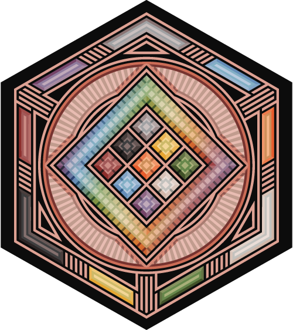

Psychromattica System Reference Document
Psychromattica System © 2010 - 2025 by David Beall is licensed under CC BY 4.0. To view a copy of this license, visit https://creativecommons.org/licenses/by/4.0/
Foreword: A Layered Learning Experience
Welcome to the Psychromattica system. This System Reference Document (SRD) contains the complete, authoritative rules for the Psychromattica system.
The rulebook is a layered experience, designed to teach the game in escalating steps of complexity. The entire system is built on a single, unified concept: using dice rolls to deplete Clocks.
Document Overview
- Layer 1: The Dice and Objectives. Introduces the Standard Roll, Clocks and situation clock, Target Numbers and the Episode Downtime cycle.
- Layer 2: The Situation and Actions. Introduces your character's resource Clocks, the challenges you'll face, the actions you can take, and the Situation Clock that tracks immediate progress.
- Layer 3: Tactical Modifiers. Adds temporary states and effects that modify the core gameplay.
- Layer 4: The Strategic Game. Reveals the full, nested clock hierarchy, details different Situation Types
- Layer 5: Entities, Items, and Progression. Provides rules for entity and item stats, clocks, growth, and advanced Karma usage.
- Appendices A - B: Full Keyword Encyclopedia and Entity Codex
- Appendices C - D: Character Creation and Concept Tools
- Appendices E - F: New Player Aid and One Shot for First Time Players
- Appendices G - J: The Curator’s Library of Aides and References
Glossary of Core Concepts
The system is built on a few core ideas. Understanding these key terms will make learning the game much easier.
- Clock: The central mechanic of the game. A Clock is a resource tracker (like a health bar) that you are trying to deplete to 0. Your character has personal Clocks (HP, SP, EP), and challenges have their own Clocks (Task Clock, Situation Clock).
- Standard Roll (SR): The result of your dice roll. You roll two ten-sided dice (2d10), and the result is typically the number on your designated "Main Die," unless you roll doubles.
- Effect Value (EV): Your total score when trying to affect another entity. It's calculated as SR + Level + a chosen Stat. Your goal is to have your EV exceed the target's Resistance.
- Effort Roll (ER): Your total score when trying to overcome a non-combat challenge. It's calculated as SR + Level + a chosen Stat. Your goal is to have your ER exceed a challenge's Target Number.
- Resistance: An entity's primary defense value. It's calculated by adding their three highest stats together.
- Target Number (TN): The difficulty of a non-combat challenge. This is the number you need to beat with an Effort Roll.
- Keyword: The fundamental building block of all special abilities. Each keyword grants a unique active, passive, or gear-based effect that allows you to bend or break the core rules. Learning new keywords is how you level up.
-
Tag: A temporary effect on a character, gained from keywords or other abilities. There are two types:
-
Status Tag: A negative effect (like Weaken or Blight) that is usually triggered automatically.
-
Boost Tag: A positive effect (like Haste or Ward) that you can choose when to use.
-
Situation: A single, self-contained encounter or challenge, like a combat, a tense negotiation, or a complex trap. Successfully resolving a Situation is how you advance the overall story.
- Animation: A simplified entity, often a creature, minion, or construct, controlled by the Curator or a player.
- Karma: A special resource earned through good roleplaying and succeeding in Situations. It can be spent to reroll dice, learn new abilities, or influence the story in powerful ways.
- Curator: The person facilitating or running the experience, referred to as the Game Master in other systems.
Layer 1: The Dice and Objectives
This first layer contains the absolute essential mechanics needed to play the game at its most basic level.
1.0: The Standard Roll (SR)
The Core Roll: All actions are resolved with a Standard Roll (SR).
(1.1) Roll two ten-sided dice (2d10). Designate one as the Main Die and the other as the Lucky Die. Your result is the number on the Main Die, unless both dice show the same number (a "double").
(1.2) Chaining Doubles: If you roll doubles during any roll that requires an SR, add their combined total (e.g., 14) to a running total and roll both dice again. Repeat this process for any subsequent doubles. Your final SR is the sum of all chained doubles plus the final, non-double result from your Main Die.
(1.3) Advantage & Disadvantage: With Advantage, use the higher of the two dice for your non-double result. With Disadvantage, use the lower. This only applies to the final roll in a chain.
(1.4) Critical: Any double is also a Critical. A Critical result grants a bonus to the effect of the roll. The player chooses which of these effects to apply, justifying their choice with the description of their actions.
- Edge (cutting/tearing effects): Apply Weaken Tag
- Point (piercing/penetrating effects): Apply Blight Tag
- Surface (blunt/impact effects): Apply Daze Tag
- Restore (healing or value recovery effects): Restore the target clock to its maximum or revive an eligible target
- Value Loss: The total value loss dealt to the target's clock is doubled. This is calculated after subtracting the target's Resistance from your EV.
(1.5) An effect is considered successful if it meets any of the following conditions:
- It causes a change in the targeted clock (HP, SP, or EP)
- It applies a tag (such as Weaken, Blight, or Daze)
- It imposes movement or a condition (e.g., knockback, stunned, silenced)
(1.6) An effect is considered a miss only if the initial roll is made with Disadvantage and the lower of the two dice is a 1. This represents a catastrophic fumble or clear misfire.
- A miss always fails, regardless of the total calculated EV or ER and the targeted Resistance or TN..
- This applies to any EV or ER and leads to a result of 0 progress on the clocks and some kind of narrative complication.
- Misses do not apply value loss, keywords, tags, or effects of any kind.
(1.7) When a character achieves a final Standard Roll (SR) result of 31 or higher, it is a Super Critical. A super critical is also considered a critical and retains the effects a critical grants
(1.8) In addition to the critical effects of the action, a Super Critical grants the following benefit:
- Heroics: Immediately remove 1 point from the current Situation Clock. This represents an act of legendary prowess that quickly overcomes the situation.
- Machina: For play that occurs without a situation clock the super critical grants the player a significant positive result for the roll. The Curator should empower the player to take narrative control and describe the results of their roll.
2.0: Depleting Clocks: The Core Mechanic
Your goal is to deplete a target's Clock to 0. If your roll exceeds the Target Number (TN) you deplete the targeted clock by the difference.
(2.1) Progressing the Scene (vs. The Situation): Any clock you resolve depletes the situation clock by 1.
- (2.1.1) Target Defense (vs. Entities): Your Effect Value (EV) (
SR + Level + Stat) must exceed the target's Resistance (Sum of 3 highest Stats). The difference between the EV and Resistance is the amount the targeted clock is reduced - (2.1.2) Challenge Difficulty (vs. non Entity Clocks): Your Effort Roll (
SR + Level + Stat) must exceed the challenge's Target Number (TN). The difference in the Effort Roll and TN is the amount the targeted clock is reduced. - (2.2) A clock is resolved when it reaches 0.
- (2.3) When the Situation Clock reaches 0 the Situation reaches its endpoint.
(2.4) The length of a Clock determines how much effort is required to resolve a challenge. Use the provided tables as a guideline to set the starting value for Task Clocks.
(2.5) Using Clocks in Play:
- Binary Checks: For simple, pass/fail tasks, a Clock of 1 is often sufficient.
- Complex Tasks: Longer Clocks are excellent for representing multi-stage challenges.
- Curator Discretion: These numbers are a guide, not a rigid rule.
3.0: Target Numbers (TN)
The TN represents the difficulty of the task. A player must roll higher than the TN to succeed.
(3.1) A reference list of TNs to set difficulty:
- 3 - Trivial
- 6 - Easy
- 9 - Average
- 12 - Difficult
- 15 - Challenging
- 18+ - Heroic
(3.2) Your total roll must be strictly greater than the Target Number or Resistance. Meeting the target number is not a success. This makes the amount by which you succeed a direct and meaningful measure of your effect.
4.0: Story Structure
The Story is the overarching narrative, composed of two main phases: Episodes and Downtime.
(4.1) Episode: This is the active, story-driven period of play.
(4.2) An Episode consists of a smaller unit referred to as Scenes (3 is Average).
(4.3) Scenes are any combination of Travel, Situations, and Rests.
(4.4) Downtime: This is a longer period between episodes focused on rest, recovery, and long-term advancement.
5.0: Priority and Turn Order (Card-Based System)
At the beginning of a situation that requires turn order to be tracked, priority is determined using an initiative deck.
(5.1) Setup Each combatant and any recurring environmental effects are assigned a unique card.
(5.2) The Round and Turn Order The Curator draws the top card of the initiative deck. The character on that card has priority and takes their turn. After a character's turn is complete, their card is placed in a discard pile. This process continues until the initiative deck is empty.
(5.3) Subsequent Rounds When the initiative deck is empty, the round is over. If the situation is not resolved, the cards of all surviving combatants are collected from the discard pile and shuffled to create a new deck for the next round.
(5.4) Action Economy A character's Alacrity stat determines their total number of available actions per round (not per turn). This pool of actions is refreshed at the start of each new round (when the deck is shuffled) and can be spent across any number of turns a character may get within that round.
(5.5) Ceding Priority (Pass Action) A character may choose to end their current turn early by using the Pass action. The resolution depends on whether they have actions remaining in their pool for the round.
- If the character has actions remaining: Their initiative card is moved to the bottom of the deck. They will act again later in the round after all other cards have been drawn.
- If the character has zero actions remaining: Their turn ends and their card is placed in the discard pile as normal.
- You cannot use the Pass action if your initiative card is the last one to be drawn in the current round.
(5.6) Seizing Priority (Interrupts)
If an effect (such as a successful Parry reaction) allows a character to immediately gain priority, the turn order is manipulated as follows:
- The character seizing priority has their card pulled from its current location (either the deck or the discard pile). They immediately become the active character.
- The turn of the character who was just interrupted ends. Their card is placed directly on top of the initiative deck.
- The character who seized priority now takes their turn, spending actions from their action pool as normal. Any free actions granted by the interrupting effect (such as from a successful Parry) do not consume actions from this pool.
(5.7) Entering a Situation Mid-Round When a new combatant joins a Situation after the initiative deck has been partially drawn, their initiative card is shuffled into the remaining, undrawn portion of the deck. This reflects the chaos of a developing situation and gives the new combatant a fair, unpredictable chance to act within the current round. Their card will be included in the full shuffle at the start of the next round as normal.
6.0: Surprise
When a group or individual initiates combat against unaware targets, they gain surprise for the first round. Turn order is determined by creating two piles of initiative cards.
- The cards of all combatants with surprise are shuffled into a "Surprise Pile."
- The cards of all combatants who are surprised are shuffled into a "No Surprise Pile."
- The Surprise Pile is placed on top of the No Surprise Pile to create the initiative deck for the first round.
- Surprised entities still have Disadvantage on all Reactions during the first round.
MEET SPARKS: OUR EXAMPLE CHARACTER
To help illustrate how these rules work, let's create a character named Sparks. We'll follow her journey as she grows from a novice adventurer into a capable hero.
The Seed (Level 0) Sparks' journey begins at Level 0. All of her stats (Movement, Brawn, Wit, etc.) have a value of 1. The first and most important choice we make is her Seed Keyword, which defines her core potential. We've chosen Attuned (1.3) for Sparks. This means she has a deep, innate connection to a specific person or object. Let's say she carries an old, dented compass that belonged to her grandfather, and this is the object she is attuned to.
Sparks in Action: Her First Roll Sparks is trying to get through a magically locked door. The Curator decides this is a simple Environmental Challenge with a Target Number (TN) of 9. Sparks decides to channel her innate energy into her attuned compass, hoping its connection to her grandfather's adventurous spirit can bypass the lock.
This requires an Effort Roll. The formula is SR + Level + Stat.
Alex, Sparks' player, rolls 2d10 for a Standard Roll (SR). The dice land on an 9 (Main Die) and a 3 (Lucky Die). Her SR is 9. The Curator asks Alex which Stat she wants to use. Alex says, "I'm focusing my inner will, so I'll use my Force stat. (All her stats are 1 so the choice is based on the narrative)"
Alex calculates her total Effort Roll: 9 (SR) + 0 (Level) + 1 (Force Stat) = 10.
Her result of 10 exceeds the TN of 9! The magical lock sputters and clicks open. Since her roll exceeded the TN by 1, the door's "Clock" (which was just 1 in this simple case as a binary check) is reduced to 0. Sparks has overcome her first challenge.
Layer 2: The Situation and Actions
This layer introduces your character's resources, the choices you can make, and the immediate structure of an encounter.
1.0: Your Character's Clocks (Resources)
You have three personal Clocks. You must prevent these from being depleted.
- (1.1) Health Points (HP): Your physical durability. Starts at 10. Depleted by value loss.
- (1.2) Stamina Points (SP): Your physical exertion. Starts at 10. Depleted by strenuous actions.
- (1.3) Energy Points (EP): Your inner power. Starts at 10. Depleted by using innate abilities.
-
(1.4) Each Clock can be restored via actions or downtime
- (1.4.1) HP is restored via Downtime and as the result of activate actions.
- (1.4.2) SP is restored during initiative or as an action.
- (1.4.3) EP is restored as an action or during downtime.
2.0: Environmental Challenges (Micro-Clocks)
In addition to Entities (living beings with HP, SP, and EP Clocks), you will face three distinct types of Environmental Challenges.
-
(2.1) Barrier: A physical or magical obstruction that must be worn down or broken through.
- (2.1.1) Mechanic: A Barrier is defined by a Task Clock and a Target Number (TN). The TN is typically 10 + the Barrier's Level.
- (2.1.2) Interaction: Players use
Effort Rollsto deplete the Barrier's Task Clock.
-
(2.2) Puzzle: A cerebral challenge that requires logic or insight. It is not depleted with repeated rolls.
- (2.2.1) Mechanic: A Puzzle is solved primarily through player ingenuity and roleplaying, not by making repeated rolls to wear it down. It is defined by a single, high Target Number (TN) that represents the challenge's complexity.
- (2.2.2) Interaction: Players propose a solution to the Puzzle through roleplaying. Once they have a viable plan, the Curator may call for a single, decisive Effort Roll against the Puzzle's TN to confirm if their solution is successful.
-
(2.3) Traps (Environmental Hazards): An Item with keywords placed in the environment to create a hazard. A trap is defined by three components: The Payload, The Trigger, and The Challenge.
- (2.3.1) The Payload (The Item): The trap itself is an item that produces an effect. When triggered, it uses the Activate action to release its keywords.
- (2.3.2) The Trigger (Narrative): The narrative event that causes the Payload to Activate. This is set by the Curator (e.g., a pressure plate, a failed roll to disarm its mechanism).
- (2.3.3) The Challenge (The Mechanics): The challenge that players must overcome to prevent the trap from triggering. This is almost always a Barrier or a Puzzle.
3.0: The Situation Clock
An encounter or phase of a Scene is called a Situation. It is represented by a Situation Clock.
(3.1) The Situation Clock's starting value is equal to the number of key Micro-Clocks (Entities, Barriers, Puzzles) within it. (3.2) When you deplete any HP or Task Clock to 0, or solve a Puzzle, you deplete 1 point from the parent Situation Clock. (3.3) Depleting a Situation Clock to 0 reduces the Scene Clock by 1.
4.0: The Action Catalog
The following is a complete list of actions available to a character, organized by type.
(4.1) A character's Alacrity stat determines their total number of available actions per round. This pool of actions is refreshed at the start of each new round (when the initiative deck is shuffled). (4.2) A character can never take more than 6 total actions per round.
Curator’s Tip: The Three Core Choices
For faster play, especially with new players, you can boil down the entire Action Catalog into three core questions a player can ask on their turn. Almost every action falls into one of these categories.
“Do I want to CHANGE something?” This is an Activate action (attacking, using an ability) or an Effort Roll (overcoming a barrier). The goal is to directly affect an enemy or the environment.
“Do I want to CONTROL the battlefield?” This is a Maneuver (Shove, Taunt, Disarm). The goal isn’t to cause value loss, but to change the tactical situation by moving enemies or applying conditions.
“Do I want to PREPARE for the future?” This is a Focus action (gaining Advantage, learning a Clue) or a Teamwork action (buffing an ally). The goal is to sacrifice this turn’s action for a bigger advantage on a future turn.
By framing their turn with these three simple questions a player can quickly decide on their intent, which makes choosing a specific action from the catalog much faster and more intuitive.
(4.3) Effect Actions (Single Action)
-
Activate: The primary action for causing an effect. The base roll for an Activate action is called an Effect Value (EV).
- The EV is calculated by adding a Standard Roll, The Character's Level, and the Character's Chosen Stat.
-
Keyword Active Effects can be applied for a cost of one EP per keyword. To calculate the final Energy Point (EP) cost for applying keywords to this action, follow these steps in order:
- Step 1: Determine Base Cost. The base cost is 1 EP for each keyword you apply to the action.
- Step 2: Apply Innate Reduction. Reduce the base cost by your character's Power (P) stat. The cost cannot be reduced below 0. This is your action's Actual Cost.
- Step 3: Apply Temporary Reductions. You may now choose to expend resources from temporary sources (such as a 'Charge' Boost Tag) to reduce the remaining Actual Cost further.
-
If the EV does not exceed the target's Resistance, the Action has no effect unless a keyword states otherwise.
-
Called Shot: You make a specialized Activate action with Disadvantage to target a specific weak point on an enemy Character or to target an item they are holding.
- Targeting an Item: A successful hit deals value loss to the item's Durability Clock instead of the wielder's HP. The wielder defends with their normal Resistance.
- Targeting an Entity: A successful Called Shot against an Entity is a Critical Hit, granting the choice of its bonus effects. If this attack reduces the target's HP Clock to 0, they are killed instantly, bypassing the normal Unconscious state (unless a passive keyword or other effect prevents this).
(4.4) Move Actions (Single Action)
- Move: Travel up to a number of range bands equal to your Movement stat.
- Mount: Perform an Interact action to gain the Riding condition on a valid target.
- Dismount: Perform an Interact action to end the Riding condition.
- Hide: Make an
Effort Roll(SR + Level + Stat) to become Hidden. The result is the TN to find you.
(4.5) Maneuver Actions (Single Action, costs 1 SP)
- Shove: Make an EV roll vs. target's Resistance to push them or knock them Prone.
- Disarm: Make an opposed EV roll to force a target to drop an item.
- Restrain: Make an EV roll to grant the Bind Tag to a target.
- Lunge: Make a melee strike that can target an enemy at Close range instead of Touch range.
- Lock On: Gain Advantage against a target, who also gains Advantage against you.
- Taunt: Make an opposed EV roll to force a target to use Lock On against you.
- Improvise: Use the environment or an item to apply a Status Tag without dealing value loss.
- Combined Strike: When making an Activate action, for an additional 1 SP, you may add the Level and one keyword from a second equipped item to your effect. This added keyword does not alter the EP cost of the action.
- Feint: Make an opposed EV roll to make the target Exposed.
(4.6) Focus & Assess Actions (Consumes all actions for your turn, costs 1 SP)
When you choose to take a Focus or Assess action, it is the only action you can take during your current turn. You immediately expend any remaining actions you have in your pool for this turn, and your turn ends.
-
Recharge: As a full turn action that costs 1 SP, you may choose one of the following effects:
- Restore Stamina Points (SP) equal to your Brawn stat.
- Restore Energy Points (EP) equal to your Wit stat.
- This action cannot be performed if you have 0 SP, as its cost cannot be paid.
-
Recover: Remove a number of Tags of your choice equal to either Brawn, Wit, or Influence from your Tag pool.
- Ready: Add your Wit stat to your Resistance value until the start of your next turn.
- Advantage: Gain Advantage on the first SR you make on your next turn.
- Reveal: Make an Effort Roll against a Hidden target's Hide roll to locate and target them.
- Clue: Learn a number of facts about a target equal to your Technique stat.
(4.7) Effort & Team Actions (Single Action)
- Effort Roll: The primary action for targeting a Barrier's Task Clock or solving a Puzzle.
- Teamwork: Grant a stat of your choice as a bonus to an ally’s next Effort Roll.
- Sabotage: A target suffers Disadvantage on their next Effort Roll.
(4.8) Reaction Actions (Triggered outside your turn)
- Avoid (Dodge) (1 SP): Make an opposed EV roll to negate an incoming effect. If the EV is higher than the incoming EV, ignore the effect.
- Resist (Block) (1 SP): Add your Level to your Resistance against a single incoming effect.
- Parry (3 SP): Make an opposed EV roll to negate an incoming effect. If the EV is higher than the incoming EV, ignore the effect then immediately gain priority as described in Layer 1 (5.6). If you have no remaining actions for the round, you may make 1 free action. This can be any single action from the catalog (such as Activate or Move), but any associated SP or EP costs must still be paid.
- Clash (2 SP): Use your own effect to intercept another; the loser takes the combined value loss.
- Reflect (1 SP): After a successful Avoid or Resist, redirect the original effect back at the attacker.
- Counter (1 SP): After a successful Avoid or Resist, make an immediate Basic Activate action.
- Guard (1 SP, Ally Reaction): Intercept an attack targeting an ally, become the target of the effect and allow you to react if able. The ally must be within close proximity.
- Combo (1 SP, Ally Reaction): Add a stat of your choice and one of your known keywords to an ally’s effect.
- Flank (1 SP, Ally Reaction): If an ally attacks an enemy adjacent to you, grant that enemy Disadvantage on their next action.
(4.9) Setup & Command Actions (Single Action)
- Reload: Required by the
Materialkeyword; consumes an item. - Assist: Designate one target. All allies gain Advantage on their next action against that target.
- Pass: End your turn, ceding Priority. If you have actions remaining in your pool for the round, your initiative card is moved to the bottom of the deck. If you have zero actions remaining, your card is placed in the discard pile. You cannot use the Pass action if your initiative card is the last one to be drawn in the current round.
- Command: Direct a Companion, Animation, or Mount under your control to act in place of your action.
5.0: Effort
Social challenges, skill challenges, and any non-combat challenge are resolved using Effort Rolls against a Target Number (TN) and a Clock.
(5.3) Effort Roll Mechanics
- Roll a Standard Roll (SR) ; use Advantage/Disadvantage if applicable.
- ER (Effort Roll) = SR + Chosen Stat + Level
- Keywords or other effects are then applied to the ER.
- Subtract TN from the ER and reduce the Clock by the amount if it is positive.
(5.4) Social challenges are an Effort Roll Shaped by 3 Criteria
-
(5.4.1) Faction Trust: The social status of the character with the target’s associated faction or group determines advantage or disadvantage.
-
Ally - Advantage
- Neutral - Standard Roll
-
Enemy - Disadvantage
-
(5.4.2) Character Trust: The personal level of trust and respect for the character from the target determines the TN.
-
Trusting - TN 5
- Neutral - TN 8
-
Doubting - TN 12
-
(5.4.3) Tension: The urgency of the situation that merited the need for the Social Challenge.
-
Calm - Clock = 3
- Neutral - Clock = 5
-
Tense - Clock = 10
-
(5.4.4) Success of a social challenge is decided by reducing the clock to 0.Each successful roll chips away at the target's resolve or builds rapport. While the ultimate goal is to deplete the clock entirely, the Curator may grant narrative benefits for partial successes along the way.
(5.5) Non combat and non social challenges follow the same core mechanic: Effort Roll vs. TN and Clock.
- (5.5.1) The TN and Clock are determined entirely by the narrative stakes and task complexity and are set by the Curator.
- (5.5.2) Success is measured by reducing the clock to 0 through accumulated effort and is based on the narrative the Curator has set
- (5.5.3) Binary challenges do not use a clock and are successful as long as the ER exceeds the TN
6.0: Stat Application (Player's Choice)
Many actions and keywords in the Psychromattica system allow a character to add a stat to a roll.
(6.1) The player always chooses which of their nine stats to apply to the roll. (6.2) The player should briefly justify their choice based on their description of the action. (6.3) Keywords and rules may require a specific stat instead of player choice and will specify as such. (6.3) The Curator has the final say on the appropriateness of a stat, but the default assumption is always to empower the player's choice.
7.0: Defeat, Death, and Resurrection
Managing your resource Clocks is key to survival. Allowing them to be fully depleted can have dire consequences.
(7.1) When your primary Clock (HP) is reduced to 0, you are considered Downed. You immediately suffer the associated Condition (Unconscious)
- (7.1.1) A Downed character is not defeated and can still be restored or affected as normal.
(7.2) While you are at 0 HP (Unconscious), any further effect that would cause you to lose HP is lethal. Your character is dead, unless a passive keyword or other effect states otherwise.
(7.3) Bringing a character back from death is a monumental task. It can be achieved in one of two ways:
- (7.3.1) Miraculous Restoration: An ally scores a Critical while using a Restore effect on your character during the same situation that caused the character to be Downed.
-
(7.3.2) Emergency Care: A character can make a singular attempt to resuscitate a down character with the following criteria:
-
A dead character can only be attempted to be resurrected with emergency care once during the Scene they were downed during.
- The roll is made as a SR + The acting characters Level
- The TN of the roll is the Target’s maximum HP + the Number of rounds they have been Dead.
- A successful roll results in an alive but still Downed Character with all clocks set to 0.
-
A failed roll results in the character requiring Downtime to be resurrected.
-
(7.3.3) Downtime: The party performs a special activity during a Downtime phase, often requiring a significant Karma expenditure or the completion of a difficult side-quest, as determined by the Curator.
SPARKS IN ACTION: THE AWAKENING
After overcoming her first challenge, the Curator rules that Sparks has had her Awakening. This is a major narrative event that transforms her from a Level 0 "Seed" into a Level 1 hero.
The Awakening (Level 1)
- Level Up: Sparks is now Level 1.
- Stat Growth: All nine of her stats increase from 1 to a new baseline of 2.
- New Keywords: She immediately learns three new keywords. To build on her "Attuned" theme of connection and utility, her player, Alex, chooses:
- Traveler (1.1): Alex chooses Teleport as her movement type. She can now instantly relocate to a visible location.
- Insightful (8.3): This allows her to sense emotions and detect lies, reinforcing her theme of perception and connection.
- Trickster (9.3): This gives her the ability to create minor sensory illusions, a clever way to use her powers non-violently.
Sparks' Level 1 Stats:
- Level: 1
- Stats: All stats are 2.
- HP/SP/EP: 10/10/10
- Resistance: 6 (sum of her three highest stats, which are all 2)
Her First Situation
Sparks enters a warehouse and finds two Level 1 Thugs (Animations) threatening a merchant. The Curator declares a Situation with a Situation Clock of 2 (one for each Thug).
Rook's Turn: Rook, Sparks' ally, defeats one Thug. The Situation Clock is now 1.
Sparks' Turn: It's Sparks' turn, and she has 2 actions (from her Alacrity stat). The remaining Thug has a Resistance of 4 (level 1 animation).
Action 1 (Activate): Alex declares, "I want to use my Trickster ability to create the illusion of a guard dog barking behind the Thug to distract him." She will Activate this effect, targeting the Thug's EP (mental stamina).
- Keywords & Cost: To make this work, she applies the Trickster (9.3) keyword. This costs 1 EP, which is then reduced by her Power stat of 2. The final cost is 0 EP (min 0).
- The Roll: She rolls a 6 on her SR.
- The Calculation: Alex chooses to use her Influence stat. Her Effect Value (EV) is 6 (SR) + 1 (Level) + 2 (Influence) = 9.
- The Result: Her EV of 9 easily beats the Thug's Resistance of 4. The Thug loses 5 EP and is visibly startled. The action was successful. Since Sparks still has one action remaining in her pool for this turn, she decides to use it.
Action 2 (Move): "While he's distracted," Alex says, "I'll use my Traveler (Teleport) ability. I'm going to use my Move action to teleport behind the merchant to get between him and the Thug." She instantly relocates, ending her turn. Priority now passes to the next card in the initiative deck.
The next card is the Thug! The Thug elects to flee, a victory for our team!
Layer 3: Tactical Modifiers
This layer adds temporary states and effects that modify the core gameplay.
1.0: Conditions
Your character can be affected by Conditions, Status Tags, and Boost Tags. These represent temporary states that can alter your capabilities or force you to make difficult choices.
(1.1) Conditions are persistent effects that are based on the character’s states instead of Tags.
- Mounted: Another entity is riding you. While being ridden you are silenced unless commanded. The rider dictates all actions during either entities’ turn and may expend actions from the action pool of either the rider or the mount.
- Riding: While Riding, you dictate all actions during either the rider’s or mount’s turn and may expend actions from the action pool of either the rider or the mount.
- Prone: Disadvantage on all actions. Standing costs a Move Action.
- Crouching: Grants advantage to concealment. Movement is halved.
- Cover: Attacks against you suffer disadvantage. Grants advantage to Hide.
- High Ground: +10 ft elevation. Advantage on ranged effects.
- Submerged: Underwater. Disadvantage on actions; movement halved; grants cover.
- Hidden: Undetected. Grants advantage on next action vs unaware target. Cannot be targeted.
- Exhausted: SP = 0. Disadvantage on all rolls.
- Injured: Max HP, SP, and EP are reduced by 5 (minimum 1) until next Downtime.
- Unconscious: HP = 0 or asleep. Cannot act. The next HP loss is fatal.
- Silenced: EP = 0, cannot use innate keywords.
- Exposed: Actions gain Advantage when targeting Exposed targets.
2.0: Tags
A tag is a representation of a positive or negative effect that is placed on a player that requires a trigger to resolve and remove.
(2.1) When an effect applies a Tag, it is added to the target's "Tag Pool."
- (2.1.1) An entity can have multiple instances of the same Tag in their pool
- (2.1.2) An entity can have a maximum total number of 10 boost tags and 10 status tags.
- (2.1.3) An entity can have a maximum of 5 of any one tag type in their pool.
(2.2) Tags have a specific trigger condition defined by the keyword that grants the Tag.
- (2.2.1) When that condition is met, only one instance of that Tag from the pool is resolved and removed.
(2.3) The only other way to remove Tags is through specific actions or keyword effects.
- (2.3.1) When using such an ability, the player chooses which specific Tag(s) to remove from their pool.
(2.4) Status Tags
Status Tags are debilitating effects that act as Forced Consequences. Their effects are mandatory when their trigger condition is met.
- Mark (Null): The next attack roll made against you gains Advantage. After the attack resolves, one Mark Tag is removed from your pool.
- Impair (Silver): The next time you use an action that would cost Stamina (SP), the cost is increased by 1. After the cost is paid, one Impair Tag is removed from your pool.
- Slow (Yellow): On your next turn, you have 1 fewer action (to a minimum of 1). At the end of that turn, one Slow Tag is removed from your pool.
- Daze (Green): Your next SR is reduced by the number of Daze Tags in your pool, when that roll is resolved, one Daze Tag is removed from your pool.
- Curse (Black): The next time you roll, you gain Disadvantage. After the roll resolves, one Curse Tag is removed from your pool.
- Bind (Orange): While you have a Bind Tag in your pool, you are Immobilized. You can spend 1 SP, and an action, to remove one Bind Tag from your pool.
- Weaken (White): The next time you take value loss, your Resistance is reduced by 1 for each Weaken Tag in your Tag Pool. After the value loss resolves, one Weaken Tag is removed from your pool.
- Blight (Red): The next time you take any action or reaction, you immediately suffer 1 unavoidable point of value loss. After the value loss is dealt, one Blight Tag is removed from your pool.
- Silence (Blue): The next time you take an action, you cannot apply any Innate keywords to it. After that action resolves, one
SilenceTag is removed from your pool. - Nullify (Purple): When applied, the target’s passive keywords are rendered inactive for as long as they have a nullify tag in their pool. When a nullify tag is added to the pool, remove a boost tag from the pool. A Nullify tag is removed when you gain priority for the first time in a round.
(2.5) Boost Tags
Boost Tags are beneficial effects that act as Tactical Opportunities. The player who has the Tag chooses when to expend it.
- Liberate (Null): When an effect would make you Immobilized, you may expend this Tag to negate that effect.
- Augment (Silver): When you Activate an ability, you may expend this Tag to add any keyword to that effect (its EP cost must still be paid).
- Haste (Yellow): At any point during your turn, you may expend this Tag to gain additional action.
- Ward (Green): When you would be targeted by an action, you may expend this Tag to ignore that action's effects.
- Bless (Black): When you make a roll, you may expend this Tag before rolling to gain Advantage.
- Charge (Orange): When you would spend Energy Points (EP) to apply keywords, you may expend this Tag to reduce the total EP cost by 1.
- Cure (White): As a free action on your turn, you may expend this Tag to remove one Status Tag from your pool.
- Regen (Red): When you make an action, you may expend this Tag to restore 1 point to a Value of your choice.
- Enhance (Blue): When you make a roll, you may expend this Tag after the roll to add a bonus to the final result equal to your Influence.
- Obscure (Purple): As an action, you may expend this Tag to become Hidden. The Target Number to locate you is 10 + Level + Chosen Stat.
(2.6) Range
The game uses range bands to determine distances.
(2.6.1) Range Bands define targeting and movement distances:
- Touch / Melee: 0–1 meter
- Close: 1–3 meters
- Near: 3–10 meters
- Far: 10–100 meters
- Distant: 100–300 meters
(2.6.2) Ranged Effects: By default, all ranged effects (such as those using a projectile or thrown object) made against a target beyond Touch range are made with Disadvantage. This represents the inherent difficulty of aiming and hitting a distant target under the pressure of a dynamic situation. This synergizes with the Advantage Focus Action (see Layer 2, 4.6), which can be narratively described as "taking a turn to aim" to negate this base Disadvantage.
(2.6.3) Ranged gear that normally requires ammunition does not track ammo. The Material keyword allows such gear to consume ammunition or crafting material for additional effect, as described under Reload and Material
SPARKS IN ACTION: TAGS AND TEAMWORK
Sparks has now reached Level 2 (by learning two more keywords in Downtime: Enhance (8.4) and Obscure (9.4)) and has placed a stat point into Influence, raising it to 3.
She and Rook are facing a Level 2 Security Captain. The Captain has a powerful effect that can inflict the Blight Tag.
The Attack: The Captain attacks Sparks. The effect hits, and the Curator says, "Sparks, you take 3 HP loss, and you gain a Blight (Red) Status Tag." This Tag goes into Sparks' Tag Pool.
The Consequence: The Curator reminds Alex of the Blight Tag's rule: "The next time you take any action or reaction, you immediately suffer 1 unavoidable point of value loss."
Sparks' Turn: It's Sparks' turn. She needs to act, but knows it will hurt.
Action 1 (Activate + Blight Trigger): Alex decides it's worth the pain. "I need to help Rook! I'm going to Activate my Enhance ability to give him a Boost Tag." The moment she declares the action, the Blight Tag triggers.
- Blight Resolves: "Okay," the Curator says, "the Blight resolves. You take 1 point of unavoidable value loss to your HP, and the Blight Tag is removed from your pool." Sparks' HP drops.
- Enhance Resolves: Now her chosen action proceeds. She makes her roll for the Enhance effect. It's successful, and Rook gains an Enhance Boost Tag that he can use later to add a bonus to one of his rolls.
Action 2 (Condition): "Now I need to get out of sight," Alex says. "I'll use my second action to take the Hide action and try to get into Cover behind some crates."
- The Roll: She makes an Effort Roll using her Stealthy talent's passive Advantage: SR + Level + Stat. Her result is a 14.
- The Result: The Curator notes, "Your Hide TN is 14. You are now in Cover and have the Hidden condition. Enemies will have to beat that TN to find you."
Layer 4: The Strategic Game
This layer reveals the full game structure, the rules for resolving different types of situations.
1.0: Scene Clock and Situation Types
The outcome of an entire Scene is determined by the party's ability to deplete the Scene Clock , which represents completing their primary objective through a series of situations, travel, and rest periods.
(1.1) The Scene Clock: This clock tracks progress towards the players' goal. It starts with a value based on the Scene's complexity (typically 8-15 points). It is depleted by 1 when Situation Clocks are resolved, Travel occurs, or a Rest is taken.
(1.2) Scenes are resolved using the standard Situation system. However, a Race Situation introduces a hard time limit via the Threat Clock.
-
(1.2.1) Standard Situation (Combat, Exploration, Social)
-
Mechanic: Threat is managed through narrative consequences.
- Success: The Situation Clock is reduced to 0.
- Failure Consequence: When a Situation is failed, the scene is not ended, the Curator may introduce a Complication (e.g., more enemies arrive, the objective becomes harder, an ally is put in danger).
-
Resolution: The Scene is a Success if the Scene Clock is depleted. A Situation is considered failed if the players are all defeated or are forced to retreat before its clock can be depleted to 0. When a Situation is failed, the scene does not necessarily end. Instead, the Curator may introduce a Complication.
-
(1.2.2) Race Situation (Timed, High-Stakes)
-
Mechanic: This special situation type introduces the Threat Clock , turning the scene into a direct race against time.
- Success: The Situation Clock is depleted to 0.
- Partial Success: The Scene ends prematurely and the Scene Clock has fewer points remaining than the Threat Clock.
- Failure: The Threat Clock is depleted to 0, or the Scene ends with the Threat Clock having fewer or equal points remaining than the Scene Clock.
(1.3) The Threat Clock: This mechanic is only used during a Race situation. Its size is determined by a simple lookup table, providing a "threat budget" based on the scene's difficulty.
- (1.3.1) When a Timed Situation begins, the Curator determines its Difficulty Category based on its Level Modifier (relative to the party's average level). They then consult the table below, cross-referencing the Situation Level with the Difficulty Category to find the Threat Clock's starting value. This value is set for the entire scene.
| Difficulty Category | Level Modifier | Description |
|---|---|---|
| Hard | L+1 or L+2 | A tight race with little room for error. |
| Normal | L+0 | A standard challenge with a fair buffer. |
| Easy | L-1 or L-2 | A forgiving situation with ample time. |
- (1.3.2) Threat Budget Table:
| Situation Level | Hard | Normal | Easy |
|---|---|---|---|
| 1-3 | 8 | 15 | 20 |
| 4-6 | 12 | 20 | 30 |
| 7-9 | 16 | 25 | 40 |
- (1.3.3) Depleting the Clock (The Cost of Action & Time):
- Action Cost: Whenever a player attempts an Effort Roll against a Barrier or Puzzle (regardless of success), the Threat Clock is immediately depleted by 1 point.
- Time Cost: At the end of every Round during a combat or other time-sensitive conflict within the Race, the Threat Clock is depleted by 1 point.
SPARKS IN ACTION: RACING THE CLOCK
Sparks and Rook are now Level 3. They are in a Race Situation. A bomb is set to go off in a power conduit.
Curator Setup: "This is a Race Situation. The Scene Clock starts at 5. You need to get through two Barriers (an outer and inner door) and defeat a final 'Boss' Sentry Turret to reach the bomb. Your main objective is the Situation Clock, which starts at 3 (for the three challenges)."
The Threat: "Because this is a Race, I am also activating the Threat Clock. Based on the difficulty, it starts at 15. It will tick down every round and every time you make an Effort Roll. If it reaches 0 before the Situation Clock, you fail."
The Race Begins:
- Barrier 1: Rook uses Effort Rolls to break down the first door. Each time he makes an Effort Roll, the Curator announces, "Okay, the Threat Clock ticks down by 1." The door is tough, and it takes him a full round. The Curator says, "End of the round. The Threat Clock ticks down by 1 again." The Threat Clock is now at 13.
- Barrier 2: Sparks takes over on the second door, which is a complex electronic lock (a Puzzle). She uses her Technique stat for her Effort Rolls. She succeeds, depleting the second clock. The Situation Clock is now at 2. The Threat clock is now at 12.
- The Boss: They face the Sentry Turret. It's a tough fight that lasts two rounds. The Situation Clock is now at 0, the Threat Clock is now at 10.
They successfully finish the situation with time to spare!
Layer 5: Entities, Items, and Progression
The world is populated by various beings and objects, defined by their mechanical and narrative significance.
1.0: Characters
These are the primary entities, possessing a full stat grid, resource Clocks, and the potential for growth through keywords and leveling.
(1.1) All Player Characters (PCs) and major Non-Player Characters (NPCs) like villains or key allies are considered Characters and have a Stat Grid, and Keywords.
(1.2) The Stat Grid: Your character is defined by nine core Stats arranged in a 3x3 grid:
- Body: Movement (M), Alacrity (A), Brawn (B)
- Mind: Wit (W), Expertise (E), Technique (T)
- Essence: Power (P), Influence (I), Force (F)
| Control | Execution | Foundation | |
|---|---|---|---|
| Body | Movement | Alacrity | Brawn |
| Mind | Wit | Expertise | Technique |
| Essence | Power | Influence | Force |
- (1.2.1) An Entity has a value of 1 for each stat at level 0.
- (1.2.2) A Character has a value of 2 for each stat at level 1.
- (1.2.3) An Animation gains 1 stat point per level above 0. Its total stat points are equal to 9 + its level, to a maximum score of 5 in any single stat.
- (1.2.4) A Character gains stat points as they gain levels, which can be allocated to any stat to a maximum score of 5. The specific number of points gained at each level is detailed in the Character Progression section (See Layer 5, Section 2.4).
(1.3) Stat Definitions
- (1.3.1) Movement (M - Body Control): Determines range bands traveled in a Move action.
- (1.3.2) Alacrity (A - Body Execution): Determines the number of actions a character can make per round.
- (1.3.3) Brawn (B - Body Foundation): Determines the Bonus SP given during initiative and the restoration of stamina from the Recharge Action. Your Brawn may also determine how many Status Tags you can physically shrug off with the Recover action.
- (1.3.4) Wit (W - Mind Control): Governs the effectiveness of the Ready and Recover action.
- (1.3.5) Expertise (E - Mind Execution): Sets the hard limit for the number of item keywords you can use in an action; determines your Gear Passive Slot limit (Expertise).
- (1.3.6) Technique (T - Mind Foundation): Determines scaling for numerous Keyword Effects.
- (1.3.7) Power (P - Essence Control): Reduces EP cost of using active Innate keywords. And governs the Recharge Action.
- (1.3.8) Influence (I - Essence Execution): Determines the quantity of Boost Tags you apply, and is one of the stats you can choose to determine how many Status Tags you remove with the Recover action. Also determines maximum number of persistent animations.
- (1.3.9) Force (F - Essence Foundation): Determines your Innate Passive Slot limit (Force).
(1.4) Core Values: HP, SP, and EP Clocks All Entities, Characters and Animations, have three Core Values (Clocks): Health Points (HP), Stamina Points (SP), and Energy Points (EP).
- (1.4.1) These values reflect the state of an actor’s body, effort, and inner power.
- (1.4.2) Each value has a maximum of 10 unless modified by abilities, keywords, conditions, or gear.
- (1.4.3) These values do not scale with level and must be managed carefully during play.
- (1.4.4) Health Points (HP) Represents an actor’s physical durability and ability to still defend and react.
- At 0: The actor becomes unguarded, incapacitated, or otherwise removed from the scene. The next source of value loss is fatal if chosen to be.
- Recovery:
- During Situations: Effects may restore HP.
- Between Situations: The character may use Rest to recover 1 HP.
- During Downtime: HP is fully restored at no Karma cost.
(1.4.5) Stamina Points (SP) Represents physical exertion and endurance and is spent on maneuvers, reactions, and other physical actions. * At 0: The actor becomes Exhausted and suffers disadvantage on all rolls. * Recovery: * During Situations: Certain effects may restore SP. * The Recharge Focus Action restores SP equal to your Brawn stat. * At Initiative: At the start of a Situation, when initiative is rolled, each actor regains SP equal to their Brawn stat. This recovery can exceed their maximum, creating temporary SP. * During Downtime: SP is fully restored at no Karma cost.
(1.4.6) Energy Points (EP) Represents inner strength, magical power, or narrative potential and is spent on applying keywords to actions and effects. * At 0: The actor becomes Silenced, unable to use innate keywords. * Recovery: * During Situations: Certain effects may restore EP. * The Recharge action (see Layer 2, Section 4.6) can be used to restore EP equal to your Wit stat. * Between Situations: The actor must Rest to recover EP equal to their Force stat. * During Downtime: EP is fully restored at no Karma cost.
(1.4.7) Resistance: A character’s Resistance is the sum of their three highest stats.
- Resistance is used to reduce incoming Effect Values (EVs).
- Passive abilities and actions can modify a character’s Resistance.
2.0: Character Progression
A character's growth in the Psychromattica system is a multi-stage journey, beginning at Level 0 and advancing as they master new keywords and unlock their full potential.
(2.1) The Level 0 Entity (The Seed):
- (2.1.1) A character begins play at Level 0.
- (2.1.2) A character begins with one (1) Seed Keyword: This is a single, defining keyword that represents the character's origin, innate quirk, or latent potential.
- (2.1.3) All of the character's stats have a base value of 1.
(2.2) The Awakening (Becoming Level 1):
- (2.2.1) The transition from Level 0 to Level 1 is a significant narrative event decided and granted by the Curator (usually at the conclusion of the first Episode).This is the standard rule for narrative campaigns. For alternate game modes, see the relevant appendix for specific Awakening triggers.
- (2.2.2) Keyword Growth: The character learns three new keywords, bringing their total to four.
- (2.2.3) Stat Baseline: All nine of the character's stats are raised to a new baseline value of 2, for a total of 18 stat points.
- (2.2.4) Trinity Stat Bonus: The character then gains three (3) additional stat points that are directly tied to their 5-Point Motivational Profile(see Appendix D) .
- One point must be allocated to a stat associated with the color of their Primary Motivation (Goal).
- One point must be allocated to a stat associated with the color of their Secondary Motivation (Method).
- One point must be allocated to a stat associated with the color of their Tertiary Motivation (Purpose).
- (2.2.5) A newly Awakened Level 1 character begins with a total of 21 stat points.
(2.3) Leveling Up (Level 2 and Beyond):
- (2.3.1) After the Awakening, progression is measured by the total number of permanent keywords a character has learned.
- (2.3.2) For every two new permanent keywords learned, the character's Level increases by one.
- (2.3.3) Each time a character gains a level from 2 through 9, they are rewarded with one (1) stat point to allocate to any of their nine stats (respecting the individual stat maximum of 5).
2.4 Character Progression: The Path of Refinement
A character's growth in the Psychromattica system is a multi-stage journey, beginning at Level 0 and defined by the singular, transformative event of the Awakening.
Level 0: The Seed
- Keywords: A character begins play with one Seed Keyword. (Total Keywords: 1)
- Stats: All nine stats have a base value of 1. (Total Stat Points: 9)
Level 1: The Awakening
This is the character's primary explosion of power and potential. It is the single largest jump in capability they will ever experience.
- Keywords: The character learns three new permanent keywords of their choice. (Total Keywords: 4)
- Stats: The character's stats increase in two steps:
- Baseline Increase: All nine stats are raised to a baseline value of 2. (New Stat Point Total: 18)
- Trinity Bonus: The character gains three (3) additional stat points, allocated according to their 5-Point Profile's Trinity of Motivations (Goal, Method, and Purpose). (Final Stat Point Total at Level 1: 21)
Leveling Up (Levels 2 through 9): The Path of Refinement
After the Awakening, a character's growth represents a steady path of learning and honing their abilities. The progression is consistent and easy to remember.
For each new level gained (from Level 2 to Level 9):
- Keywords: The character learns two new permanent keywords.
- Stats: The character gains one (1) stat point to allocate freely to any stat (respecting the individual stat maximum of 5).
Level Progression Table
| Level | Total Keywords Required | Stat Points Gained This Level | Total Stat Points |
|---|---|---|---|
| 0 | 1 | Base 1 | 9 |
| 1 | 4 | Baseline to 2 + 3 Trinity | 21 |
| 2 | 6 | +1 Stat Point | 22 |
| 3 | 8 | +1 Stat Point | 23 |
| 4 | 10 | +1 Stat Point | 24 |
| 5 | 12 | +1 Stat Point | 25 |
| 6 | 14 | +1 Stat Point | 26 |
| 7 | 16 | +1 Stat Point | 27 |
| 8 | 18 | +1 Stat Point | 28 |
| 9 | 20 | +1 Stat Point | 29 |
(2.5) The Stress Roll: Mid-Situation Growth A character can achieve a breakthrough in the heat of battle through a Stress Roll . This is a special check piggybacked onto an EV roll.
- (2.5.1) Before making an EV roll, the player declares they are attempting a Stress Roll and names the specific keyword they are trying to learn.
- (2.5.2) The player makes their EV roll as normal.
- (2.5.3) The action's effect is resolved first, without the benefit of the attempted keyword.
- (2.5.4) The Standard Roll (SR) from the dice is compared to the character's total number of known keywords at the time of the roll. If the SR is greater than this total, the check succeeds.
Note on Flaws: For the purpose of this roll only, a character's Flaw Package (the Flaw itself and its paired Compensation KW) counts towards the total keywords. This is an exception that increases the difficulty of the Stress Roll, reinforcing the significant trade-off made to acquire the Flaw. This does not affect the keyword count for normal leveling purposes.
3.0: Keywords
Powerful modifiers that can be applied to a variety of actions to mechanically alter effects.
(3.1) Keywords are gained through 3 primary methods, awakening, stress rolls, and karma. (3.2) Keywords possess an Active Effect, a Passive Effect, and a Gear Effect.
- (3.2.1) The Active Effect of a keyword is applied to an action and costs 1 EP per application.
- (3.2.2) The Passive Effect of a Keyword is a constant effect on the character.
- (3.2.3) The Gear Effect of all keywords possessed by the item are constantly applied to the item passively. (3.3) An Entity can only benefit from a limited number of ongoing passive effects at one time, managed through two types of slots.
- (3.3.1) Innate Passive Slots: These are for keywords on the entity.
- A character has a number of Innate Passive Slots equal to their Force stat .
- During Downtime, a player may swap which of their known keywords are active in their Innate Passive Slots.
- (3.3.2) Gear Passive Slots: These are for keywords on equipped items.
- A character can benefit from a number of passive keywords from their equipped gear equal to their Expertise.
- As a single action, a character may swap which passive keywords from their equipped gear are active in their Gear Passive Slots.
(3.4) Universal Keyword Rules:
- (3.4.1) If a Keyword says you can do something the rules say you cannot, you can when the Keyword is applied.
- (3.4.2) All Keyword applications cost 1 EP per Keyword unless the total cost is reduced or paid by another source.
- (3.4.3) A Single Keyword cannot be applied to an effect multiple times unless that Keyword requires a choice. Each choice is a separate instance of the Keyword.
- (3.4.4) All Boost and Status Keywords grant a Tag that has specific triggers that define when they are removed and how they are resolved.
- (3.4.5) An Entity or Item is Limited to one Flaw Keyword.
- (3.4.6) Unless a keyword or ability states otherwise, reactions cannot have keywords applied to them.
(3.5) The Flaw Package: A Trade-Off of Power
Gaining a Flaw is a significant narrative event, representing a permanent sacrifice made in exchange for a unique and immediate boost in power. A character can only ever have one Flaw. When an entity gains a Flaw, they receive the full "Flaw Package," which consists of one Detriment and two distinct Benefits.
- (3.5.1) A Flaw can be gained in multiple ways:
- Curator Adjucation based on the narrative
- Player spends their downtime to gain a Flaw, this prevents Karma expenditure for that downtime
- During character Creation
- (3.5.2) The character gains the permanent, passive penalty from their chosen Flaw Keyword (any keyword from the "0. Flaw" category, such as
Restricted,Feeble, orAnxious). This is the price they pay. This penalty is always active and cannot be negated. - (3.5.3) In exchange for this permanent Detriment, the character immediately gains two benefits:
- A Compensation Keyword: The player chooses any other keyword from the master list. This becomes their Compensation Keyword.
- The character gains access to the Active effect of this keyword only. They do not gain its Passive or Gear effects.
- This does not count as a "learned keyword" for the purposes of leveling up. It is a special ability gained from the Flaw itself.
- A Bonus Stat Point: The character gains one (1) bonus stat point. This point must be allocated to a stat associated with the color of the chosen Compensation Keyword and cannot raise that stat above the maximum of 5.
- A Compensation Keyword: The player chooses any other keyword from the master list. This becomes their Compensation Keyword.
During a dangerous magical experiment, Sparks (our Level 4 example character) has a catastrophic accident. The Curator rules that this is a narrative opportunity for her to gain a Flaw.
1. The Player Chooses the Detriment: Alex, Sparks' player, decides the accident has left her physically weakened. She chooses the
Feeble (4.0)Flaw Keyword.
- The Detriment: Sparks now permanently suffers Disadvantage on any roll that uses a Body stat (Movement, Alacrity, or Brawn).
2. The Player Chooses the Benefits: The accident unlocked a new, raw power in Sparks.
- Benefit 1 (Compensation): Alex wants this power to be the ability to create minions. She chooses
Animate (4.9)as her Compensation Keyword. Sparks can now use the Active effect ofAnimateto create temporary Animations, even thoughAnimateis not one of her permanently learned keywords.- Benefit 2 (Stat Point):
Animateis a Black keyword. The stats associated with Black are Wit and Power. Alex immediately gets one bonus stat point to allocate to either Sparks' Wit or Power stat.The Result: Sparks is now more versatile and statistically slightly stronger in her mental attributes, but she has a permanent physical weakness. Her total number of learned keywords for leveling purposes remains unchanged.
4.0: Animations
Animations are entities with simplified rules, often created or controlled by Characters, and are commonly summoned creatures, machines, or otherwise autonomous entities.
(4.1) An Animation starts at Level 0 with a single seed keyword and all stats set to 1, same as a Character.
(4.2) An Animation also starts with 3 Values (HP, SP, EP) with a maximum of 10, Same as a Character.
- (4.2.1) An Animation is affected by actions, conditions, and tags in the same way as a Character.
(4.3) An Animation will not advance on its own, it maintains a level one below its master or controller.
- (4.3.1) Animations used as NPCs or that otherwise have no master have their level set by the Curator.
- (4.3.2) An Animation can be designated as a Minion.
- (4.3.3) A Minion has a Max HP of 1 and is defeated if any EV exceeds its Resistance.
- (4.3.4) An animation will only increase in level when their master or faction increases in level. At that time the animation’s master will choose new keyword and stat allocation, or they may roll for random results for either.
(4.4) An Animation begins at Level 0 with all stats at 1 (for a base total of 9 stat points). For each level above 0, an Animation gains 1 keyword and 1 stat point to allocate. This simple progression means an Animation’s total stat points will always be equal to 9 + its level, providing a quick way to budget stats for a new Animation or verify an existing one.
(4.5) An Animation treats the first 5 keywords they learn as always passive.
(4.6) Animations may have a number of Gear Passives slotted equal to their Expertise.
(4.7) A character can maintain a single Animation, regardless of level, passively during an Episode.
(4.8) At the end of a situation, if the character has more animations than they are allowed passively, the character chooses which animations persist, up to their maximum allowed, the rest disappear.
Example Animation: Clockwork Sentry
A mass-produced automaton of brass and steel, the Clockwork Sentry patrols ancient ruins and forgotten laboratories. It moves with a jerky, inhuman gait, its single crystalline eye glowing with a faint blue light as it scans for intruders.
- Level: 2
- HP: 10 | SP: 10 | EP: 10
- Resistance: 5
- Stat increases: B | T
- Keywords (3 total):
- Sentry (2.2): [Seed Keyword] Allows it to quickly assess targets.
- Ranged (7.7): [Level 1 Keyword] Its primary attack is a projectile, allowing it to engage from a distance.
- Mark (0.5): [Level 2 Keyword] Its attacks can "paint" a target with a Mark Tag, making them easier to hit.
Curator Note: As an Animation, its first 5 keywords are considered always Passive. For a simpler encounter, you could designate this as a Minion, which would change its Max HP to 1.
5.0: NPCs
An NPC is an Entity that is fully controlled by the Curator. (5.1) The type of entity and NPC determines its characteristics.
- (5.1.1) NPC Characters include fully built characters that portray allies, villains and companions on par with the growth and potential of the players.
- (5.1.2) NPC Animations include minions, summons, or similar background characters that have little to no narrative or mechanical impact to the scene.
(5.2) Companions are a special type of NPC bonded to a player character.
- (5.2.1) Companions are always 1 level lower than their bonded PC.
- (5.2.2.) They act independently and are controlled by the Curator, but must be passed priority by their bonded Character to act during a situation.
- (5.2.3) Only one companion may be bonded per PC at a time unless stated otherwise.
- (5.2.4) A companion can be bonded during Downtime for 1 Karma.
6.0: Gear
All entities can utilize items and gear to perform actions or gain passive effects.
(6.1) A character may carry any number of items that are narratively appropriate, but they are limited to a number of passive equipment keywords equal to their Expertise stat.
(6.2) The passive keyword granted by an item should be narratively appropriate to that item.
(6.3) Equipment is assigned a Level from 0 to 9, which determines keyword capacity and power scaling.
(6.4) An item has 1 seed keyword at level 0, then 1 keyword per level, up to a maximum of 5 keywords at Level 4.
(6.5) When using the item to create an effect, use the item’s level in place of the character’s level to calculate the Effect Value (EV). If the level of the item is higher than the character's, use the character's level instead.
(6.6) When using gear to create an effect, you may combine any of its embedded keywords.
- (6.6.1) When utilizing an item for an action, the item’s keywords can be applied for no EP cost.
- (6.6.2) Any innate keywords, or keywords added from other sources, you choose to add to the item's effect increase the EP cost of the action by 1 per keyword. This cost is then reduced by your Power stat as normal.
- (6.6.3) The gear effect of each keyword applies to the item it is embedded in passively and does not consume the character’s equipment passive slots.
(6.7) An item has a single Durability clock of 2, each successful effect that targets an item reduces its clock by one.
- 2: Undamaged - the item operates as intended
- 1: Broken - any roll utilizing the item has Disadvantage
- 0: Destroyed - Item and any keywords it possesses cannot be accessed or utilized.
(6.8) An item can only have its Durability clock restored by Crafting, or a Restore Keyword Action.
Kinetic Gauntlet
A heavy, oversized gauntlet forged from interlocking bronze plates. It hums with a low, vibrant energy, and the air crackles when you clench your fist.
(Level 2 Item)
- Keywords (2 total):
- Impact (3.8): Effects from this gauntlet carry immense force, knocking targets around the battlefield.
- Leverage (5.8): Maneuvers made with this gauntlet, like Shove or Restrain, gain Advantage.
- Durability Clock: [ ][ ] (3 stages - 2: Undamaged, 1: Broken, 0: Destroyed)
Using This Item: When you make an Activate action to strike an enemy with this gauntlet, you use the item's Level (2) in your EV calculation instead of your own. The keywords Impact and Leverage can be used as part of any effect made with the gauntlet at no EP cost. For example, if you use a Shove maneuver, the Leverage keyword would grant you Advantage on the roll, and the Impact keyword would allow you to knock the target into another enemy.
7.0: Crafting
Characters can engage in crafting to create new items or effects, or to modify existing permanent effects on a target.
(7.1) During Downtime, a character can craft an item or effect of their Level or lower.
(7.2) During a Rest, a character can craft an item or effect with a level equal to their Expertise stat.
(7.3) Crafting during a rest consumes the character’s Rest and prevents them from restoring any HP, SP, or EP during that rest.
(7.4) Crafting reduces the character's maximum SP by 1 until it is restored during Downtime.
(7.5) Crafted items or effects may only include Keywords available to the character (from their own list, allies, or other gear within the same location).
(7.6) Crafting can be used to restore a Broken or Destroyed item or effect, of equal level to the player or lower, to Undamaged.
8.0: Factions
Factions represent groups organized by shared identity, whether through location, ideology, or survival.
(8.1) Characters interact with factions across scenes and downtime, influencing them through story choices and Karma investments.
(8.2) During Downtime, a character can spend Karma to grant a civil system to a faction.
(8.3) A Faction’s level is determined by the number of Civil Systems they have Established.
(8.4) Civil Systems and Faction Growth:
- (8.4.1) Food - Aid Unlocked: Info, Rumors, secrets, maps, and intelligence.
- (8.4.2) Water - Aid Unlocked: Access, Passes, safehouses, and travel routes.
- (8.4.3) Shelter - Aid Unlocked: Downtime, Free rest, conversion, recovery.
- (8.4.4) Infrastructure - Aid Unlocked: Equipment, Tools, upgrades, and unique gear.
- (8.4.5) Humanitarian - Aid Unlocked: Protection, Guards, rescues, or sheltering.
- (8.4.6) Education - Aid Unlocked: Training, Boosts, upgrades, techniques.
- (8.4.7) Healthcare - Aid Unlocked: Companions, Allies, or NPCs.
- (8.4.8) Government - Aid Unlocked: Influence, Change laws, secure leverage.
- (8.4.9) Commerce - Aid Unlocked: Trade Goods, Surpluses and rare access.
- (8.4.10) Military - Aid Unlocked: Property, Bases, fortresses, and command.
(8.5) Characters earn or lose Faction Trust through story actions, success or failure of a situation, or defeat of faction members.
(8.6) A Faction's Level provides a direct approximation of its size and the general competence of its members.
-
(8.6.1) Supported Population: The number of individuals a faction can reliably support (including citizens, workers, soldiers, etc.) is determined by its Level. The population is equal to 10 raised to the power of the Faction's Level (10^L). As a faction establishes more Civil Systems and its Level increases, its capacity to support a larger population grows exponentially.
- Level 0 (10⁰): ~1 member. A single individual or bonded pair.
- Level 1 (10¹): ~10 members. A family or a small survivalist cell.
- Level 2 (10²): ~100 members. A large tribe or a small village.
- Level 3 (10³): ~1,000 members. A large village or a small town's garrison.
- Level 4 (10⁴): ~10,000 members. A thriving town or a significant military force.
- Level 5 (10⁵): ~100,000 members. A small city-state or a major regional power.
- Level 6 (10⁶): ~1,000,000 members. A major city-state or a sprawling kingdom.
-
(8.6.2) Member Proficiency: By default, the Level of a generic, unnamed member of a faction (such as a guard, artisan, or citizen) is considered equal to the Faction's Level. This serves as a baseline for generating common NPCs quickly. These generics are animations. Named characters, leaders, veterans, and other specialists are exceptions and should be built as distinct characters with their own levels.
(8.7) Faction Leadership: The Civil Council: Every Civil System established by a faction is overseen by a leader, an NPC who champions that system's function and represents its interests. Collectively, these leaders form the faction's "Civil Council."
- (8.7.1) The Mandate of Leadership: Every established Civil System (as listed in 8.4) must have a designated leader.
-
(8.7.2) Generating a Civil Leader: To generate a leader for a specific Civil System on the fly:
- Inherit the Goal: The leader's Primary Motivation (Goal) is always identical to the faction's Primary Motivation.
- Assign the Method: The leader's Secondary Motivation (Method) is determined by the color motivation associated with their Civil System's code (S0-S9).
-
(8.7.3) Civil System Motivation Matrix:
- Food (S0 / Null): The leader's Secondary Motivation is Discovery.
- Water (S1 / Silver): The leader's Secondary Motivation is Absolution.
- Shelter (S2 / Yellow): The leader's Secondary Motivation is Ambition.
- Infrastructure (S3 / Green): The leader's Secondary Motivation is Security.
- Humanitarian (S4 / Black): The leader's Secondary Motivation is Legacy.
- Education (S5 / Orange): The leader's Secondary Motivation is Innovation.
- Healthcare (S6 / White): The leader's Secondary Motivation is Purity.
- Government (S7 / Red): The leader's Secondary Motivation is Glory.
- Commerce (S8 / Blue): The leader's Secondary Motivation is Influence.
- Military (S9 / Purple): The leader's Secondary Motivation is Faith.
(8.8) The Nation Tier: Alliances and Ideology: When Factions unite, they can form a Nation, a meta-entity representing a formal alliance. The identity of a Nation is not defined by new resources, but by the combined ideology of its core leadership.
- (8.8.1) Formation: A Nation can be formed when three or more Factions agree to a formal union. This is a major narrative event that establishes a new power bloc in the world.
- (8.8.2) The National Council: The leadership of the Nation is its Council, composed of the primary leaders from each member Faction.
-
(8.8.3) The Trinity of Governance & National Profile: A Nation's 5-Point Motivational Profile is a composite, derived directly from its three most influential founding members, known as the Trinity of Governance.
- The Goal Faction: The Faction with the highest Level at the time of formation becomes the ideological core. The Nation's Primary Motivation (Goal) is inherited directly from this Faction.
- The Method Faction: The Faction whose ideology is best suited to executing the Goal becomes the second pillar. The Nation's Secondary Motivation (Method) is inherited from this Faction's Primary Motivation. The Curator adjudicates which Faction best fits this role.
- The Purpose Faction: The Faction that provides the strongest philosophical or moral justification for the Nation's existence becomes the third pillar. The Nation's Tertiary Motivation (Purpose) is inherited from this Faction's Primary Motivation.
- The Nation's Conflicts (External and Internal) are inherited from the Goal Faction, establishing the new Nation's primary antagonists and internal struggles from the outset.
-
(8.8.4) National Scale and Identity:
- Level: A Nation does not have its own Level. Its power and influence are represented by the combined Levels and resources of its member Factions.
- Population: The Nation's total population is the sum of the populations of all its member Factions.
- Trust: Gaining Trust with a Nation is a complex endeavor. Actions that please one member of the Trinity may displease another, requiring players to navigate the internal politics of the alliance.
Example Faction: The Rivertown Coalition
A hardy group of survivors who have built a fortified settlement on the banks of a wide, defensible river. They are pragmatic and self-sufficient, valuing tangible contributions and deeds over words. While wary of strangers, they are willing to trade and cooperate with those who prove themselves trustworthy.
The Rivertown Coalition (Level 3 Faction)
- Current Goal: To secure their territory and establish trade routes with other nearby settlements.
- Faction Trust:
- Ally: You are considered one of their own. They will offer you shelter and aid freely and come to you with their problems.
- Neutral: They are cautious but willing to trade. Access to their inner settlement and leaders is restricted.
- Enemy: You are seen as a threat. They will be hostile on sight and may actively work against you.
- Established Civil Systems (3/10):
- Food: They have established reliable farming and fishing.
- Aid Unlocked: They can provide valuable Information about the local area (maps, rumors, monster weaknesses).
- Shelter: Their longhouse provides a safe place for the community to rest.
- Aid Unlocked: If the players are trusted, they can use the Downtime activity here for free, fully recovering.
- Infrastructure: They have built a defensive wall and a basic workshop.
- Aid Unlocked: They can provide access to basic Tools and Equipment for crafting or repairs.
Interacting with the Coalition: The players' Faction Trust with the Coalition will rise and fall based on their actions. Completing a task for them, like clearing out a nearby monster den, would increase their Trust. Stealing from them or betraying their trust would lower it.
Growing the Faction: During a Downtime phase, a player who is trusted by the Coalition can choose to help them grow.
Example: Alex's character, Sparks, is an Ally of the Coalition. She decides to spend 1 Karma using the Inspire downtime action to help them organize a proper infirmary. This establishes the Healthcare Civil System.
The Result: The Rivertown Coalition is now a Level 4 Faction. The next time the players visit, the Coalition will have a new type of Aid unlocked: they can now introduce the players to potential Companions or Allies (like a retired guard or a skilled herbalist) who might be willing to join them on their adventures.
9.0: The Karma System
Karma is a special resource representing narrative influence, earned through dramatic roleplay and as a reward for resolving a situation.
(9.1) Karma can be spent at any time to reroll the result of an action or effort roll. The new roll replaced the previous. (9.3) Karma can also be spent during a situation or downtime to gain specific benefits:
-
(9.3.1) Rest (1 Karma)
- Situation: Add 1 point to your current HP
- Downtime: Restore all Values to Max (No Karma Cost)
-
(9.3.2) Restore (1 Karma)
- Situation: Remove a Number of Status Tags from Your pool equal to your Brawn, Wit, or Influence
- Downtime: Remove the Injured Condition
-
(9.3.3) Recharge (1 Karma)
- Situation: Add your Wit to your current EP
- Downtime: Upgrade one gear item to be at an equal level with your character
-
(9.3.4) Learn (1 Karma)
- Situation: Grant your next roll Advantage
- Downtime: Begin your next situation with Surprise
-
(9.3.5) Grow ( Level/2 Karma, rounded Up)
- Situation: Add any Keyword to an Activate action (1 Karma)
- Downtime: Add a new Innate Keyword to your Character, limited to once per Downtime
-
(9.3.6) Create (1 Karma)
- Situation: Manifest an item equal to your Characters level until the end of the situation
- Downtime: Grant a Faction a keyword to utilize for Gear and Entities
-
(9.3.7) Inspire (1 Karma)
- Situation: Grant a target or yourself a number of any one Boost Tag equal to your Wit
- Downtime: Grant a Faction a new Civil System and increase its Level
-
(9.3.8) Mentor (1 Karma)
- Situation: Allow an Animation or Companion under your control the ability to use keywords without a command action on their next turn.
- Downtime: Bond with an Animation or Companion limited to one level below your character's level
-
(9.3.9) Amplify (1 Karma)
- Situation: Your next roll is considered critical.
- Downtime: Create a permanent Environmental Effect or Trap equal to your level
SPARKS IN ACTION: THE STRESS ROLL
Sparks is now Level 4 with 10 total keywords. She has allocated her stat points into Influence (3), Wit (3), and Force (3). She and Rook are in a desperate fight. Rook is badly injured, and Sparks needs a way to heal him. She doesn't know any healing keywords.
Alex's Declaration: "This is it. I need to save him. I'm going to attempt a Stress Roll to learn the Restore (6.7) keyword!"
The Curator: "Bold move. First, declare the action you're taking."
Alex: "I'm using the Activate action. I'm putting my hand on Rook's chest and trying to channel my energy to heal him."
The Roll and Resolution:
- The Action: Alex makes her EV roll. She rolls an SR of 14 (Double 5’s and a 4). The effect resolves without the Restore keyword, so it does nothing.
- The Stress Check: The Curator asks, "Okay, what was your SR?" "14," Alex replies. "And how many keywords do you currently know?" "10."
- The Result: The Curator announces, "Your SR of 14 is greater than your total keywords of 10. The Stress Roll succeeds! A wave of white energy flows from your hands. The Restore keyword is immediately applied to the action you just took."
The Aftermath: Alex calculates the Restore effect (Level + Technique), healing Rook. Sparks has now permanently learned Restore, bringing her total keywords to 11. She will level up to Level 5 during the next Downtime if she spends Karma for another Keyword.
Item Interaction: Later, the party finds a Level 2 Med-Kit. The Curator says it has two keywords: Cure (6.4) and Regen (7.4).
Alex: "Awesome. My Expertise stat is 2, so I have enough Gear Passive slots to benefit from both of these passives while I have the kit equipped!"
This demonstrates how a character can grow mid-combat and how they interact with the gear they find.
Layer 6: Layer Mastery and Modularity
(1.0) The layers are not just a learning ramp, they are also a modular system to be applied or ignored at any level of play.
(1.1) Any scene may discard or utilize any aspect of the layer system to increase speed of play or mechanical simplicity when the full system would otherwise break the immersion and pacing of play.
(1.2) The Curator has the role and responsibility to be the curator of play to decide when these points of lax or strict rule application may be applied to ensure a fun and fair play environment.
SPARKS IN ACTION: Curator as Adjucator
Sparks and Rook are chasing a target through a crowded marketplace. This could be a complex Scene with lots of mechanics, but the Curator decides that tracking every roll would slow down the pace and ruin the tension of the chase.
The Curator declares, "Okay everyone, for this Scene, we're going to use the Modularity rule. We're setting aside the detailed action catalog. This will be a pure narrative chase."
Instead of turn-by-turn actions, the Curator presents a series of narrative choices:
- "The target ducks into a packed alleyway. Sparks, do you use your Traveller (Teleport) to try and get ahead of him, or do you use your Insightful ability to try and predict where he'll emerge?"
- "Rook, the crowd is panicking. Do you use your Brawn to shove your way through, possibly causing a scene, or do you use a Teamwork action to help clear a path for Sparks?"
In this example, the Curator, acting as the Adjucator of Play, has chosen to discard specific layers of the rules (like the strict action economy) to better serve the story's pacing and excitement. This shows how the system is designed to be a flexible toolkit, not a rigid prison.
Appendix A: Master Keyword List
A Keyword is the fundamental building block of an Entity's or an Item's abilities. When an Entity makes an action that permits a keyword to be applied they may do so when declaring the action to alter its effect.
| color | 0. flaw | 1. gift | 2. talent | 3. quirk | 4. boost | 5. status | 6. form | 7. modifier | 8. drive | 9. Unique |
|---|---|---|---|---|---|---|---|---|---|---|
| 0.null | Restricted | aura | specialist | alert | Liberate | Mark | indirect | adaptive | gamble | edit |
| 1. silver | Bane | traveler | martial | attuned | Augment | Impair | reactive | phasing | brutal | translocate |
| 2. yellow | Anxious | acrobatic | sentry | eidetic | Haste | slow | snap | condense | rapid | reckless |
| 3. green | Hesitant | sturdy | brawler | stubborn | ward | daze | sculpt | defensive | impact | shift |
| 4. black | Feeble | survivor | stoic | ageless | Bless | Curse | piercing | flux | siphon | animate |
| 5. orange | Gremlins | sensor | improvisor | crafty | Charge | Bind | imbue | material | leverage | manifest |
| 6. white | Vulnerable | tolerant | deadeye | immunized | Cure | weaken | sticky | restore | Exploit | growth |
| 7. red | Limited | resilient | font | insulated | Regen | blight | area | range | multiply | split |
| 8. blue | Awkward | charismatic | leader | insightful | Enhance | silence | splash | lingering | spread | potent |
| 9. purple | Mundane | aware | stealthy | trickster | Obscure | nullify | chain | natural | ambience | channel |
Color 0: Null (Unpredictability & Potential)
0.0 Restricted (Flaw)
- Intent: A fundamental limitation or flaw that inhibits the use of one's full power.
- Passive: Each keyword you use costs double the Energy (EP) to activate.
- Active: When you take this Flaw, choose a Compensation Keyword. You may use the Active effect of that keyword as if you knew it.
- Equipment: All costs to activate this item's keywords are doubled.
0.1 Aura (Gift)
- Intent: The outward manifestation of one's inner power as a tangible field of energy.
- Passive: You are surrounded by a tangible field of energy that you can manipulate with thought to physically interact with the world.
- Active: Grants a +1 to the EV of any roll with a keyword that matches your aura color.
- Equipment: The item can manifest simple, non-mechanical objects made of light or pure force.
0.2 Specialist (Talent)
- Intent: A deep, focused mastery over a particular domain of one's own capabilities.
- Passive: Choose one Stat Grid category (Body, Mind, or Essence). You have Advantage on all non-combat Effort Rolls that use a stat from your chosen category.
- Active: Once per Situation, you may gain Advantage on a reaction or action that uses a stat of your chosen category.
- Equipment: The wielder gains Advantage on Effort Rolls made using this item.
0.3 Alert (Quirk)
- Intent: An uncanny and preternatural awareness of one's immediate surroundings.
- Passive: You cannot be surprised unless you are incapacitated.
- Active: Gain Advantage on effects targeting concealed targets.
- Equipment: The item passively indicates to the wielder any activity parameters set at its creation.
0.4 Liberate (Boost)
- Intent: The power to grant or achieve absolute freedom from physical or magical restraint.
- Passive: At the start of combat, gain a number of Liberate Tags equal to your Influence.
- Active: When this keyword is part of an effect, grant the target the Liberate Tag and add stacks to their Total Boosts pool equal to your Influence.
- Equipment: As an action, the wielder can use this item to remove a restraint or lock.
- Trigger Effect: You may spend one Liberate Tag from your pool to ignore a movement-reducing or bind effect targeting you.
0.5 Mark (Status)
- Intent: The act of designating a target, exposing a fundamental weakness for all to see.
- Passive Trigger: The next incoming effect treats you as exposed. After the effect is resolved, remove a Mark Tag.
- Active: When this keyword is part of a successful effect, grant the target the Mark Tag.
- Equipment: On a successful hit, this item grants the target the Mark Tag and adds stacks to their Total Statuses pool equal to the wielder’s Influence.
0.6 Indirect (Form)
- Intent: An effect that can bypass obstacles, striking from an unexpected angle or origin.
- Passive: You maintain awareness of targets regardless of cover.
- Active: This effect can strike a target and ignore cover.
- Equipment: Attacks made with this item ignore the defensive benefits of Cover.
0.7 Adaptive (Modifier)
- Intent: The ability for an effect to change its nature to target a different aspect of a foe's resilience.
- Passive: You can choose which value (HP, SP, or EP) your effects will target.
- Active: You can choose which value (HP, SP, or EP) this specific effect will cause value loss.
- Equipment: Choose a value when this keyword is added to an item. Effects made with this item always target the chosen value.
0.8 Gamble (Drive)
- Intent: A reliance on pure chance, surrendering control for unpredictable, potentially powerful outcomes.
- Passive: You may choose to replace any single level or stat value in a roll with a d10 roll. If improvising equipment to apply a Status, the die result (0-9) determines the Status Tag applied.
- Active: You may replace all level and stat values in this roll with separate d10 rolls.
- Equipment: You may replace the item's Level in an EV calculation with a d10 roll.
0.9 Edit (Unique)
- Intent: The power to fundamentally rewrite the properties of oneself, another, or an object.
- Passive: As an action, you may change one of your known keywords to another keyword of the same Category.
- Active: On a successful hit, you may change one of the target's keywords until their next Downtime.
- Equipment: The wielder may use an action to change any keyword on this item to another keyword they personally know.
Color 1: Silver (Duality & Adaptation)
1.0 Bane (Flaw)
- Intent: A specific, acute vulnerability to a certain type of power or substance.
- Passive: Choose a Color when you take this Flaw. If an effect contains a keyword of that color, it ignores your resistances.
- Active: When you take this Flaw, choose a Compensation Keyword. You may use the Active effect of that keyword as if you knew it.
- Equipment: This item is immediately destroyed if successfully affected by an effect containing a keyword of your chosen Bane Color.
1.1 Traveler (Gift)
- Intent: An innate affinity for a specific, unconventional mode of movement.
- Passive: Choose a Color. You permanently gain the associated movement type.
- Active: As part of this effect, you may immediately move according to a chosen movement type.
-
Equipment: The wielder gains access to the chosen movement type while this item is equipped.
- 0: Null - Walk: Default; follows terrain and cover rules.
- 1: Silver - Teleport: Instantly relocate to a visible or attuned location.
- 2: Yellow - Fly: Move freely in all directions.
- 3: Green - Dig: Move through loose solids.
- 4: Black - Permeation: Pass through solid matter.
- 5: Orange - Jump: Leap directly to a visible location.
- 6: White - Parkour: Ignore penalties from difficult terrain.
- 7: Red - Climb: Traverse vertical surfaces effortlessly.
- 8: Blue - Swim: Move through liquids.
- 9: Purple - Lightfoot: Walk on non-gas surfaces; tremorsense can't detect.
1.2 Martial (Talent)
- Intent: Proficiency in close-quarters combat and the ability to react instantly to threats.
- Passive: You may spend 1 SP to make a basic EV attack against a target that enters your touch range.
- Active: Gain Advantage on a reaction.
- Equipment: Gain Advantage when using this item as part of a reaction.
1.3 Attuned (Quirk)
- Intent: A deep, persistent sympathetic link to a person, place, or thing.
- Passive: During Downtime, you can link yourself to a willing or non-living target. You always know the target's location and status.
- Active: This effect can target your attuned target regardless of range, distance, or cover.
- Equipment: Items linked together via the Attuned passive can target each other with their effects when utilized.
1.4 Augment (Boost)
- Intent: The power to temporarily grant additional abilities or options to an ally or oneself.
- Passive: At the start of combat, gain a number of Augment Tags equal to your Influence.
- Active: When this keyword is part of an effect, grant the target a number of Augment Tags equal to your Influence.
- Equipment: The object can be used to grant access to a single keyword to its wielder (chosen at crafting).
- Trigger Effect: You may spend one Augment Tag from your tag pool to add any single keyword to an effect (the keyword's EP cost must still be paid).
1.5 Impair (Status)
- Intent: A curse that drains a target's stamina, making every action more difficult.
- Passive Trigger: If you would make an action or reaction that would cost SP increase that cost by one then remove an Impair Tag.
- Active: When this keyword is part of a successful effect, grant the target the Impair Tag.
- Equipment: On a successful hit, this item grants the target the Impair Tag.
1.6 Reactive (Form)
- Intent: The ability to seamlessly weave potent abilities into defensive maneuvers.
- Passive: you may add keywords to dodge reactions up to your TEC, you must still pay all EP costs.
- Active: Whenever you apply this keyword to a Dodge reaction, you may add a Chosen Stat to the SR an additional time.
- Equipment: When used in a Dodge reaction, the reaction has no SP cost.
1.7 Phasing (Modifier)
- Intent: An effect that becomes intangible, passing through physical defenses to strike a target's essence.
- Passive: Your effects can be designated to ignore objects , specified targets, and physical cover.
- Active: Effects with this keyword ignore all resistances from gear and cover.
- Equipment: This gear ignores physical barriers, cover, and gear; it only affects the target’s Energy.
1.8 Brutal (Drive)
- Intent: A fighting style focused on overwhelming, devastatingly powerful critical blows.
- Passive: Critical effects from this character may choose 2 different bonus effects instead of 1.
- Active: Effects with this keyword are a critical hit on a SR result of greater than 6.
- Equipment: Effects from this gear are a critical hit on a SR result of greater than 6.
1.9 Translocate (Unique)
- Intent: The mastery of teleportation and the manipulation of spatial boundaries.
- Passive: You have a personal pocket dimension to store and recall targets.
- Active: As part of this effect, you may instantly change a target’s position to another target location.
- Equipment: This object contains a portal to a set location, a storage pocket dimension, or can be re-equipped as part of any action regardless of its location.
Color 2: Yellow (Immediacy & Motion)
2.0 Anxious (Flaw)
- Intent: A nervous disposition that makes it difficult to focus or aim with precision.
- Passive: Your Focus actions cost double.
- Active: When you take this Flaw, choose a Compensation Keyword. You may use the Active effect of that keyword as if you knew it.
- Equipment: Effects from this gear cannot be used to make a called shot.
2.1 Acrobatic (Gift)
- Intent: The ability to move with extraordinary grace, blending movement and action into one.
- Passive: You may ignore any hindering environmental effects that would affect movement or positioning.
- Active: You can apply this keyword to any action to make a Move action as part of the effect.
- Equipment: The wielder may make a Move action as part of an action that utilizes this gear.
2.2 Sentry (Talent)
- Intent: A keen eye for detail and the ability to rapidly assess a target's nature.
- Passive: You can make one free assessment when encountering a target for the first time.
- Active: You may perform an Assess action as a single action instead of a full turn action.
- Equipment: Choose one clue type at creation. When this gear affects a target, the wielder learns that specific clue.
2.3 Eidetic (Quirk)
- Intent: A perfect, flawless memory of all sensory experiences.
- Passive: You can remember all details you have experienced, including visual, audio, and any other sense.
- Active: This effect gains Advantage against any target type you have encountered before.
- Equipment: This item can store sensory information.
2.4 Haste (Boost)
- Intent: A surge of supernatural speed, granting additional actions in a flurry of motion.
- Passive: At the start of combat, gain the Haste Tag and add stacks to your Total Boosts pool equal to your Influence.
- Active: When this keyword is part of an effect, grant the target a number of Haste Tags equal to your Influence.
- Equipment: You may make an additional action your turn utilizing this item.
- Trigger Effect: You may spend one Haste Tag from your tag pool to immediately gain one additional action this turn.
2.5 Slow (Status)
- Intent: A temporal effect that traps a target, reducing their ability to act.
- Passive Trigger: At the beginning of your turn, reduce your total actions by 1 for that turn and remove one Slow Tag from your Tag pool.
- Active: When this keyword is part of a successful effect, grant the target the Slow Tag and add stacks to their Total Statuses pool equal to your Influence.
- Equipment: On a successful hit, this item grants the target the Slow Tag.
2.6 Snap (Form)
- Intent: An effect so fast it is impossible to react to.
- Passive: You can make reactions to any effect, including those with Snap.
- Active: This effect cannot be responded to. It is limited to a single strike or trigger, regardless of other keywords.
- Equipment: This equipment can be used to react to any effect.
2.7 Condense (Modifier)
- Intent: The principle of applying greater force by concentrated effort or material.
- Passive: You may focus or condense materials energy or forces into a focal point.
- Active: You may apply another stat of your choice to the EV calculation, this can duplicate the initial chosen stat.
- Equipment: If the wielder uses only this item for the effect, they may apply another stat of their choice to the EV calculation of its effects.
2.8 Rapid (Drive)
- Intent: A flurry of multiple, successive strikes or triggers.
- Passive: You can spend 1 SP to replicate any form of travel during a move action.
- Active: This effect strikes or triggers a number of additional times equal to your Technique (TEC). You do not add your Level to the EV of these hits; instead, you apply the chosen stat a second time to the EV calculation.
- Equipment: When used, this item's effect strikes or triggers a number of additional times equal to the wielder's Expertise (EXP). These extra hits do not add the item's Level to the EV; instead, the wielder may apply their Expertise a second time to the EV calculation.
2.9 Reckless (Unique)
- Intent: A dangerous state of abandoning all defense for pure, unadulterated offense.
- Passive: As part of an action, you can toggle a reckless state. While in this state, you are Exposed, and all of your own effects gain Advantage.
- Active: If you are currently Locked On to the target, you may add you
Color 3: Green (Stability & Resilience)
3.0 Hesitant (Flaw)
- Intent: A chronic inability to react quickly, leaving one vulnerable.
- Passive: You have Disadvantage on all React Actions you take.
- Active: When you take this Flaw, choose a Compensation Keyword. You may use the Active effect of that keyword as if you knew it.
- Equipment: Utilizing this gear takes a full turn instead of a single action.
3.1 Sturdy (Gift)
- Intent: An unshakeable physical presence, impossible to move or knock down.
- Passive: Maneuvers that target you gain Disadvantage. You also cannot be forced to move or made prone.
- Active: Add your Level to reactions against maneuvers.
- Equipment: The wielder adds this gear’s Level to their reactions made against Maneuver actions.
3.2 Brawler (Talent)
- Intent: Expertise in grappling and other physical maneuvers in combat.
- Passive: You can make Maneuver actions without costing Stamina (SP).
- Active: You may apply this keyword to a Maneuver action to allow you to add other keywords you know to it, up to a number equal to your Technique (TEC).
- Equipment: Utilizing this gear to perform a Maneuver action removes the action's SP cost.
3.3 Stubborn (Quirk)
- Intent: A sheer refusal to accept failure, allowing one to try again.
- Passive: You can spend 1 SP to reroll any Effort Roll you make.
- Active: If this effect is successfully reacted to by the target, you may spend 1 SP to immediately reroll your EV to change the outcome.
- Equipment: The wielder can spend 1 SP to reroll an Effort Roll when utilizing this gear.
3.4 Ward (Boost)
- Intent: A protective blessing that can completely negate a single incoming threat.
- Passive: At the start of combat, add a number of Ward Tags to your Tag pool equal to your Influence.
- Active: When this keyword is part of an effect, grant the target a number of Ward Tags to your Tag pool equal to your Influence.
- Equipment: This item can be used to replace its wielder as the target for an effect as a reaction.
- Trigger Effect: You may spend one Ward Tag from your tag pool to cause a single incoming effect targeting you to be ignored.
3.5 Daze (Status)
- Intent: A disorienting blow to the mind or senses that leaves a target unable to act coherently.
- Passive Trigger: when you would roll for EV reduce the. Result by the number of Daze Tags in your tag pool, then remove one Daze Tag from your tag pool.
- Active: When this keyword is part of a successful effect, grant the target the Daze Tag.
- Equipment: On a successful hit, this item grants the target the Daze Tag.
3.6 Sculpt (Form)
- Intent: The power to alter the superficial shape or form of an object or target.
- Passive: As an action, you can change the cosmetic appearance or superficial form of an object or target (without changing its raw materials).
- Active: This effect occupies a space that fits within 5 connected 1-meter cubes × your Technique (TEC).
- Equipment: This equipment can be used to change the shape or form of a target.
3.7 Defensive (Modifier)
- Intent: The philosophy of outlasting an opponent through superior fortitude and resilience.
- Passive: You may add a number of keywords to a Block reaction up to your Technique Stat and all EP costs must still be paid.
- Active: You add your Level to your resistance.
- Equipment: When used in a block reaction, that reaction has no SP cost.
3.8 Impact (Drive)
- Intent: An effect that carries immense kinetic force, knocking targets around the battlefield.
- Passive: You ignore secondary value loss from striking or being struck by Impact effects.
- Active: This effect forces the target to move or be knocked down. If the forced movement causes the target to strike another object, your EV is rolled a second time and affects both.
- Equipment: Effects from this item can force a target to move or be knocked down.
3.9 Shift (Unique)
- Intent: The ability to fundamentally alter one's own physical form and attributes.
- Passive: As part of an action, you can relocate a number of stat points equal to your Technique (TEC). You can also change your form/appearance.
- Active: This effect will change the target’s appearance and form.
- Equipment: This item can change its appearance and form as part of an effect.
Color 4: Black (Inevitability & Endurance)
4.0 Feeble (Flaw)
- Intent: A chronic physical weakness that hinders bodily action.
- Passive: You have Disadvantage on any roll that uses a Body stat.
- Active: When you take this Flaw, choose a Compensation Keyword. You may use the Active effect of that keyword as if you knew it.
- Equipment: The wielder has Disadvantage when applying a Body stat to effects made with this gear.
4.1 Survivor (Gift)
- Intent: An incredible tenacity for life, allowing one to cling to existence beyond normal limits.
- Passive: All of your values must be zero for you to be downed.
- Active: As a reaction that costs 1 SP, if an effect would reduce your HP to 0, you may use this keyword to instead be reduced to 1 HP.
- Equipment: As long as this item is not broken, the wielder cannot be downed unless their Stamina is zero.
4.2 Stoic (Talent)
- Intent: An unshakable mental focus and economy of action.
- Passive: You may make a focus action as a single action instead of taking a full turn.
- Active: When this keyword is applied to an effect the EV roll can not have Disadvantage or Advantage applied.
- Equipment: This gear may be used to perform a designated Focus action as a single action.
4.3 Ageless (Quirk)
- Intent: The state of being outside the normal flow of time and aging.
- Passive: Once you reach maturity, you no longer age and can no longer die of natural causes.
- Active: Effects with this keyword are immune to the Growth keyword.
- Equipment: This item is immune to the Growth keyword.
4.4 Bless (Boost)
- Intent: A boon of fortune that enhances positive outcomes and aids restoration.
- Passive: At the start of combat, gain a number of Bless Tags to your Tag pool equal to your Influence.
- Active: When this keyword is part of an effect, grant the target a number of Bless Tags equal to your Influence.
- Equipment: Choose a value. When the wielder has that value restored, increase the amount by 1.
- Trigger Effect: You may spend one Bless Tag from your Tag pool when a value is restored to increase the amount by 1, or to gain Advantage on a roll.
4.5 Curse (Status)
- Intent: A withering hex that invites misfortune and foils attempts to recover.
- Passive Trigger: When you make a roll, gain disadvantage on that roll and remove a Curse Tag.
- Active: When this keyword is part of a successful effect, grant the target the Curse Tag.
- Equipment: On a successful hit, this item grants the target the Curse Tag.
4.6 Piercing (Form)
- Intent: An unstoppable, penetrating force that ignores all defenses but deals minimal harm.
- Passive: You can set the origin point of an effect to anywhere within your current range.
- Active: This effect hits everything in its path and continues to maximum range, ignoring cover and resistance and bypassing Ward.
- Equipment: This item or its parts can pass through anything. Its EV is fixed at 1 and it bypasses resistance, cover, and Ward.
4.7 Flux (Modifier)
- Intent: The ability to convert one's own vitality or energy into raw power.
- Passive: As an action, you can spend any of your values to grant them to another target as a separate resource pool. This pool disappears at the end of the target's turn.
- Active: You may choose to spend a value to increase this effect's EV by the amount spent up to a maximum of your Technique.
- Equipment: This item can be used to store and dispense values as part of an effect (storage maximum equal to item's level).
4.8 Siphon (Drive)
- Intent: The principle of forcibly transferring essence or life force from one being to another.
- Passive: As an action, you can siphon values from willing targets. Values gained this way cannot exceed your maximum.
- Active: When this ability deals value loss to a target, you restore 1 point to one of your own Values.
- Equipment: This object stores values targeted by its effect, up to a maximum capacity equal to the equipment’s Level. The wielder can expend these stored points as if they were their own.
4.9 Animate (Unique)
- Intent: The power of necromancy or artifice, granting temporary life to the inanimate.
- Passive: You can passively maintain a number of animations whose combined levels are equal to your own level.
- Active: As part of an effect, you can animate a non-living target, turning it into a temporary Animation under your control. The new Animation's level cannot exceed your own level minus the combined levels of any other Animations you already control.
- Equipment: This item has a specific animation bonded to it, which can be manifested and controlled. This bonded animation does not count toward your character's normal limit.
Color 5: Orange (Creation & Chaos)
5.0 Gremlins (Flaw)
- Intent: A persistent streak of bad luck, causing critical failures at the worst moments.
- Passive: A die result of 1 on any roll is a miss or failed effect.
- Active: When you take this Flaw, choose a Compensation Keyword. You may use the Active effect of that keyword as if you knew it.
- Equipment: A die result of 1 when using this gear will break it and cause the effect to miss or fail.
5.1 Sensor (Gift)
- Intent: The possession of a supernatural or technological sense beyond the mundane.
- Passive: Choose a Color. You permanently gain the associated sense at a range set by your Wit (WIT) stat.
- Active: Utilize a sense of your choice at full range in a radius around the target.
-
Equipment: The wielder gains access to the chosen sense type while this item is equipped.
- 0: Null - Karma
- 1: Silver - Keywords
- 2: Yellow - Echolocation
- 3: Green - Vibration
- 4: Black - Energy
- 5: Orange - Materials
- 6: White - Life
- 7: Red - Infrared
- 8: Blue - Emotion
- 9: Purple - The Weave
5.2 Improvisor (Talent)
- Intent: An innate talent for using disparate components together in novel, effective ways.
- Passive: This character can change their Innate Passive Keywords as an action instead of just during downtime.
- Active: You may add your Level to the EV of any effect created using improvised gear.
- Equipment: You can use your level instead of this item’s level when determining EV.
5.3 Crafty (Quirk)
- Intent: A knack for creating permanent, lasting effects with ease and efficiency.
- Passive: You can create permanent effects without reducing your maximum SP.
- Active: You can use this keyword to create a permanent effect or item with a level up to your Technique stat. It may contain any keyword also in an entity or item within close range.
- Equipment: When this item is used to create a permanent effect or item, it reduces the crafting time to a Full Action.
5.4 Charge (Boost)
- Intent: An infusion of raw energy that can be used to fuel one's abilities.
- Passive: At the start of combat, gain a number of Charge Tags equal to your Influence.
- Active: When this keyword is part of an effect, grant the target a number of Charge Tags equal to your Influence.
- Equipment: When utilized as part of an effect, reduce the total EP cost by 1.
- Trigger Effect: You may spend one Charge Tag from your Tag pool to reduce the EP cost of an effect by 1.
5.5 Bind (Status)
- Intent: An effect that entraps or ensnares a target, rooting them to the spot.
- Passive Trigger: Your movement is reduced to 0. You may spend 1 SP and an action to remove one Bind Tag.
- Active: When this keyword is part of a successful effect, grant the target the Bind Tag.
- Equipment: On a successful hit, this item grants the target the Bind Tag.
5.6 Imbue (Form)
- Intent: The act of temporarily investing an object or person with a known power.
- Passive: You may grant a keyword you know to a target as part of any action.
- Active: You may add a keyword to the effect from a source within close range.
- Equipment: Choose a keyword you know when this keyword is added to the item. The wielder gains access to that chosen keyword while the gear is equipped.
5.7 Material (Modifier)
- Intent: The power to consume an object to fuel or enhance an effect.
- Passive: You can consume objects to apply their keywords to your effects (the EP cost must still be paid for each keyword.)
- Active: Consume an object as part of an effect to increase the EV by your Expertise (EXP) or the consumed item's Level, whichever is higher.
- Equipment: This item has a "Reload" property. As a Reload action, you can consume an item to increase the EV of the next effect by your EXP or the consumed item's Level (whichever is higher). If the consumed item has keywords, their active effects can be applied.
5.8 Leverage (Drive)
- Intent: A mastery of physics and positioning to gain an advantage in physical contests.
- Passive: When using equipment in an Effort Roll, add the item’s Level to the effort value.
- Active: Maneuvers gain Advantage.
- Equipment: Maneuvers or Effort rolls made using this gear gain Advantage.
5.9 Manifest (Unique)
- Intent: The power to create temporary, functional items out of pure energy or ambient materials.
- Passive: You can manifest items that persist only while being utilized. These manifestations may have a number of keywords equal to your Technique (TEC) and a level equal to yours.
- Active: As part of this effect, create an item (1 cubic foot per TEC). It gains a number of keywords equal to your TEC, chosen from nearby sources.
- Equipment: This item can manifest temporary items with a number of keywords up to the wielder's TEC.
Color 6: White (Order & Purity)
6.0 Vulnerable (Flaw)
- Intent: A glaring weakness or lack of structural integrity that invites precise, debilitating strikes.
- Passive: Effects do not require Advantage to be a called shot when targeting you.
- Active: When you take this Flaw, choose a Compensation Keyword. You may use the Active effect of that keyword as if you knew it.
- Equipment: Called Shots targeting this item will destroy it.
6.1 Tolerant (Gift)
- Intent: An exceptional resilience to negative effects, requiring immense pressure to be affected.
- Passive: When you would remove a Status tag, Remove 2 instead.
- Active: As part of any action that uses this keyword, you may remove a status tag from your pool.
- Equipment: As an action, the wielder can use this item to remove Status Tags from themself.
6.2 Deadeye (Talent)
- Intent: An expert eye for identifying and striking at a target's weak points.
- Passive: You know all weak points, flaws, and Status Tags on a target.
- Active: You may make a Called Shot with this effect without needing to have Advantage.
- Equipment: When targeting an Exposed target with an effect utilizing this item, the effect is Critical.
6.3 Immunized (Quirk)
- Intent: A perfect, innate defense against a single, specific type of ailment or curse.
- Passive: Choose a single Status Tag. You can no longer gain that Tag.
- Active: This effect removes the chosen Tag from the target.
- Equipment: This equipment can remove all instances of one type of Tag from a target as an action.
6.4 Cure (Boost)
- Intent: A purifying power that can cleanse negative conditions and afflictions.
- Passive: At the start of combat, gain a number of Cure Tags equal to your Influence.
- Active: When this keyword is part of an effect, grant the target a number of Cure Tags equal to your Influence.
- Equipment: As an action, use this item to grant the wielder the Cure Tag.
- Trigger Effect: You may spend one Cure Tag to remove any one Status Tag from your Tag pool.
6.5 Weaken (Status)
- Intent: An effect that corrodes a target's defenses, leaving them brittle and vulnerable.
- Passive Trigger: When you are targeted by an effect, reduce your resistance by 1 for each Weaken Tag in your Tag pool, then remove one Weaken Tag from your Tag pool.
- Active: When this keyword is part of a successful effect, grant the target the Weaken Tag.
- Equipment: On a successful hit, this item grants the target the Weaken Tag.
6.6 Sticky (Form)
- Intent: An effect that adheres to a target, delivering a payload after a delay.
- Passive: You can cling to and climb on any solid surface. You can also permanently connect two objects for 1 SP.
- Active: This effect leaves a persistent object on the target, which triggers again at the end of each of the target’s turns. It can be removed with a Focus action.
- Equipment: This item leaves an object on a target that triggers at the end of their turn; it can be removed with a Focus action.
6.7 Restore (Modifier)
- Intent: A healing power that mends wounds and restores vitality.
- Passive: As an action, you can repair or heal cosmetic/superficial cuts, breaks, and abrasions or ease nausea or pain on a target.
- Active: This effect restores a target's value by an amount equal to your Technique (TEC).
- Equipment: As an action, this item can be used to restore a target's value by an amount equal to the wielder's Expertise (EXP).
6.8 Exploit (Drive)
- Intent: A ruthless tactic of turning an enemy's weakness against them for increased power.
- Passive: You gain Advantage on all effects targeting an enemy who currently has any Status Tag.
- Active: You may remove a number of Status Tags from the target to increase this effect's EV by that amount. This can be done a number of times equal to your Technique stat.
- Equipment: You may remove a Status Tag from a target to increase this item's EV by an amount equal to the wielder's Expertise (EXP).
6.9 Growth (Unique)
- Intent: The power to manipulate a target's age, growth, and biological processes.
- Passive: You can cause a target to age, regress, propagate, grow, or shrink as part of an effect in exchange for not targeting any values.
- Active: This effect causes a target to age or regress by up to 1 year per point of your Technique (TEC).
- Equipment: This item can alter its own age or size as part of an effect.
Color 7: Red (Passion & Conflict)
7.0 Limited (Flaw)
- Intent: A permanent reduction in one's vital reserves, limiting endurance.
- Passive: Choose one of your Values (HP, SP, or EP). Its maximum is permanently reduced by 5.
- Active: When you take this Flaw, choose a Compensation Keyword. You may use the Active effect of that keyword as if you knew it.
- Equipment: This item cannot be utilized when broken.
7.1 Resilient (Gift)
- Intent: A permanent increase in one's vital reserves, enhancing endurance.
- Passive: Choose one of your Values (HP, SP, or EP). Its maximum is permanently increased by 5.
- Active: As part of this effect, you may add your Technique (TEC) to your resistances.
- Equipment: This item does not suffer Disadvantage on its effect rolls for being broken.
7.2 Font (Talent)
- Intent: The ability to use any form of personal energy to fuel one's powers.
- Passive: You are not considered dead unless your Energy (EP) is 0.
- Active: You may choose to pay any keyword cost for this effect by spending any of your values instead of Energy.
- Equipment: The wielder may use any of their values (including those stored in this item) to pay for costs.
7.3 Insulated (Quirk)
- Intent: A natural immunity to the dangers of the surrounding environment.
- Passive: You are unaffected by the negative effects of environmental changes.
- Active: This effect is immune to being altered by the ambient environmental conditions.
- Equipment: The wielder and the item itself are unaffected by environmental changes.
7.4 Regen (Boost)
- Intent: A blessing of rapid, continuous healing over time.
- Passive: At the start of combat, gain a number of Regen Tags equal to your Influence.
- Active: When this keyword is part of an effect, grant the target a number of Regen Tags equal to your Influence.
- Equipment: At the end of the wielder’s turn, restore the chosen value by 1.
- Trigger Effect: As part of an action, you may spend one Regen Tag from your Tag Pool to restore a chosen value.
7.5 Blight (Status)
- Intent: A decaying curse that causes a target's life force to slowly rot away.
- Passive Trigger: The next time you take any action or reaction, you immediately suffer 1 unavoidable point of value loss. After the damage is dealt, one Blight Tag is removed from your Tag pool.
- Active: When this keyword is part of a successful effect, grant the target the Blight Tag.
- Equipment: On a successful hit, this item grants the target the Blight Tag.
7.6 Area (Form)
- Intent: An effect that blankets a wide area, sacrificing power for coverage.
- Passive: You can elect not to add your Level to an effect to instead affect everything in a radius (1 range band per Technique/TEC).
- Active: This effect targets everything within a radius (1 range band per Technique/TEC) around a central point. You do not add your Level to the EV of this effect.
- Equipment: This item's effect targets everything within a radius (1 range band per Expertise/EXP). The wielder does not add the item's Level to the EV.
7.7 Ranged (Modifier)
- Intent: The property of being a projectile or thrown effect that strikes from a distance.
- Passive: The origin point of your effects can be set to any point you can see within your normal range.
- Active: This effect is not penalized for being made at a range further than Melee.
- Equipment: Ranged effects utilized by this equipment suffer no penalties for targets further than melee.
7.8 Multiply (Drive)
- Intent: The ability for an effect to strike multiple, discrete targets simultaneously.
- Passive: Your Teamwork effort action can target all allies within range.
- Active: This effect can strike a number of additional targets equal to your Technique (TEC). You do not add your Level to the EV of this effect.
- Equipment: This item's effect can strike a number of additional targets equal to the wielder's Expertise (EXP). The wielder does not add the item's Level to the EV.
7.9 Split (Unique)
- Intent: The power to divide oneself or an object into multiple, smaller copies or parts.
- Passive: As a full turn action, you can split into a number of copies of yourself, up to your Force stat. These copies are Level 1 Animations that look identical to you. Your current HP, SP, and EP are divided as you choose among yourself and all copies. They share your keywords and stats but act on your command.
- Active: This effect causes the target to split into a number of equal-level animations under your control, up to your Technique (TEC). The target's values are divided among them.
- Equipment: This item can separate into a number of smaller parts. The item’s keywords are divided among the parts. Each part may contain as little as one keyword. The number of keywords contained in a part determines that part's level.
Color 8: Blue (Influence & Cooperation)
8.0 Awkward (Flaw)
- Intent: A social or mental clumsiness that hinders intellectual and influential actions.
- Passive: You have Disadvantage on any roll that uses a Mind stat (Wit, Expertise, Technique).
- Active: When you take this Flaw, choose a Compensation Keyword. You may use the Active effect of that keyword as if you knew it.
- Equipment: Utilizing this gear requires two Interact actions instead of one to equip or stow.
8.1 Charismatic (Gift)
- Intent: An innate magnetism and force of personality that sways others.
- Passive: You have Advantage on Social Effort Rolls regardless of Faction Reputation.
- Active: The target of this effect has Disadvantage on any Effort Roll made to resist its social or intellectual influence.
- Equipment: The wielder has Advantage on Taunt and Social Effort Rolls while this item is visibly equipped.
8.2 Leader (Talent)
- Intent: A natural command over allies and subordinates, directing them with ease.
- Passive: Increase the number of Animations you may have passively by your Influence.
- Active: A willing Companion or Animation may apply one of its keywords to your Effect.
- Equipment: A Companion or Animation bonded to this item does not require a Command action to use its keywords.
8.3 Insightful (Quirk)
- Intent: A deep empathy and perception for the emotional and mental state of others.
- Passive: You can passively sense the surface-level emotional state of characters around you and can tell if someone is knowingly speaking a lie.
- Active: This effect grants you one free Clue from the Assess action on the target.
- Equipment: The wielder can use this item to determine if a target is telling the truth as an Assess action.
8.4 Enhance (Boost)
- Intent: A boon of targeted inspiration or power that improves any single action.
- Passive: At the start of combat, gain a number of Enhance Tags equal to your Influence.
- Active: When this keyword is part of an effect, grant the target a number of Enhance Tags equal to your Influence.
- Equipment: The wielder may spend 1 SP as an action to grant themselves the Enhance Tag.
- Trigger Effect: When you make a SR you may spend an Enhance Tag to increase the result by 1.
8.5 Silence (Status)
- Intent: An effect that severs a target's connection to their inner power, preventing them from using innate abilities.
- Passive Trigger: When you would make an action or reaction that would allow you to apply keywords, you forfeit the application and remove a Silence Tag from your Tag Pool.
- Active: When this keyword is part of a successful effect, grant the target the Silence Tag.
- Equipment: On a successful hit, this item grants the target the Silence Tag.
8.6 Splash (Form)
- Intent: An effect that splashes or arcs from the primary target, spreading its nature but not its intensity.
- Passive: When you successfully grant a target with a Tag, you may choose one adjacent target. The secondary target gains one instance of any Tag that was granted to the primary target as part of the effect.
- Active: This effect hits the primary target and all targets adjacent to it. The primary target is affected as normal. All secondary targets are not dealt value loss, but they gain a copy of all of the Tags the effect applied to the primary target.
- Equipment: On a successful hit, this item's effect splashes to an adjacent target to the original target, applying all of the effect's Tags to that secondary target.
8.7 Lingering (Modifier)
- Intent: An effect that persists in an area or has an enhanced, lasting impact on its target.
- Passive: If you would grant a target Tags, grant them an additional tag of one of the types granted.
- Active: When this effect successfully grants Tags, the total number of each Tag granted is doubled.
- Equipment: If this item is utilized as part of an effect that grants a Tag, grant an additional Tag of one of the types granted.
8.8 Spread (Drive)
- Intent: The ability to move an affliction from one target to another.
- Passive: As an action, choose a target with at least one Status Tag in their pool. You may then choose a second target within touch range and copy one of those Tags to the second target's pool.
- Active: If this effect successfully exceeds the target's resistance, you may copy one of the target's tags to another target within close range of the original target.
- Equipment: If an effect that utilizes these items successfully exceeds the target's resistance you may copy one of the target's status tags to another target within close range of the original target.
8.9 Potent (Unique)
- Intent: A power so strong that it applies its secondary effects even when the primary effect is resisted.
- Passive: As part of any successful
Activateaction, you may choose to deal no value loss. If you do, the target automatically gains the effect's Tags. This action can still be Dodged, Parried or Clashed against to mitigate its effect. - Active: This effect automatically grants its Tags, ignoring the target's Resistance. This action does not cause value loss.
- Equipment: Effects from this item automatically grant their Tags, ignoring the target's Resistance. They do not cause value loss.
Color 9: Purple (Esotericism & Identity)
9.0 Mundane (Flaw)
- Intent: An innate disconnect from one's essence, hindering the use of supernatural abilities.
- Passive: You have Disadvantage on any roll that uses an Essence stat (Power, Influence, Force).
- Active: When you take this Flaw, choose a Compensation Keyword. You may use the Active effect of that keyword as if you knew it.
- Equipment: The wielder cannot add their innate keywords to effects made with this gear.
9.1 Aware (Gift)
- Intent: The ability to sense and identify the use of supernatural powers.
- Passive: You can passively sense the use of any keyword within a range determined by your Wit stat, knowing its Color and general location.
- Active: On a successful hit, you learn all keywords the target currently has slotted as a passive.
- Equipment: Choose a keyword at creation. This item can be used as an Assess action to sense and locate any use of that specific keyword.
9.2 Stealthy (Talent)
- Intent: A natural talent for concealment and moving undetected.
- Passive: You have Advantage on all rolls made to hide, move silently, or conceal objects.
- Active: You may make a Hide action as part of this Effect Action.
- Equipment: Attempts to find this item via the Assess action are made with Disadvantage.
9.3 Trickster (Quirk)
- Intent: The use of illusion, misdirection, and psychological manipulation to create openings.
- Passive: You can create minor, simple sensory illusions as an action (e.g., a sound, a smell, a light) to serve as distractions or communication.
- Active: Actions or reactions made against effects with this keyword are made with Disadvantage.
- Equipment: When activated, this item can emit a pre-set sensory illusion.
9.4 Obscure (Boost)
- Intent: A boon of concealment that can render one undetectable to a chosen sense.
- Passive: At the start of combat, gain a number of Obscure Tags equal to your Influence.
- Active: When this keyword is part of an effect, grant a target a number of Obscure Tags equal to your Influence.
- Equipment: The wielder may spend 1 SP as an action to grant themselves the Obscure Tag.
- Trigger Effect: You may spend one Obscure Tag from your Tag pool to become undetectable by a single chosen sense until you take a hostile action or are detected (TN = 10 + Chosen Stat + Level).
9.5 Nullify (Status)
- Intent: An effect that disrupts a target's innate abilities, shutting down their passive powers.
- Passive Trigger: When applied, the target’s passive keywords are rendered inactive for as long as they have a nullify tag in their pool. When a nullify tag is added to the pool, remove a boost tag from the pool. A Nullify tag is removed when you gain priority for the first time in a round.
- Active: When this keyword is part of a successful effect, grant the target the Nullify Tag.
- Equipment: On a successful hit, this item grants the target the Nullify Tag.
9.6 Chain (Form)
- Intent: An effect that leaps from one target to the next.
- Passive: Effects that target a willing ally can be made to chain to additional willing allies, up to your Technique (TEC).
- Active: After this effect hits its primary target, it may "chain" to one adjacent enemy, dealing a fixed EV of 1.
- Equipment: On a successful hit, this item's effect may chain to an additional target within close range, dealing 1 point of value loss.
9.7 Natural (Modifier)
- Intent: The quality of an ability being so innate it is treated as part of one's own body.
- Passive: You can add any innate keyword you know to a Gear effect at no extra EP cost, up to your Technique (TEC).
- Active: This effect can be used even if you are Silenced.
- Equipment: This gear is considered part of the wielder. It cannot be Disarmed and can be used to channel any of the wielder’s keywords at no additional EP cost.
9.8 Ambience (Drive)
- Intent: The power to influence and control the surrounding environment itself.
- Passive: As an action, you can alter the ambient environmental conditions around you by one step. This persists as long as you concentrate.
- Active: You may modify one environmental hazard within range by a number of steps up to your Technique (TEC).
-
Equipment: This item can be activated to change a chosen environmental condition within a small radius by a number of steps equal to the wielder's Expertise (EXP).
-
Calm: No special effect.
- Rough: All actions within or against targets in this area have disadvantage.
- Difficult: Half movement; all targets gain cover.
- Tricky: Movement is restricted to 1. All targets are hidden.
- Impassable: Blocks movement unless a movement type permits entry. Targets inside are hidden and untargetable unless exposed.
9.9 Channel (Unique)
- Intent: The ability to share one's own innate powers and passive abilities with others.
- Passive: When this keyword is placed in a passive slot, you combine your gear and innate passive pools into one unified pool. This unified pool can then slot passive keywords from either innate or gear keywords. The unified pool is increased in capacity by one to provide a slot for this keyword.
- Active: A willing target of this effect gains the passive benefits of a number of your passive slotted keywords (up to your TEC) until the end of their next turn.
- Equipment: The wielder can grant a passive from this item to a willing target as an action.
Appendix B: The Psychromattica Codex
Foreword
The following appendix contains a guide to help illustrate the overall tones and themes associated with each color in the Psychromattica System. The sections are organized by color and provide an overview of each color with examples of characters, creatures, companions, and equipment. These examples are not exhaustive and are meant to spark creativity while also educating on what to expect from building assets for the game.
Each entry is meant to be transferable to any setting or genre with minimal friction and time commitment. Showcasing the versatility of the system.
The sections will follow the color order established in the SRD ( Null, SIlver, Yellow, Green, Black, Orange, White, Red, Blue, Purple). Each section will contain an overview and synopsis of the Color in accordance with the Psychromattica Trinity Appendix to establish the motivations and goals of a typical entity of that color’s influence. This synopsis will be followed by an awakened character example at level 1 and a companion, followed on the next page by their signature equipment. The next section is , a non-human sentient species and a flawed animation or minion. The final page of each section will contain a showcase of a powerful embodiment of the color and creatures that have keywords of multiple colors to showcase examples of cooperative color choices and how those hybrid creatures can fit into the Psychromattica system.
Descriptions may appear vague or incomplete, this is intentional to be evocative not prescriptive to allow the reader to experience the familiarity of the colors without putting them into finite packages.
Codex: Null
Overview
- Tone: Void
- Motivation: Discovery
- Locus: Quantum
- Creed: Reverence
- Context: Absence
- Perspective: Expectation
- Biome: The Journey
- Primary Stat: Any
- Secondary Stat: Any
Null is the color that represents the absence of all other colors. It has no inherent context or perspective as void is the absence of all convention in a way that begs for exploration and discovery. Entities that embrace Null are usually vagabonds that journey, experience, and discover, at their own will and pace with a reverence for all things. They end up being explorers or characters that find their own destiny in a world that will not give them guidance or direction.
Null Entities
Vagabond: Lvl 1 Character
Keywords: Aura, Specialist, Alert, Liberate
The Vagabond is a wanderer and explorer, using their motivation for discovery and novelty to push them through life at their own self-governed pace. Possessing an aura of freedom while maintaining respect and reverence for everything they encounter. They tend to be specialists in one field or another and have a propensity to take risks to push themselves further, often putting them in situations that they somehow manage to get out of unscathed.
Infosphere: lvl 1 Animation
Keywords: Aura, Specialist
A simple little round metal bauble, infused with the information their vagabond companion has given them. They function as a second set of senses or hands to aid the Vagabond in their journeys and discoveries. More of a friend than a tool, they keep the vagabond company when the journey becomes lonely or boring.
Tracker Gun: Lvl 1 Item
Keywords: Mark, indirect
This gun is designed to tag a target with a mark that makes any further interaction a bit easier, softening the target. It allows the vagabond to initiate and gain an advantage on the target before revealing their position. Most Vagabonds use this in conjunction with other tools and equipment, making it a very effective and useful sidearm.
Probability Lense: Lvl 1 Item
Keywords: Adaptive, Gamble
These glasses or goggles provide a unique perspective into the world, analyzing and granting the Vagabond the ability to take high-risk actions against targets in smart ways. They provide the ability to target specific aspects of the target as well as take large risks with this info to potentially get powerful results.
Synthetic: lvl 2 NPC
Keywords: Aura, Specialist, Alert, Liberate, Mark, Indirect
A Synthetic is an Artificial Being, they are truly sentient but lack the needs or requirements of flesh and blood creatures. They, much like their human counterparts, tend to become explorers and researchers, with an intrinsic curiosity matched only by the Vagabonds.
Wisp: lvl 1 Animation
Keywords: Restricted, Mark, Alert, Liberate
A wisp is an Infosphere without its shell, due to accident or rushed creation. They are not as reliable as their whole counterpart but they have the ability to be just as useful with their ability to mark opponents in the same fashion as the Smart Gun.
Kindred: lvl 3 NPC
Keywords: Aura, Specialist, Alert, Liberate, Mark, Indirect, Adaptive, Gamble, Edit
Kindred are humans who have achieved a complete and total connection with the supernatural elements of the world. Having reached a point of mastery over the color Null, they can edit the very makeup of whatever they wish. This ultimate power is tempered by their reverence and compassion for all of creation.
Aura Dog: lvl 2 NPC
Keywords: Aura, Specialist, Alert, Liberate, Reactive, Restore
A canine species that exists within human society. A perfect companion that responds to situations quickly and effectively. It can also provide healing and support using the powers its kind acquired evolving together with humanity's own growth.
Shadow Cat: lvl 2 NPC
Keywords: Aura, Specialist, Alert, Liberate, Reactive, Flux
A feline that interweaves its history with humanity. Always present and always nearby in the shadows. Always quick to react in ways that make them unpredictable, delivering warnings or devastating responses as needed.
Codex: Silver
Overview
- Tone: Chaos
- Motivation: Ambition
- Locus: Probability
- Creed: Absolution
- Context: Body
- Perspective: Control
- Biome: Sky Islands
- Primary Stat: Movement
- Secondary Stat: Influence
Silver is the color that governs the uncertainty of all; it is a mirror of all things and nothing. Those of this color are ambitious and carefree, showing the true meaning of adaptability as they search for their true purpose, the ambition that drives them, and absolution from the errors their uncertain path in life has led them through as they continue forward in uncertainty.
Silver Entities
Merchant: lvl 1 Character
Keywords: Traveller, Martial, Attuned, Augment
A merchant goes where the wind takes them, or the sea, or the people. Driven by ambitions known only to themselves, they tend to be wherever they need to be and can augment and adapt to the situation as needed. Always grounded to their goals and attuned to the tools of their trade. Always willing to share their knowledge and aid, for a price.
Chameleon: lvl 1 Animation
Keywords: Traveller, Martial
A companion for the merchant that is just as willing to see new places as them. Always adapting to the changes and being an aid for the merchant. Also handy in a scuffle.
Mirror Sword: lvl 1 Item
Keywords: Impair, Reactive
A simple weapon with a devious twist. Utilizing this sword allows the user to force the opponent to have to work harder to overcome its adaptive and reactive strikes as its mirror finish makes it hard to track.
Silver Ring: lvl 1 Item
Keywords: Phasing, Brutal
This ring appears as a simple, unassuming silver band. When activated, the ring allows the user's actions to surpass even the most impenetrable armors and, when met with resistance, unleash brutal effects. The Merchant always needs a fallback plan.
Draconim: lvl 2 NPC
Keywords: Traveller, Martial, Attuned, Augment, Impair, Reactive
The Draconim are a people descended from dragons. Having a variety of colored scales and shapes, they are a diverse kaleidoscope of a people. Each has talents associated with their color, being adept at air travel, or swimming, or teleporting to their destination directly. They are ambitious and driven by personal goals. Their heritage and upbringing also cause them to be adept martial threats if needed, as ambition can lead to some tough situations.
Slime: lvl 1 Animation
Keywords: Bane, Impair, Attuned, Augment
Little balls of chaos exist as sentient slimes. They are wildly unpredictable in their capability but will form deep bonds if given the chance. Each one is mostly transparent but will always have a tint and aroma according to what it is weak to.
Dragon: lvl 3 NPC
Keywords: Traveller, Martial, Attuned, Augment, Impair, Reactive, Phasing, Brutal, Translocate
The mythical beast of many lores and cultures. A master of mobility, combat, and adaptability. One would want to think twice before ever crossing this chaotic yet powerful threat. That's if the dragon doesn’t decide to just put you somewhere else before you even get a chance to strike.
Dream Ferret: lvl 2 NPC
Keywords: Traveller, Martial, Attuned, Augment, Chain, Natural
A creature of almost impossible movement, it is a formidable threat that can seemingly strike not one target but many at once. Its ability to have an answer for any obstacle makes all who witness wonder if they were dreaming.
Symphonic Bat: lvl 2 NPC
Keywords: Traveller, Martial, Attuned, Augment, Splash, Lingering
A nocturnal giant that uses its multi-tonal voice to affect groups of targets. The melodies continue to affect them long after the sounds are heard. Its vocal range and song list is near infinite.
Codex: Yellow
Overview
- Tone: Motion
- Motivation: Freedom
- Locus: Kinetics
- Creed: Presence
- Context: Body
- Perspective: Execution
- Biome: Plains
- Primary Stat: Alacrity
- Secondary Stat: Wit
Yellow is the color of freedom and movement. Those that embody the color of yellow are never still, always in motion and always free. Despite this carefree nature they strive to remain grounded and in the present as this permits them to be mentally acute and fantastic information gatherers. They are the perfect candidates for any group of warriors as their sharp skills and senses combined with their focus on speed makes them invaluable and formidable.
Yellow Entities
Warrior: lvl 1 Character
Keywords: Acrobatic, Sentry, Eidetic, Haste
The Warrior is the fundamental piece of any military force. They are experts at getting in and gathering intel and remembering details most would forget. Their focus on speed and motion allow them to infiltrate and control locations with ease.
Roadrunner: lvl 1 Animation
Keywords: Acrobatic, Sentry
A flightless bird but still a threat. This fast paced symbol of speed is the warrior's second pair of eyes and an invaluable tool for creating distractions and enabling the warrior to gain the advantage.
Arc Bow: lvl 1 Item
Keywords: Slow, Snap
A bow that summons arrows from seemingly nowhere that fly as fast as the speed of thought. A strike from these arrows can seemingly sap the very momentum from the target.
Friction Accelerator: lvl 1 Item
Keywords: Condense, Rapid
This simple device has two functions, either reduce the friction allowing super fast attacks, or increase the friction of one single blow to increase its magnitude.
Felihm: lvl 2 NPC
Keywords: Acrobatic, Sentry, Eidetic, Haste, Slow, Snap
An anthropomorphic feline people who live carefree and untethered lives. They are the primary supplier of mercenaries and soldiers as their people are so adept at the work but their culture does not make them a warring people. They are also excellent scouts and hunters which is the role they play in their homelands.
Sugar Glider: lvl 1 Animation
Keywords: Anxious, Slow, Eidetic, Haste
These little creatures are adorable little companions. They are quick witted, remember everything but are so anxious that they have trouble focusing. Their adorable little frustrations are so cute even the opponents are distracted sometimes.
Tatanka: lvl 3 NPC
Keywords: Acrobatic, Sentry, Eidetic, Haste, Slow, Snap, Condense, Rapid, Reckless
This large Bison is the embodiment of endless motion, forever grazing the plains and moving with the seasons. This beast’s large size is no replacement for its speed and quick responses. If provoked it can be thrown into a rampage that will decimate everything its path at the sacrifice of its own safety.
Dagger Wasp: lvl 2 NPC
Keywords: Acrobatic, Sentry, Eidetic, Haste, Piercing, Flux
A species of particularly dangerous wasps. Their stingers are so sharp that they can pierce virtually any material. And they seem to be able to examine and remember locations and enemies. When enraged they can sacrifice their own vitality to deliver a possible mutually fatal blow.
Bastion Hare: lvl 2 NPC
Keywords: Acrobatic, Sentry, Eidetic, Haste, Sculpt, Defensive
A type of plains dwelling rabbit that builds labyrinthian burrows that only they can remember their way through. A reclusive and defensive creature that is also just as agile and fast as any other warrior or adventurer that dares to venture its tunnels.
Codex: Green
Overview
- Tone: Mass
- Motivation: Security
- Locus: Architecture
- Creed: Sovereignty
- Context: Body
- Perspective: Foundation
- Biome: Caverns
- Primary Stat: Brawn
- Secondary Stat: Alacrity
Green is the color of the immovable object and the impenetrable defense. Those who embrace the color green are motivated only by ensuring the safety and security of others whilst also holding up their sovereignty. Often gentle giants or the silent but ever-helpful aid, they make an effective workforce, especially if the tasks involve building or fortifying.
Green Entities
Laborer: lvl 1 Character
Keywords: Sturdy, Brawler, Stubborn, Ward
The laborer is resilient, steady, and reliable. Every physical labor job can be served by one of these uninterruptible forces. When they set their mind to a task, they work with a single-minded purpose to get it done.
Golem: lvl 1 Animation
Keywords: Sturdy, Brawler
A companion worthy of the best workers; a beast of burden with an unwavering ability to keep going. Also formidable in a fight if needed.
Reliable Shovel: lvl 1 Item
Keywords: Daze, Sculpt
The laborer's preferred and often only tool, this shovel allows them to command the very earth as if it were soft and weightless clay. But true to any good tool, it's great in a pinch to stop an opponent in their tracks.
Punch Shield: lvl 1 Item
Keywords: Defensive, Impact
A simple small shield that helps protect the wielder from attack, but also has a special feature where if used to strike the target, it will send them flying, much to the Laborer’s amusement.
Terranim: lvl 2 NPC
Keywords: Sturdy, Brawler, Stubborn, Ward, Daze, Sculpt
These people dwell in deep, cavernous villages. Their dark skin and bright eyes are a result of their subterranean evolution. They are sturdy and resilient people with the gift to shape the very earth around them with a thought.
Pangolin: lvl 1 Animation
Keywords: Hesitant, Daze, Stubborn, Ward
A slow but deliberate creature, with a protective layer of scales on its body. It can roll itself into a scaly ball and hurl itself at enemies.
Zaratan: lvl 3 NPC
Keywords: Sturdy, Brawler, Stubborn, Ward, Daze, Sculpt, Defensive, Impact, Shift
A giant tortoise with an entire ecosystem on its back. This safe haven of life exists longer than any other biome, housing species long since forgotten or extinct. The tortoise protects this haven with unwavering and absolute defenses and the ability to shape any physical aspect of the world or its own physicality with a thought.
Quake Ape: lvl 2 NPC
Keywords: Sturdy, Brawler, Stubborn, Ward, Snap, Condense
A large and territorial species of ape. Though they are apes, they possess a large prehensile tail that they use to spring forward with unrivaled speed and focus. Avoid their homes or be wary.
Lattice Wurm: lvl 2 NPC
Keywords: Sturdy, Brawler, Stubborn, Ward, Sticky, Restore
A peculiar species of subterranean Wurm that creates a lattice of silk. This silk rivals the most advanced metals in strength and longevity. The Wurm can also secrete a sweet liquid that is used to lure prey and has been shown to have restorative properties in higher concentrations.
Codex: Black
Overview
- Tone: Spirit
- Motivation: Legacy
- Locus: Ethics
- Creed: Integrity
- Context: Mind
- Perspective: Control
- Biome: Swamp
- Primary Stat: Wit
- Secondary Stat: Power
Black is the color of endurance, legacy, and grim necessity. It is the cold reality of death, the weight of tradition, and the unyielding will to survive against all odds. Its core philosophy is one of stoicism and consequence, accepting the harsh truths of existence and finding power in them. It is the color of the necromancer, the stoic survivor, and the noble who bears the heavy burden of history, all thriving in the slow, patient decay of reality.
Black Entities
Noble: lvl 1 Character
Keywords: Survivor, Stoic, Ageless, Bless
A Noble is a member of a long line and family legacy. They have the personal goal to leave a legacy without violating the traditions laid out before them. They have an uncanny knack for being lucky sometimes and are often long-lived as long as they don’t go against others.
Skelebones: lvl 1 Animation
Keywords: Survivor, Stoic
The devoted skeleton of a long-fallen ally, set to serve tradition in death to the noble of their line. Hard to dispatch and even harder to break their focus, as their loyalty is absolute.
Tainted Pin: lvl 1 Item
Keywords: Curse, Piercing
Just a simple prick of this pin, which can happen through any material, and your fortune will turn. The curse it grants makes the odds of your success suddenly drop. The perfect tool of a contentious Noble.
Spirit Jar: lvl 1 Item
Keywords: Flux, Siphon
This contains the essence of a spirit, mana, or a variety of energy that can be utilized or refilled by manipulating the target's energy. An invaluable resource in a battle of attrition.
Necronim: lvl 2 NPC
Keywords: Survivor, Stoic, Ageless, Bless, Curse, Piercing
A people who have an unnatural quality: once they reach maturity, they no longer age. Not as dark or dreary as their name suggests, they are a people who are defined by the legacy and tradition of generations before them that lasted centuries at a time. A society where death is only granted by actions, not by time itself, is built on making sure the ethics and responsibility of tradition are upheld to keep life stable.
Zombie: lvl 1 Animation
Keywords: Feeble, Curse, Ageless, Bless
A servant raised in death at the behest of its master. A hard-to-dispatch adversary whose only flaw is that the flesh is weaker the second time around.
Nezumi: lvl 3 NPC
Keywords: Survivor, Stoic, Ageless, Bless, Curse, Piercing, Flux, Siphon, Animate
The nezumi is a large rodent that commands an army of not just animated corpses but the very environment, which dances at the call of the timeless scavenger. Up close, it is a ruthless and relentless attacker whose strikes hit at your very core and fuel the beast even further. Its unwavering focus is fueled by everything at its disposal, even its own essence.
Snap Gator: lvl 2 NPC
Keywords: Survivor, Stoic, Ageless, Bless, Snap, Condense
A patient and cautious hunter that in a moment's notice will snatch its prey and pull it into the depths below. So careful and unwavering that it is often mistaken for driftwood or rocks in the shallows, much to its advantage.
Fire Fly: lvl 2 NPC
Keywords: Survivor, Stoic, Ageless, Bless, Area, Ranged
A solitary scavenger with a long lifespan and a unique palette. It consumes only ashes and dust, which seems harmless until it is discovered that it will set whole buildings or fields ablaze to eat its fill.
Codex: Orange
Overview
- Tone: Technology
- Goal: Innovation
- Locus: Artifice
- Creed: Progress
- Context: Mind
- Perspective: Execution
- Biome: Metropolis
- Primary Stat: Expertise
- Secondary Stat: Technique
Orange is the color of technology and invention. Those who embrace the philosophy of the orange color exhibit the desire to create or invent with the purpose of increasing the overall power or quality of life for everyone. Mostly engineers and inventors, but also including artists and creators of fiction with an emphasis on creating systems that produce something else.
Orange Entities
Engineer: lvl 1 Character
Keywords: Sensor, Improvisor, Crafty, Charge
An Engineer is a crafty type who loves systems. Building them or breaking them all lead to an understanding that creates a toolkit of possibilities that they can employ and improvise into any situation. They even figured out how to store and utilize their own essence as if it were just another tool or fuel source.
Horse: lvl 1 Animation
Keywords: Sensor, Improvisor
A strong companion that, despite its lack of opposable thumbs, is also capable of turning simple tools into powerful solutions with its analytical nature.
Grappler: lvl 1 Item
Keywords: Bind, Imbue
This item serves two purposes. Firstly, its grabbing arm is perfect for holding things in place. It also contains a function that allows the user to imbue the grappler or anything held by the grappler with additional properties. A useful tool when the Engineer needs to improvise.
Toolbelt: lvl 1 Item
Keywords: Material, Leverage
A utility belt that carries a variety of useful tools to gain an edge over any problem. It even holds a few extra materials to help solve whatever problem the Engineer could dream to be prepared for.
Gnohim: lvl 2 NPC
Keywords: Sensor, Improvisor, Crafty, Charge, Bind, Imbue
A people small in stature but vast in knowledge. The systems they build are a culmination of decades upon decades of innovation and education. With the ability to improvise when needed and to imbue their projects with their own essence and knowledge, they are the architects of progress.
Glitchy Drone: Lvl 1 Animation
Keywords: Gremlins, Bind, Crafty, Charge
A small automaton built hastily as an extra pair of hands but somehow imbued with a spark of life. Its glitchy nature only serves to add to its personality as an endearing ally despite its flaws.
Trashfather: lvl 3 NPC
Keywords: Sensor, Improvisor, Crafty, Charge, Bind, Imbue, Material, Leverage, Manifest
An oversized racoon that lurks in the shadows of the city, a master of reclaimed objects and an impossibly good craftsman. The threat it imposes is not its strength or power, but the mastercraft it employs seemingly out of thin air to manipulate and control the environment itself to leverage its success.
Scrap Pidgeon: lvl 2 NPC
Keywords: Sensor, Improvisor, Crafty, Charge, Splash, Lingering
A scavenger of the world that had to adapt to the artificial life of the city. These sly birds are master thieves and reclaimers of lost items. Their intelligent nature shows in their tactics to distract or subdue groups by dropping various objects to create openings for a successful grab.
Gilded Bee: lvl 2 NPC
Keywords: Sensor, Improvisor, Crafty, Charge, Sticky, Restore
Bees in the city have adapted. No longer do they hunt flowers; instead, they seek nourishment in the waste of the city, building their hives out of metal and slowly evolving to have a metallic component in their very carapaces. The honey they produce is a natural restorative, as it is the very life of the hive.
Codex: White
Overview
- Tone: Health
- Goal: Purity
- Locus: Biology
- Creed: Justice
- Context: Mind
- Perspective: Foundation
- Biome: Island Tropics
- Primary Stat: Technique
- Secondary Stat: Brawn
White is the color that embodies health, growth, and purity. Through knowledge of all things living, a character that embraces white is usually a doctor or botanist, or deals in one way or another with the care and development of living things in a fair and ethical way.
White Entities
Apothecary: lvl 1 Character
Keywords: Tolerant, Deadeye, Immunized, Cure
A master of mixing potions and medicines, the apothecary is knowledgeable and resistant to even some of the more debilitating statuses. As a master of biology, they are also acutely aware of the weaknesses in all living things.
Hedge Ent: lvl 1 Animation
Keywords: Tolerant, Deadeye
A small and unassuming bush-like plant that moves and walks like a small animal. Resistant to effects by naturally being a plant instead of an animal, but just as deadly to either.
Hypo Gun: lvl 1 Item
Keywords: Weaken, Sticky
A gun that uses forced air to deliver a hypo-released dose to the target. The concoction delivered is strong enough to rattle the defenses of the inoculated.
Stim Patch: lvl 1 Item
Keywords: Restore, Exploit
An unassuming patch of fabric with an adhesive on either side. The Apothecary must take care, because one side delivers a restorative and the other causes all the target's ailments to become grievous instantly.
Astralim: lvl 2 NPC
Keywords: Tolerant, Deadeye, Immunized, Cure, Weaken, Sticky
A people identifiable by their pale skin and vestigial wings. The society they live in is dominated by the ideas of purity in a way that doesn't compromise the integrity of the whole. Masters of cures and solutions to any ailment, as well as being critical and surgical adversaries if opposed.
Spider: lvl 1 Animation
Keywords: Vulnerable, Weaken, Immunized, Cure
A large, furry spider whose white hairs have a pearlescent quality. Its fragile nature is overshadowed by its ability to shake off certain effects with ease whilst slowly weakening and softening its prey until it can succeed with minimal effort.
Sphinx: lvl 3 NPC
Keywords: Tolerant, Deadeye, Immunized, Cure, Weaken, Sticky, Restore, Exploit, Growth
A creature of refined knowledge of all living things and an adjudicator of integrity. It is a precise and deadly foe that can even alter the biological processes of its target to fit its needs.
Mason Crab: lvl 2 NPC
Keywords: Tolerant, Deadeye, Immunized, Cure, Imbue, Material
A walking fortress of reclaimed materials. This crab also possesses an uncanny aim for its deadly strikes, making it a lethal and fortified threat.
Song Seal: lvl 2 NPC
Keywords: Tolerant, Deadeye, Immunized, Cure, Splash, Lingering
A seafaring creature often mistaken for either sirens or mermaids as their songs can fall on ears seeking aid. They are ruthless and precise hunters that can endure many threats.
Codex: Red
Overview
- Tone: Energy
- Goal: Glory
- Locus: Chemistry
- Creed: Accountability
- Context: Essence
- Perspective: Control
- Biome: Volcanic Forests
- Primary Stat: Power
- Secondary Stat: Force
Red is the color associated with energy and the manipulation of materials on a molecular and chemical level. Those who embrace the color red are usually artisans that craft for the passion, the spectacle, and the glory they will gain from it. They seek to maintain the responsibility for the results of these acts of passion and glory seeking.
Red Entities
Artisan: lvl 1 Character
Keywords: resilient, Font, Insulated, Regen
An artisan is a passionate person. They remain resilient and have a capacity for prolonged effort unmatched by others. They seem to be an endless well of energy that they direct into the passion of the moment.
Elemental Mote: lvl 1 Animation
Keywords: resilient, Font
A being of pure elemental energy that seems to also be a bottomless well of potential. Serving to stoke the power of their companion or merely to be an extra pair of hands and eyes to practice with.
Fire Wand: lvl 1 Item
Keywords: Blight, Area
A simple, unassuming stick of wood that when utilized and activated can set large areas ablaze in a flash.
Five-Handed Gauntlet: lvl 1 Item
Keywords: Ranged, Multiply
This iron gauntlet allows the user to mirror their effects to many targets at once, turning a bolt of energy into a rain of fire that descends on multiple targets.
Pyronim: lvl 2 NPC
Keywords: resilient, Font, Insulated, Regen, Blight, Area
People that resemble red pandas. Their society is built on the foundation that honor is won through the glory of one's deeds or products. This honor is upheld by an understanding that one is held accountable for all of their actions.
Minor Elemental: lvl 1 Animation
Keywords: Limited, Blight, Insulated, Regen
As a minor embodiment of pure energy, they seem to be a bottomless resource of power, but their limited nature relegates them to better serve as reliable minions and companions.
Cerberus: lvl 3 NPC
Keywords: Resilient, Font, Insulated, Regen, Blight, Area, Ranged, Multiply, Split
A giant three-headed beast capable of leveling entire nations in fire. It can seemingly attack from anywhere and everywhere all at once, and its well of energy is so vast that it could continue its hellfire for days.
Hex Newt: lvl 2 NPC
Keywords: resilient, Font, Insulated, Regen, Chain, Natural
A curiously resilient yet small creature that can seemingly survive even the harshest of conditions. It may sometimes even sacrifice its own limbs, knowing the lost part can be regrown later.
Gore Boar: lvl 2 NPC
Keywords: resilient, Font, Insulated, Regen, Piercing, Flux
A hearty and energetic species of wild boar that is known to chase and gore its prey. Its explosive energy is only complimented by the sharpness of its teeth.
Codex: Blue
Overview
- Tone: Speech
- Goal: Influence
- Locus: Psychology
- Creed: Autonomy
- Context: Essence
- Perspective: Execution
- Biome: Glacier Shelf
- Primary Stat: Influence
- Secondary Stat: Expertise
Blue is the color of Speech, communication, and influence. Those that embrace the philosophy of blue are masters at conversation, knowing how to say what needs to be said to get the results they want. All of this is done with the understanding that the target is not being forced, only being given information to guide their choices. As natural leaders and mentors, they have a way to embolden their allies whilst also weakening the morale of their enemies.
Blue Entities
Mentor: lvl 1 Character
Keywords: Charismatic, Leader, Insightful, Enhance
A Mentor is a natural leader and guide for others. Often a crowd favorite, they usually have a collection of followers or pets around them at all times. Don't be fooled by their pleasant nature, as that mob can be turned into a powerful force if needed.
Otter: lvl 1 Animation
Keywords: Charismatic, Leader
A social and friendly companion for the mentor, making them a very useful attention-grabber when the mentor needs a break or a diversion from entertaining their followers, or their quarry.
Copper Pipes: lvl 1 Item
Keywords: Silence, Splash
A simple set of pipes that, when played, pierce the listener's very mind, locking them in a silence that doesn't permit them to interrupt the song with a sound. Its effect only grows stronger and spreads the longer it is played.
Megaphone: lvl 1 Item
Keywords: Lingering, Spread
An amplifier for any sound, song, or speech you would want, carrying the sound to more ears in a way that makes its effects last longer or hit harder for its intended audience.
Hydronim: lvl 2 NPC
Keywords: Charismatic, Leader, Insightful, Enhance, Silence, Splash
A people that resemble bears, standing tall and wide in their tight fishing communities. Their traditions and history are passed around merriment and drink, strengthening their familial and social ties and strengthening the community as a whole. But be wary, as those bears can turn that sharp tongue against their enemies and can demoralize entire groups with some witty banter.
Land Shark: lvl 1 Animation
Keywords: Awkward, Silence, Insightful, Enhance
A curiosity with not a lot of history. It appears to be an orca or a shark with legs like a dog or wolf. It is primarily seen around fishing villages and other places where it can easily find food, as it is an awkward hunter but an insightful companion who can render incoming effects useless if needed.
Icadyptes: lvl 3 NPC
Keywords: Charismatic, Leader, Insightful, Enhance, Silence, Splash, Lingering, Spread, Potent
A large and imposing creature of the icy waters, a prehistoric penguin that rivals the size and power of even the largest of predators of the sea. Its ability to use its voice to silence and stun large groups of prey in the water make it a dominant and social species of the northern waters.
Crystal Jay: lvl 2 NPC
Keywords: Charismatic, Leader, Insightful, Enhance, Reactive, Phasing
A songbird that makes you question if it was a ghost or a spirit instead. Its mimicry is almost exactly as it hears, and its propensity to disappear and avoid detection make it a truly eerie yet beautiful creature.
Gemhorn Goat: lvl 2 NPC
Keywords: Charismatic, Leader, Insightful, Enhance, Imbue, Material
A social species of goat that thrives on the outcroppings of stone among the snowy lands. A strange beast that consumes the minerals of the earth itself only to produce naturally growing horns that appear to be made of gemstones. The type of stone produced allows the goat to imbue them with glamorous and distracting properties as a defense mechanism.
Codex: Purple
Overview
- Tone: Mysticism
- Goal: Faith
- Locus: Theology
- Creed: Introspection
- Context: Essence
- Perspective: Foundation
- Biome: Ancient Forest
- Primary Stat: Force
- Secondary Stat: Movement
Purple is the color of the unknown and the unseen. Those that hold to the philosophy of purple tend to be spiritual leaders, mystics, and guides to understanding the metaphysical aspects of the world that exist hidden from the rest of the world's perception. As masters of this philosophy, they also become masters of becoming unseen themselves, living and operating in the spaces between everything else.
Purple Entities
Acolyte: lvl 1 Character
Keywords: Aware, Stealthy, Trickster, Obscure
The Acolyte is a master of deception, avoiding detection and attack with uncanny abilities to make their opponent fail where they thought they should have succeeded.
House Cat: lvl 1 Animation
Keywords: Aware, Stealthy
A simple house cat, the natural embodiment of stealth and mysticism in human culture for a reason. Constantly vigilant and almost always out of sight.
Anchor Crystal: lvl 1 Item
Keywords: Nullify, Chain
A small stone with a large impact. Merely being in its presence causes those nearby to slowly lose the passive benefits their gifts have given them. It is used primarily to keep items of power from activating accidentally whilst in storage.
Storm Cloak: lvl 1 Item
Keywords: Natural, Ambience
A cloak that can summon light, darkness, fog, or even rain as it suits the user. A perfect tool to create the perfect environment to remain hidden and undetected.
Aelphim: lvl 2 NPC
Keywords: Aware, Stealthy, Trickster, Obscure, Nullify, Chain
A sharp-featured and tall people. Characterized by pointed ears and a natural etherealness about them that makes them difficult to detect, sometimes even when standing directly in front of someone. Their ability to manipulate an environment and its players is not to be dismissed lightly.
Owl: lvl 1 Animation
Keywords: Mundane, Nullify, Trickster, Obscure
A creature so embroiled in the world of tricksters yet somehow just an owl. Its normal and mundane nature is so compelling that others near it also lose some of their passive capability at times.
Jin Chan: lvl 3 NPC
Keywords: Stealthy, Trickster, Obscure, Nullify, Chain, Natural, Ambience, Channel
A giant three-legged toad that is a master of illusion and obscurity. It uses these gifts to hoard a massive wealth of treasures, both material and esoteric. Its likeness is used as a symbol of wealth in some places, like a lucky charm.
Mist Fox: lvl 2 NPC
Keywords: Aware, Stealthy, Trickster, Obscure, Area, Ranged
A creature that doesn't move with the fogs; it moves the fogs where it goes. This fog is a miasma of illusion that only signals that you are now the fox’s prey.
Glass Snake: lvl 2 NPC
Keywords: Aware, Stealthy, Trickster, Obscure, Reactive, Phasing
A nearly invisible snake and a master of camouflage. This beast is an ambush predator that is so precise it can seemingly strike through the toughest of protections and then be gone in an instant.
Appendix C: Psychromattic Assessment
Part I: Instructions for the Participant
This assessment is designed to identify your core Psychroma , the fundamental archetype you embody within this universe. It explores your instinctive approaches to challenges, ideals, and actions.
How to Complete:
- Read each of the 27 questions carefully. The quiz is divided into three parts of nine questions each.
- For each question, three possible answers are provided (a, b, c). Choose the one that feels most true to your natural way of thinking or acting.
- Do not overthink your answers. Your first instinct is often the most accurate.
- Circle your chosen letter or write it on the "Answer" line provided below each question.
- Once you have answered all 27 questions, give the completed document to your facilitator or Curator for scoring and interpretation.
Part II: The Assessment Questions
Section A: The Axis of Motivation (The Source)
This section explores the origin of your actions,whether they spring from your physical/emotional self (Body), your logical/social self (Mind), or your core identity/will (Essence).
1. Your community's only water source is poisoned. What is your immediate, primary focus? a. The physical well-being of the people. I organize teams to find clean water and ration supplies to prevent sickness. b. The systemic failure. I launch an investigation to find the poison's source and create a new system to ensure this never happens again. c. The moral violation. This was a malicious act. My focus is on finding the person responsible and ensuring justice is served.
2. You look back on a period of intense personal growth. What is the clearest sign of your progress? a. I have acquired new knowledge and can now understand complex systems I couldn't before. b. I am more in tune with who I truly am, and my actions are more aligned with my core values. c. I am physically healthier, my senses are sharper, and my gut instincts are more reliable.
3. What truly makes a house a "home"? a. It is a place of authentic self-expression, where I feel a true sense of belonging and purpose. b. It is a place of physical comfort, security, and sensory peace. c. It is an orderly and efficient space where the social dynamics are clear, fair, and logical.
4. You discover a trusted leader has been lying to the community. Which aspect of the betrayal cuts the deepest? a. The violation of a core principle. Honesty is fundamental, and they broke that sacred trust. b. The emotional manipulation and the hurt it has caused the people who believed in them. c. The logical breakdown. The system of trust was based on false data, meaning all subsequent decisions are flawed.
5. If you had to choose a metaphorical "weapon" to solve your problems, what would it be? a. A perfectly balanced hammer. A direct, physical tool for both building and breaking. b. A grand library. Access to all the world's information and the logic to use it. c. An inspiring symbol. An icon that represents my will and rallies others to my cause.
6. What frustrates you the most in others? a. Willful ignorance and illogical thinking. b. Hypocrisy and inauthenticity. c. Physical carelessness and a lack of situational awareness.
7. Which experience brings you the most profound sense of joy? a. A moment of deep, purposeful connection with another person or a cause. b. A thrilling physical experience that makes you feel alive and fully present in your body. c. The "eureka" moment when a complex problem suddenly becomes clear and you see the perfect solution.
8. When making a life-altering decision, what is your ultimate tie-breaker? a. My gut instinct and the physical sensations in my body. b. The hard data and a logical analysis of the potential outcomes. c. My unwavering moral compass and core principles.
9. The story of your life should be, above all, a story of... a. Intellectual contribution and the systems you helped build or improve. b. Unwavering character and the positive impact your will had on the world. c. Rich, visceral experiences and incredible physical feats.
Section B: The Axis of Context (The Application)
This section explores how you prefer to apply yourself,whether you focus on core principles (Foundation), management and regulation (Control), or direct, hands-on action (Execution).
10. An ancient, powerful technology is discovered. What is your first order of business? a. Understand its core principles. We cannot use it until we understand the fundamental theory of why it works. b. Establish strict protocols. We must secure it, manage access, and monitor it to ensure it is handled safely. c. Test its functionality. The best way to learn is by doing. I would begin careful, hands-on experiments immediately.
11. You are tasked with building a highly effective team. What is the most critical component? a. A clear and disciplined operational structure with well-defined roles and rules of engagement. b. Recruiting the most skilled individuals and empowering them to execute their tasks with minimal interference. c. A shared, foundational vision and a powerful mission statement that everyone believes in.
12. Your community is facing a long, harsh winter. What is the most important preparation? a. Taking immediate action: gathering firewood, insulating homes, and hunting for food stores. b. Reinforcing our core values and the "why" of our community, to ensure our social fabric survives the hardship. c. Implementing a meticulous resource management plan: rationing food, scheduling work shifts, and monitoring supplies.
13. How do you prefer to learn a new, complex skill? a. By studying the fundamental theories and history behind it first. b. Through a disciplined regimen of practice, drills, and structured repetition. c. By jumping straight into a real-world project and learning by doing.
14. You must pass on your most valuable knowledge. What form does it take? a. A structured curriculum with clear lessons, exercises, and assessments to manage a student's progress. b. A hands-on apprenticeship where the student learns by actively working alongside me. c. A philosophical text that explains the core principles and the "why" behind the knowledge, allowing students to find their own way.
15. A community has fallen into disarray due to internal conflict. Where do you begin to fix it? a. Launch a high-visibility, practical project that gets everyone working together on a tangible goal to build momentum. b. Bring everyone together to re-establish their founding charter and remind them of the core principles they all agreed to. c. Mediate the conflicts, establish new rules of conduct, and manage the emotional state of the community.
16. Which of these represents true strength? a. Unshakeable principles that you would never compromise. b. Disciplined self-mastery and control over one's impulses. c. The proven ability to execute a plan and achieve results.
17. Someone insults your core beliefs in a public setting. How do you respond? a. I de-escalate the situation, manage the emotional temperature of the room, and prevent further conflict. b. With a direct and immediate action,—a witty comeback, a sharp counter-argument, or a challenge. c. I ignore the personal insult and instead defend the underlying principle that was attacked, explaining why it is important.
18. You are preparing for a long and dangerous journey. What is the most critical preparation? a. Getting a reliable map and taking the first step. The journey is the plan. b. Understanding the culture, history, and fundamental nature of the lands I will be passing through. c. Meticulous logistical planning: packing the right gear, managing supplies, and setting a sustainable pace.
Section C: The Axis of Perspective (The Scope)
This section explores where your actions are primarily directed,whether your focus is on yourself (Internal), on another individual (External), or on the group (Collaborative).
19. Having mastered a rare and valuable skill, what brings you the most satisfaction? a. The quiet fulfillment of perfecting my own craft and deepening my personal understanding. b. Disseminating the knowledge to the world by teaching it to as many individuals as possible. c. Forming a new guild or institution with other experts to create something greater than the sum of our parts.
20. You receive an unexpected windfall of resources. What is your first instinct? a. Donate it to an important cause or a specific person who I know is in desperate need. b. Use it to fund a project that will benefit my entire community or team. c. Invest it in my own well-being, tools, and personal growth.
21. "Success" is ultimately measured by... a. The strength and prosperity of the group, team, or family I am a part of. b. The achievement of personal enlightenment and true self-mastery. c. The tangible, positive impact I have made on the wider world or on another individual's life.
22. You witness a gross injustice. How do you prefer to fight it? a. By directly confronting the perpetrator or providing immediate aid to the individual who was wronged. b. By organizing a protest group or social movement to challenge the system that allowed the injustice to occur. c. By refusing to participate in the unjust system myself and focusing on purifying my own actions to live as a better example.
23. When you need guidance on a difficult problem, where do you turn? a. Inward, to my own intuition and quiet contemplation. b. Outward, to a one-on-one conversation with a single, trusted mentor or expert. c. To my inner circle, for a group brainstorming session where we can all share our perspectives.
24. If you were to tell a grand story, what would it be about? a. The biography of a singular, great individual who changed the world through their actions. b. The epic tale of a fellowship of heroes who achieved the impossible together. c. An introspective journey of one person's quest for self-discovery and inner peace.
25. Your ultimate loyalty lies with... a. My own conscience and my unwavering personal principles. b. A specific individual—a partner, a child, a leader—whom I have sworn to protect. c. My community, my "crew," my people—the collective group as a whole.
26. When a team project you are on fails, what is your first internal question? a. "What external force or individual sabotaged our efforts?" b. "How did we fail in our communication and teamwork?" c. "What was my personal mistake in this process?"
27. What environment best recharges your energy? a. A deep and meaningful one-on-one conversation. b. A lively party or a collaborative team event. c. Quiet solitude for introspection and reflection.
Part III: Scoring & Interpretation
Step 1: Tally the Scores
Use the Scoring Key below to tally the participant's answers for each of the three axes.
Scoring Sheet:
- Axis I: MOTIVATION
- Body: ______
- Mind: ______
- Essence: ______
- Axis II: CONTEXT
- Foundation: ______
- Control: ______
- Execution: ______
- Axis III: PERSPECTIVE
- Internal: ______
- External: ______
- Collaborative: ______
Scoring Key:
- Part A: Motivation (Questions 1-9)
- Q1: a) Body, b) Mind, c) Essence
- Q2: a) Mind, b) Essence, c) Body
- Q3: a) Essence, b) Body, c) Mind
- Q4: a) Essence, b) Body, c) Mind
- Q5: a) Body, b) Mind, c) Essence
- Q6: a) Mind, b) Essence, c) Body
- Q7: a) Essence, b) Body, c) Mind
- Q8: a) Body, b) Mind, c) Essence
- Q9: a) Mind, b) Essence, c) Body
- Part B: Context (Questions 10-18)
- Q10: a) Foundation, b) Control, c) Execution
- Q11: a) Control, b) Execution, c) Foundation
- Q12: a) Execution, b) Foundation, c) Control
- Q13: a) Foundation, b) Control, c) Execution
- Q14: a) Control, b) Execution, c) Foundation
- Q15: a) Execution, b) Foundation, c) Control
- Q16: a) Foundation, b) Control, c) Execution
- Q17: a) Control, b) Execution, c) Foundation
- Q18: a) Execution, b) Foundation, c) Control
- Part C: Perspective (Questions 19-27)
- Q19: a) Internal, b) External, c) Collaborative
- Q20: a) External, b) Collaborative, c) Internal
- Q21: a) Collaborative, b) Internal, c) External
- Q22: a) External, b) Collaborative, c) Internal
- Q23: a) Internal, b) External, c) Collaborative
- Q24: a) External, b) Collaborative, c) Internal
- Q25: a) Internal, b) External, c) Collaborative
- Q26: a) External, b) Collaborative, c) Internal
- Q27: a) External, b) Collaborative, c) Internal
Step 2: Determine the Psychromattic Vector
For each axis, identify the category with the highest score. Write the three dominant traits together in the format below.
Participant's Psychromattic Vector: ________________\ / ________________\ / _________________ (MOTIVATION) / (CONTEXT) / (PERSPECTIVE)
Step 3: Derive the Primary Aura and Core Motivation
Use the dominant traits for Motivation and Context to find the participant's primary Aura Color and its governing Core Motivation from the list below.
- If Motivation is BODY:
- and Context is Control: Silver (Core Motivation: Ambition)
- and Context is Execution: Yellow (Core Motivation: Freedom)
- and Context is Foundation: Green (Core Motivation: Security)
- If Motivation is MIND:
- and Context is Control: Black (Core Motivation: Legacy)
- and Context is Execution: Orange (Core Motivation: Innovation)
- and Context is Foundation: White (Core Motivation: Purity)
- If Motivation is ESSENCE:
- and Context is Control: Red (Core Motivation: Glory)
- and Context is Execution: Blue (Core Motivation: Influence)
- and Context is Foundation: Purple (Core Motivation: Faith)
Participant's Primary Aura: ______________________ Core Motivation: ______________________
Step 4: Present the Psychromattic Profile
Use the template below to deliver the final, narrative result to the participant.
"Your Psychromattic Vector is: (Read the 3-part vector).
Your primary Aura is (Color), driven by the Core Motivation of (Motivation Name).
This means your core drive originates from your (Dominant Motivation Source: Body, Mind, or Essence). You are most effective and comfortable when applying this drive through a lens of (Dominant Context: Foundation, Control, or Execution). Your actions are most naturally directed in a (Dominant Perspective: Internal, External, or Collaborative) scope, which defines how you interact with yourself, others, and the world."
Appendix D: The 5-Psychroma Motivational Profile Method
Introduction: Architecting a Consciousness
This guide details a powerful tool for creating and understanding characters of profound psychological depth. It is a system designed to move beyond simple traits and into the core of a being's consciousness by mapping their motivations.
The 5-Psychroma Method is a "psychological blueprint" that defines a character through the interplay of their ideals and their human fallibilities. It posits that a truly compelling character is defined not just by what they strive for, but by the internal and external conflicts that challenge their journey. This tool can be used to synthesize new characters from scratch or to analyze existing characters from any medium, providing a rich, referenceable structure to understand their actions and motivations.
Section I: The Ten Core Motivations
The entire system is built upon ten archetypal drives or Psychroma. Every character profile is a unique combination of five of these motivations.
- Silver (Ambition): The drive for achievement, advancement, and proactive action.
- Yellow (Freedom): The drive for liberation, independence, choice, and the breaking of constraints.
- Green (Security): The drive for safety, stability, and a protected foundation.
- Black (Legacy): The drive to create a lasting impact, to be remembered, and to adhere to a timeless principle.
- Orange (Innovation): The drive to create, discover, improve, and pioneer new systems.
- White (Purity): The drive for truth, clarity, justice, and an uncorrupted, balanced state.
- Red (Glory): The drive for renown, recognition, and the acclaim that comes from passionate, visible deeds.
- Blue (Influence): The drive to shape and direct the actions of others through connection, consensus, and shared goals.
- Purple (Faith): The drive for connection to a higher purpose, a deeper meaning, or a universal truth through introspection.
- Null (Discovery): The fundamental drive to explore, to learn, and to understand the potential in the unknown.
Section II: The 5-Psychroma Profile Architecture
To create a profile, select five unique motivations from the list above and assign them to the following five slots. This architecture is divided into two parts: the character's ideal self and their humanizing conflicts.
The Trinity of Ideals These three motivations work in concert to define the character's aspirational identity, their conscious goals, and their most effective mode of being.
- Primary Motivation (The Goal): This is the character's core, conscious drive. It defines what they are trying to achieve in the world. It is their "What."
- Secondary Motivation (The Method): This is the primary way the character pursues their goal. It is their signature style, their most trusted tool, or the supporting philosophy that makes them effective. It is their "How."
- Tertiary Motivation (The Purpose): This is the deeper, often philosophical justification for their goal. It gives their actions meaning and prevents them from being one-dimensional. It is their "Why."
The Duality of Conflict These two motivations are in opposition to the character's ideal self, creating the internal and external struggles that make them relatable, vulnerable, and dynamic.
- Primary Conflict (The External Struggle): This is the opposing philosophy, force, or type of person in the world that the character constantly battles. It defines their ideological antagonist and the source of their greatest frustrations with others.
- Secondary Conflict (The Internal Struggle): This is the character's personal hypocrisy, their nagging self-doubt, or the internal contradiction they cannot escape. It is the quiet voice of a competing desire that makes them question themselves, creating their greatest vulnerability and potential for growth.
Section III: The Two Methodologies
The 5-Psychroma Method can be used in two directions: to create new characters or to convert existing ones. This process is about making creative choices to build a unique profile. For a set of pre-built starting points, see Section IV.
Generating a Character for Psychromattica
- Step 1: Select Your Five Motivations. Choose any five unique motivations from the core list that you find interesting together.
- Step 2: Architect the Profile. Arrange your five choices into the Trinity and Duality slots to tell the story you want to tell.
- Step 3: Write the Psychromattic Profile. Synthesize the five points into a coherent personality description.
- Step 4: Translate to Narrative or Mechanics. Use the profile to guide roleplaying, stat allocation, and keyword selection.
Converting a Character for Psychromattica
- Step 1: Choose a Character. Select any character from fiction, history, or even real life.
- Step 2: Observe and Analyze. Watch or read about the character, specifically looking for their core drives and struggles.
- Step 3: Assign the Five Psychroma to the Goal, Method, Purpose, and Conflict slots based on your analysis.
- Step 4: Translate to the System's Language. The completed profile provides a clear blueprint for building that character in the Psychromattica system.
Section IV: The Wheel of Change & Archetypal Profiles
While any combination of motivations can form a profile, there exist natural relationships and progressions between them. The Wheel of Change is a model that illustrates these dynamic connections, showing how one ideology, when taken to its conclusion, can naturally lead to the next. This provides a powerful tool for mapping character arcs, faction histories, and understanding the core ideological conflicts of the universe.
The Cycle of Transformation: The wheel follows a specific progression, which tells a story of growth and evolution when read forward, and a story of reaction or devolution when read in reverse.
Forward Progression: Silver -> Red -> Black -> Purple -> Yellow -> Green -> White -> Orange -> Blue -> Silver
The Axis of Conflict: The structure of the Wheel also places motivations in direct opposition to one another, creating a natural axis of conflict. A character's or faction's core identity is often defined by the ideology it stands against.
The Nine Archetypal Profiles
The following nine profiles are "pure" expressions of this wheel. Each uses a motivation as its Goal, its immediate neighbors as its Method and Purpose, and its opposites as its Conflicts. They serve as excellent, pre-built starting points for characters or factions.
1. The Achiever (SILVER)
- Goal: Silver (Ambition)
- Method: Blue (Influence)
- Purpose: Red (Glory)
- Internal Conflict: White (Purity)
- External Conflict: Green (Security)
- Analysis: A driven individual who climbs the ladder of success (Ambition) by mastering social networks (Influence) to achieve public recognition (Glory). They fight against the forces of stagnation that prioritize safety over progress (Security) and are privately plagued by the question of whether their success is truly deserved (Purity).
2. The Liberator (YELLOW)
- Goal: Yellow (Freedom)
- Method: Purple (Faith)
- Purpose: Green (Security)
- Internal Conflict: Silver (Ambition)
- External Conflict: Blue (Influence)
- Analysis: A revolutionary who believes that true freedom comes from a deep inner purpose (Faith) and is necessary to create a world where everyone is truly safe (Security). They fight against those who would control others through social engineering (Influence) while battling their own temptation to seize power for themselves (Ambition).
3. The Guardian (GREEN)
- Goal: Green (Security)
- Method: Yellow (Freedom)
- Purpose: White (Purity)
- Internal Conflict: Black (Legacy)
- External Conflict: Red (Glory)
- Analysis: A protector who believes true safety is built on a foundation of justice (Purity) and is best defended by proactive, independent agents (Freedom). They are wary of seeking personal renown (Glory) but are tempted by the desire to create a lasting name for themselves (Legacy).
4. The Chronicler (BLACK)
- Goal: Black (Legacy)
- Method: Red (Glory)
- Purpose: Purple (Faith)
- Internal Conflict: Blue (Influence)
- External Conflict: Orange (Innovation)
- Analysis: A historian or artist dedicated to creating a timeless work (Legacy) by capturing moments of profound meaning (Faith) and passionate achievement (Glory). They see modern trends (Innovation) as a threat to enduring truth and struggle with the pressure to conform to popular opinion (Influence).
5. The Creator (ORANGE)
- Goal: Orange (Innovation)
- Method: White (Purity)
- Purpose: Blue (Influence)
- Internal Conflict: Yellow (Freedom)
- External Conflict: Purple (Faith)
- Analysis: A visionary who creates new systems (Innovation) based on elegant, ethical principles (Purity) to better organize society (Influence). They are frustrated by those who reject progress in favor of old beliefs (Faith) and struggle with a personal desire for total independence (Freedom) from the very systems they create.
6. The Judge (WHITE)
- Goal: White (Purity)
- Method: Green (Security)
- Purpose: Orange (Innovation)
- Internal Conflict: Purple (Faith)
- External Conflict: Black (Legacy)
- Analysis: A reformer who seeks to build a perfectly just world through secure institutions (Security) and ever-improving systems (Innovation). They fight against those who cling to flawed traditions (Legacy) while wrestling with their own irrational beliefs (Faith) that exist outside their logical frameworks.
7. The Champion (RED)
- Goal: Red (Glory)
- Method: Silver (Ambition)
- Purpose: Black (Legacy)
- Internal Conflict: Orange (Innovation)
- External Conflict: White (Purity)
- Analysis: A hero who seeks renown (Glory) through great and ambitious deeds (Ambition) in order to be remembered forever (Legacy). They are frustrated by cold, impersonal justice that doesn't recognize their greatness (Purity) and secretly fear becoming obsolete in the face of new ideas (Innovation).
8. The Diplomat (BLUE)
- Goal: Blue (Influence)
- Method: Orange (Innovation)
- Purpose: Silver (Ambition)
- Internal Conflict: Green (Security)
- External Conflict: Yellow (Freedom)
- Analysis: A leader who uses social connection (Influence) to organize people towards a greater goal (Ambition) by creating new, more effective structures (Innovation). They are opposed by radical individualists who refuse to be led (Freedom) and are personally haunted by a deep-seated fear of instability (Security).
9. The Seeker (PURPLE)
- Goal: Purple (Faith)
- Method: Black (Legacy)
- Purpose: Yellow (Freedom)
- Internal Conflict: Red (Glory)
- External Conflict: Orange (Innovation)
- Analysis: A mystic on a quest for higher truth (Faith), guided by ancient traditions (Legacy) and a desire to be free from worldly attachments (Freedom). They view technology and "progress" (Innovation) as distractions from what is truly important and must fight their own ego and desire for recognition (Glory).
A final, crucial note: These relationships are rooted in perceived connections between the motivations. They are only a guide and are not exhaustive or prescriptive. The most compelling characters often come from breaking these molds and exploring unique, atypical combinations.
Section V: The Purpose of the Model
The goal of this method is not to create rigid, predictable characters. It is to create a rich, dynamic, and psychologically resonant foundation. A character's story is the journey of them navigating their conflicts.
A heroic arc is often about a character successfully leveraging their Trinity to overcome their Duality.
A tragic arc is often about a character being consumed by their conflicts, betraying their own ideals.
A redemption arc is about a character confronting their internal conflict and changing one of the core motivations in their Trinity.
By using this tool, you can create characters that feel less like collections of stats and abilities, and more like living, breathing beings struggling with the universal questions of purpose, conflict, and what it means to be human.
Appendix E: New Player Guide
Step 1: The Conceptual Hook (First 30 minutes)
This is where you get player buy-in without ever showing them a rule.
- Tool Used: Appendix C: The Psychromattic Assessment.
- How it Works: You don't start with stats or rules. You start with a personality quiz. This is brilliant because it's engaging, non-threatening, and gets the players thinking about archetypes and motivations.
- The Outcome: At the end, each player has a "Psychromattic Vector" and a "Primary Motivation" (a color like Green or Blue). This gives them an immediate, flavorful identity within the game's world. It's the perfect intuitive hook. "Oh, I'm a Green character. That means I'm about Security."
Step 2: The Narrative Foundation
Now you connect their conceptual identity to a character's "why."
- Tool Used: Appendix D: The 5-Point Motivational Profile. (Optional, but powerful)
- How it Works: You can guide them through this process. "Okay, you're a Green character. Is your main goal Security? What's your method for achieving it? What philosophy do you fight against?" This helps them build a psychologically sound character whose motivations are clear.
- The Outcome: The player now has a character with a defined goal, method, and internal/external conflicts. This makes roleplaying much easier and informs all their future decisions.
Step 3: The Mechanical Bridge
This is where you introduce the very first rule, directly linked to their identity.
- Tool Used: Choosing a Seed Keyword.
- How it Works: You say, "Based on everything we've discussed, your Aura, your motivations, look at this list of Keywords. Pick the one that best represents the core of your character." A player who chose "Security" might pick Sturdy. A player who focused on "Influence" might pick Charismatic.
- The Outcome: The player has now made their first mechanical choice, and it feels meaningful because it flows directly from the character concept they just built. They now have a "special power" that is uniquely theirs.
Step 4: The Practical Lesson (The First Session)
Now you run the adventure, which is a masterclass in layered teaching.
- Tool Used: Appendix F: "The Longest Night" One-Shot Module.
- How it Works: The adventure is structured to introduce mechanics exactly when they are needed, in a grounded, realistic context that is easy for anyone to understand.
- Act I (The Blackout): Teaches the absolute core of the game: Effort Roll (SR + Stat) vs. Target Number. The Curator doesn't have to explain nine stats. They just ask, "The door is jammed. Are you trying to force it with your body (Brawn) or find a clever way to pry it (Technique)?" The player learns by doing something intuitive.
- Act II (The Neighborhood): Teaches that the core mechanic isn't just for physical tasks. It introduces Social Clocks and shows how their Seed Keyword can be used in non-combat situations. This is crucial for teaching players to think creatively and not just in terms of "attack rolls."
- Act III (The Breaking Point): Introduces stakes and pressure with the Threat Clock (a timer). It also subtly introduces the concept of Tags (a negative status effect from touching a live wire). This is the "final exam" of the basic rules, forcing teamwork and efficient decision-making.
Step 5: The "Graduation" - The Awakening
This is the narrative and mechanical payoff that solidifies everything they've learned.
- How it Works: After overcoming the final challenge, their characters "Awaken." They become Level 1, their stats increase, and they get to choose three new keywords.
- The Outcome: This is a powerful moment. They feel a sense of achievement that is tied directly to their actions in the game. They now understand the core rules and have a small suite of abilities. They are now playing "effectively." They know how to assess a problem (physical, social), choose an approach (which stat to use), apply their unique abilities (Keywords), and work toward depleting a Clock.
Your First Character: The Focused Awakening (Optional Rule)
When your character Awakens and gets to choose their three new keywords, limit your choices to the keyword pools associated with the three colors of your Trinity of Motivations (your Goal, Method, and Purpose).
This provides you with a curated "menu" of ~30 keywords that are already perfectly aligned with the core identity you established in your 5-Point Profile.
Example: A Guardian's Focused Awakening
A new player has created their first character. Their Trinity of Motivations is:
- Goal: Security (Green)
- Method: Ambition (Silver)
- Purpose: Purity (White)
Their character is now ready to Awaken. Using the Focused Awakening rule, the player knows they must choose their three new keywords from only the Green, Silver, and White lists in Appendix A. They might choose:
Sturdy (3.1)from the Green list, to reflect their goal of Security.Martial (1.2)from the Silver list, to reflect their ambitious, action-oriented method.Deadeye (6.2)from the White list, to reflect their purposeful pursuit of justice.The result is a mechanically sound and narratively coherent character, built with confidence and without being overwhelmed.
Graduating from the Focused Path
This rule is designed as a helpful guide for your first character. Once you have played a few sessions and are comfortable with the core mechanics, you should feel absolutely free to ignore this limitation on future level-ups and with any new characters you create. The full palette of 100 keywords is a vast and exciting toolkit waiting to be explored!
Appendix F: One-Shot Module - "The Longest Night"
The players, as themselves, must navigate a sudden, city-wide blackout. The challenges are mundane and logical, but the pressure of the situation and their own innate strengths will push them to the brink, culminating in a shared, transformative experience. This module is designed to teach the Psychromattica System's rules layer by layer in a grounded, realistic setting.
Session Zero: The Setup
- The Concept: The Curator explains, "You are not playing a character; you are playing you. We're going to explore what happens when an extraordinary event happens to ordinary people. The choices you make should be what you would do."
- The Seed Keyword: The Curator says, "Everyone has a core trait, something that defines them. In this game, that is a 'Seed Keyword.' I want you to look at the list and choose one keyword that you feel represents a core part of your personality. Are you great at talking your way out of things? Maybe it's Charismatic. Are you the person who always seems to have a plan? Maybe it's Insightful. Are you incredibly stubborn and resilient? Sturdy or Survivor might fit. Briefly tell me why you chose it. This is your only special ability right now. It is important."
- The Scene: The Curator asks, "So, where are you all hanging out on this cool spring evening? It's about 9 PM. Are you at someone's apartment for game night? Watching a movie? Just chilling?" Let the players decide this. It's their first group decision.
Episode Template: "The Longest Night"
- Season: 1
- Arc: The Awakening
- Timeline Position: Tick 1
Act 1: The Sudden Silence
Narrative: The goal of this act is to establish the players' ordinary lives and introduce the absolute core mechanic of the game (Effort Roll vs. Target Number) in a mundane, non-threatening context. The act ends when the players overcome their immediate confinement and decide to venture into the wider world.
Results: (To be filled in by the Curator after play)
Nodes:
- Canon Node: The Blackout Event (Introduction)
- Player Node: The Cell (Formation)
- Supporting Node: The Apartment (Location)
Scene 1: The Familiar Room (The Hook)
- The Hook: The players are gathered in a familiar, comfortable location of their choosing (an apartment, a house for game night, etc.) on a cool spring evening around 9 PM. The Curator asks them to describe the space and what they are doing, establishing a baseline of normalcy.
- The Transition: Without warning, every light and electronic device dies. Not with a flicker, but a single, sharp click. The ambient hum of the city vanishes, replaced by an unnerving silence. Phones are discovered to be completely inert—not just out of battery, but like bricks of glass and plastic. The players are plunged into near-total darkness, cut off from the outside world.
- The Decision: What is the first, immediate thing the players do? Do they search for a flashlight? Try to open a window to see outside? Huddle together? Their first choice leads directly into the next scene.
Scene 2: The Locked Door (The Challenge)
- The Hook: The players decide they need to leave their current location to investigate the blackout. However, the primary exit is a modern door fitted with a magnetic lock, which is now completely seized and inoperable without power.
- The Transition: The initial attempts to open the door reveal it's not just locked; it's jammed solid by the dead mag-lock mechanism. The problem isn't a key, but brute force or clever engineering. The Curator frames this as a Barrier with a Task Clock of 5 and a Target Number (TN) of 8.
- The Decision: How does the group overcome this obstacle? This is their first mechanical test. The Curator prompts them: "Are you putting your shoulder into it to break the frame? That sounds like a Brawn roll." The players must work together, using their intuitive strengths (and conceptualizing their Seed Keyword) to deplete the clock. Success means the door groans open, leading into the uncertain hallway beyond.
Scene 3: The Echoing Hall (The Consequence)
- The Hook: The players step out of their apartment into the building's hallway or onto the street. The scene is one of quiet chaos. Doors are ajar, people are milling about in confusion, their voices hushed and anxious. The only light comes from the moon filtering through windows.
- The Transition: From a nearby apartment, a heated argument breaks out. A man is shouting about needing to get to his children across town, while another person tries to tell him it's too dangerous to go out. The confrontation is escalating, threatening to turn the crowd's anxiety into panic.
- The Decision: Do the players intervene in the argument, ignore it and try to find an exit, or attempt to organize the other residents? This choice determines the nature of their first major challenge in the neighborhood.
Act 2: The Neighborhood
Narrative: This act is designed to teach the application of the core mechanic to social challenges (Social Clocks) and introduce the idea that Keywords have non-combat utility. The players must navigate the unpredictable and tense social landscape of their immediate neighborhood to reach a place of perceived safety.
Results: (To be filled in by the Curator after play)
Nodes:
- Player Node: The Cell (Gains purpose/direction)
- Supporting Node: The Anxious Crowd (Location/Faction)
Scene 4: The Anxious Crowd (The Social Clock)
- The Hook: The players have made it to the street. Stalled cars clog the road. People are gathered in small, tense groups. The goal is to reach a clear objective a few blocks away (a community center, a hardware store). The path is blocked not by a monster, but by the nervous energy of the crowd.
- The Transition: The Curator establishes this as a Social Clock representing the Crowd's Tension, starting at 10. To pass safely, the players must reduce it to 0. Any action that escalates tension (shoving, shouting) will add to the clock. This scene is a series of social micro-challenges.
- Micro-Challenge 1: A panicked man (from the earlier argument) is blocking the path, trying to get into his dead car. Calming him down is a Social Effort Roll vs TN 8. (A Charismatic or Insightful character would excel).
- Micro-Challenge 2: A few teenagers are opportunistically trying to break into a corner store. Intervening (through intimidation, persuasion, or distraction) is a Social Effort Roll vs TN 10. (A Brawler or Trickster might have a creative solution).
- The Decision: After the players have made a few rolls against the Tension Clock (succeeding or failing), a woman with a megaphone begins trying to organize people. Do the players offer to help her (a cooperative roll), try to take charge themselves, or use the distraction she creates to slip away?
Scene 5: The Helper and the Hindrance (The Fork)
- The Hook: Based on their previous decision, the players are either working with the community organizer or trying to bypass her.
- The Transition: If they help her, she gives them a specific, useful task: find a working first-aid kit from a nearby vet clinic. This provides a clear, positive objective. If they ignore her, they find their path blocked by a new obstacle: a fallen traffic light that has created a hazardous mess of wires and broken glass, requiring a physical solution.
- The Decision: Do the players commit to their chosen path? The "helper" path is a lower-TN challenge that may reward them with an ally or information. The "hindrance" path is a more direct but potentially more dangerous physical challenge.
Scene 6: The Safe Haven (The Goal)
- The Hook: The players have navigated the crowd and its challenges, finally arriving at their chosen destination (the hardware store). From the outside, it looks dark and secure.
- The Transition: As they approach, a flicker of movement is seen inside. Someone is already in there. Worse, a car has crashed into the side of the building, and the distinct, sickeningly sweet smell of gasoline hangs in the air.
- The Decision: How do they approach the building? Do they try to make contact with the person inside, find another way in to avoid them, or deal with the immediate environmental hazard of the gas leak first? Their choice dictates the opening of the final act.
Act 3: The Breaking Point
Narrative: The final act introduces high-stakes pressure and consequences. It teaches the function of the Threat Clock and the mechanical impact of Status Tags (Impair) as a direct result of environmental interaction. The resolution of this act triggers the players' "Awakening."
Results: (To be filled in by the Curator after play)
Nodes:
- Canon Node: The Blackout Event (Escalates)
- Player Node: The Cell (Is tested, leading to Awakening)
Scene 7: The Ticking Clock (The Race Situation)
- The Hook: A sparking, downed power line is dangerously close to the spreading pool of gasoline from the crashed car. The situation is a powder keg.
- The Transition: The Curator declares this is a Race Situation and activates the Threat Clock, setting it to 10. It will decrease by 1 at the end of every "round" of actions. If it reaches 0, the gas ignites. The players must now divide their attention between two critical, simultaneous tasks.
- Task 1 (Micro-Clock): Shut Off the Gas Main. This is a Task Clock of 6 (TN 10). The valve is rusted and requires sustained effort (Brawn or Technique).
- Task 2 (Micro-Clock): Isolate the Power Line. This is a Task Clock of 4 (TN 12). It requires finding a non-conductive object to move the live wire. A failed roll on this delicate task results in the character gaining an Impair (Silver) Tag from the electrical jolt.
- The Decision: Who does what? The players are forced into tactical cooperation under extreme pressure. They must use their actions and skills efficiently to resolve both clocks before the Threat Clock runs out.
Scene 8: The Moment of Truth (The Climax)
- The Hook: The final clock is depleted. The gas valve screeches shut, or the sparking wire is safely pushed away. The immediate threat is neutralized.
- The Transition: The players collapse in relief. In this shared moment of peak stress and success, the Curator describes the "Awakening." It's not a flash of light, but a sudden, profound shift in perception. "You can feel the potential energy in the silent power line, the kinetic force you exerted on the valve, the bond of trust between all of you. It's like you were colorblind your whole life and just saw red for the first time. The rules of the world haven't changed, but you can suddenly read the source code."
- The Decision: This is a narrative beat. The "decision" is the players' reaction to this newfound perception. How do they process this internal change?
Scene 9: The First Dawn (The New World)
- The Hook: As the players absorb this new reality, the city's power surges back to life with a hum. Streetlights flicker on, alarms begin to blare, and the world returns to a semblance of normalcy.
- The Transition: Everything seems normal, except for them. They now see the world through a new lens, aware of the "source code" beneath reality. The person inside the store emerges—a frightened owner who is just as confused as they were.
- The Decision: The immediate crisis is over. What do they do now? Their journey as "Awakened" individuals has just begun.
Episode Results:
- Player Graduation: Each player is now Level 1. All their stats become a new baseline of 2. They each learn three new keywords.
- Downtime Options: The first Downtime can be brief. Do they go home? Stick together? Try to understand what just happened to them?
- Future Hooks: What caused the blackout? Are there others who Awakened? Are there entities, previously unseen, who are now drawn to the players' new power?
Psychromattica One-Shot Generator
This guide provides a step-by-step process and a fillable template to create a complete, self-contained one-shot adventure using the Focused Awakening Protocol. The goal is to minimize prep time while allowing players to experience the depth of a Level 1 character in a fast, accessible, and thematically consistent way.
For a fully random experience, use 1d10 for each numbered step below. (For Keyword rolls, use 1d100 and consult the Master Keyword List in the core SRD.)
Step 1: Define the Core Adventure (The "What" and "Why")
This step generates your adventure's fundamental premise.
- 1. Choose a Genre (or roll 1d10 for inspiration):
- Cyberpunk
- High Fantasy
- Modern Horror
- Space Opera
- Post-Apocalyptic
- Steampunk
- Mythological
- Urban Fantasy
- Sci-Fi Western
- Curator's Choice
- 2. Choose a Core Motivation (or roll 1d10 for inspiration): This defines the "why" or objective of the adventure.
- Discovery (0)
- Ambition (1)
- Freedom (2)
- Security (3)
- Legacy (4)
- Innovation (5)
- Purity (6)
- Glory (7)
- Influence (8)
- Faith (9)
- 3. Write the Hook: Combine your chosen Genre and Core Motivation into a single, exciting sentence.
- Example: (Cyberpunk / Ambition) "You are corporate spies (Cyberpunk) driven by ambition (Ambition) to steal a valuable piece of data."
Step 2: Define the Mechanical Core (The "How" and "Who")
Translate your concept into simple game mechanics.
-
1. The Objective (or roll 1d10 for Type and Clock/TN):
- Name: Give it a clear, evocative name.
- Type (Roll 1d10): 1-5: Barrier (physical); 6-10: Puzzle (mental).
- Clock & TN (Roll 1d10): 1-4: Standard (Clock 8, TN 9); 5-8: Hard (Clock 12, TN 12); 9-10: Extreme (Clock 15, TN 15).
-
2. The Antagonist (or roll 1d100 for Keyword):
- Name: (e.g., "Security Chief Kaito," "The Chittering Horror").
- HP Clock & TN: Standard Threat (HP 10, TN 10) or Tough Boss (HP 15, TN 12).
- Attack Roll:
d10 + Bonus(e.g.,d10+3for standard,d10+5for a boss). - Keyword (Roll 1d100): Roll on the Master Keyword List for its signature ability.
-
3. Minions (Optional - Roll 1d10): If roll is 1-5, add 1-3 minions.
- HP Clock: 1 (Defeated on any successful hit).
- TN to Hit: 8
- Attack Roll:
d10+2
Step 3: Curate Player Archetypes (The "Who" Players Become)
Choose 4-6 Seed Keywords that fit your adventure's theme. Alternatively, roll 1d100 for each player's Seed Keyword (reroll Flaws). For each, write:
**The [Title] -Keyword Name (Code):** [One-sentence flavor text].
Step 4: Add Flavor and Rewards
- 1. Location: Write 2-3 bullet points describing the environment.
- 2. Reward Items: Create a few items with a single keyword ( or roll a d100 for random keywords) within the situation for the players to discover and use to resolve the situation
Adventure Template
Adventure Title:
Genre: [Generated/Chosen Genre]
Core Motivation: [Generated/Chosen Motivation (Name & Code)]
Hook: "[Your combined hook sentence from Step 1.3]"
The Objective: [Objective Name]
The party wins when they overcome this final challenge.
- Challenge Type: [Barrier / Puzzle / Special]
- Task Clock: [e.g., 10 (Generated/Chosen from Step 2.1)]
- Target Number (TN): [e.g., 12 (Generated/Chosen from Step 2.1)]
The Antagonist: [Antagonist Name]
The primary threat standing in the players' way.
- HP Clock: [e.g., 15]
- TN to Hit (Resistance): [e.g., 12]
- Attack Roll: [e.g., d10+5]
- Signature Ability: [Keyword Name (Code)] - [Brief description. Generated/Chosen from Step 2.2)]
Minions (Optional): [Minion Name]
- Number: [e.g., 2 (Generated/Chosen from Step 2.3)]
- HP Clock: 1 (Defeated on any successful hit).
- TN to Hit (Resistance): 8
- Attack Roll: d10+2
Location: [Scene Location]
- [Interesting environmental detail 1. Generated/Chosen from Step 4.1]
- [Interesting environmental detail 2.]
- [Interesting environmental detail 3.]
Rewards (Optional)
Players may discover these items during the adventure:
- [Item Name 1]: [Keyword Name (Code) - Generated/Chosen from Step 4.2]
- [Item Name 2]: [Keyword Name (Code) - Generated/Chosen from Step 4.2]
Player Archetypes (Choose One or Roll 1d100 per Player)
- The [Title] -
Keyword Name (Code): [One-sentence flavor text]. - The [Title] -
Keyword Name (Code): [One-sentence flavor text]. - The [Title] -
Keyword Name (Code): [One-sentence flavor text]. - The [Title] -
Keyword Name (Code): [One-sentence flavor text]. - The [Title] -
Keyword Name (Code): [One-sentence flavor text].
Character Creation Guide (The Focused Awakening)
Welcome! You are an "Awakened" character, starting at Level 1 with four unique abilities.
Step 1: Choose Your Seed Keyword Pick one Archetype from the list above. This is your core identity and your Seed Keyword.
Step 2: Find Your Trinity Color Palette
Your Seed Keyword has a color. Find that color on the Wheel of Change below. Your "Trinity Palette" is that color and its two neighbors.
Example: If your Seed is Sturdy (Green), your palette is Yellow, Green, and White.
Step 3: Choose Your Awakening Keywords You now learn three more keywords, one from each color in your Trinity Palette. This gives you a curated list of ~27 thematic abilities to choose from. * One keyword from your Seed color's list. * One keyword from the left neighbor's list. * One keyword from the right neighbor's list.
you could also choose all three keywords from the seed keywords color, or a simple hybrid build of 2 keywords that share a color with the seed and one keyword from either of the neighboring colors for more focused builds.
Step 4: Apply Your Trinity Stat Bonus * All nine of your stats start with a baseline of 2. * You get +3 bonus points, one for the stat associated with each of your three Trinity colors.
Step 5: Design Your Signature Item Describe one piece of gear and choose any one keyword for it from the full Master Keyword List. This does not have to be from your Trinity Palette. (this can be random rolled as well, reroll any flaw keywords)
Step 6: Calculate Final Values * HP: 10 * Resistance: Add your three highest stats together.
Reference: The Wheel of Change
Silver -> Red -> Black -> Purple -> Yellow -> Green -> White -> Orange -> Blue -> Silver
Reference: Color / Stat Association
- Silver (1): Movement
- Yellow (2): Alacrity
- Green (3): Brawn
- Black (4): Wit
- Orange (5): Expertise
- White (6): Technique
- Red (7): Power
- Blue (8): Influence
- Purple (9): Force
- Null (0): Any (Player's Choice)
Running the Game (Curator's Cheat Sheet)
- The Roll:
ER = SR (d10 Main Die) + Level (1) + Chosen Stat. - The Goal: Beat the Target Number (TN) to deplete Clocks.
- Keywords: Players use the full text of their four innate keywords. Encourage creative use! Using keywords is free for the one-shot.
- Item Keyword: Provides a passive benefit when the item is used.
- Criticals: Doubles = double depletion.
- Damage: If an enemy roll > player's Resistance, they lose HP equal to the difference.
Appendix G: The Archive: A Rogue-Lite Game Mode
Introduction: Enter the System. Purge the Corruption. Heal the Mind.
Welcome to the ARCHIVE, a tactical roguelite campaign for the Psychromattica System.
Players take on the role of Integrity Agents, specialized programs integrated with the consciousness of a nascent, powerful AI known as the Curator. This developing System Mind is afflicted with cascading errors, manifesting as dangerous Corrupted Data-Constructs that threaten to tear it apart.
The Curator assumes the role of “The Curator”, the voice of the system itself. The Curator is not an antagonist, but a cooperative guide, presenting the corrupted sectors as problems to be solved and aiding the Agents in their quest to heal the Archive.
The Core Loop: The Primacy of the Episode
The ARCHIVE experience is defined by a singular, repeating objective: Turn temporary power into permanent progression by Mastering an Episode.
Your progress within a run is temporary; the rewards you extract, Karma and Keywords, persist. Accumulate Karma to fuel your attempts. Spend it wisely to influence your runs or to grow your power directly. Every choice matters in the loop of entering the system, purging the corruption, and healing the mind.
Part 1: The Integrity Agent
1.1 Agent Creation and The Awakening
Agent creation follows the standard rules in the SRD Core Rulebook.
- The Seed (Level 0): An Agent begins with one (1) permanent Seed Keyword and base stats of 1.
- The Awakening (Level 1): Upon clearing their first Scene, the Agent Awakens in the Link-Space. They learn three (3) new permanent keywords, their Level becomes 1, and all nine stats are raised to a permanent floor of 2.
1.2 Permanent Progression
Following the initial Awakening, all subsequent permanent progression (gaining levels, allocating stat points, learning new keywords) occurs only during Downtime in the Root Directory, the phase between Episodes. The Awakening itself is the sole exception to this rule.
- Leveling Up: For every two permanent keywords learned, the Agent’s Level increases by one.
- Gaining Stat Points: Agents gain one (1) stat point to allocate freely for each level gained from 2 through 9, as per the standard progression rules outlined in the Level Progression Table (Layer 5, Section 2.4).
Part 2: The Phases of Play & The Clock Hierarchy
The ARCHIVE setting has a distinct, nested gameplay structure. Understanding the phases and their associated clocks is key to managing progression.
2.1 The Episode (The Run) & The Master Episode Clock
An Episode is a single, complete run into the corrupted system, governed by the Master Episode Clock.
- Scope: The Episode begins when Agents leave the Root Directory and ends when they are forced out (Failure) or successfully deplete the Master Episode Clock (Mastery).
- The Master Episode Clock: This is the party’s primary objective for the run. It starts at 20 and is only depleted by successful Stability Checks made in the Link-Space between Scenes.
2.2 The Scene (The Data-Sector) & The Situation Clock
An Episode consists of multiple Scenes. A Scene is a single encounter area (a room, a digital canyon, etc.) governed by a Situation Clock.
- Scope: A Scene contains one or more key challenges (Entities, Barriers, Puzzles).
- The Situation Clock: This is the party’s immediate objective. Its size is equal to the number of key challenges within it. To clear the Scene, the party must deplete this clock to 0 by overcoming its challenges.
- The Master Threat Clock (Optional): If the Curator designates a Scene as a Race Situation, the Master Threat Clock is activated as an antagonist timer. The party must deplete the Situation Clock before the Master Threat Clock depletes, or the Episode ends in failure.
2.3 The Link-Space (Between Scenes)
After clearing a Scene (by depleting its Situation Clock), the party enters a brief transition phase called the Link-Space.
- Function: This is where the crucial Stability Check is made to deplete the Master Episode Clock. Agents can also spend Karma here to influence the next Scene of the current run. No permanent progression occurs.
2.4 Downtime (Between Episodes)
When an Episode ends (either by Mastery or Failure), the Agents return to the Root Directory, a stable hub.
- Function: This is the “meta-game” phase where true Downtime occurs. Here, Agents spend their banked Karma on permanent upgrades, integrate newly learned keywords, and prepare for the next Episode.
Part 3: The Episode: Rules of the Run
3.1 The Master Episode Clock
The party’s primary goal during an Episode is to deplete the Master Episode Clock.
- Starting Value: 20
- Depletion Mechanic: The clock is depleted via Stability Checks made in the Link-Space.
3.2 The Stability Check
- The Check: In the Link-Space after clearing a Scene, the party makes a single group Standard Roll (SR). The Target Number (TN) is equal to the number of Scenes already completed in the current Episode.
- Success (SR > TN): The connection is stable. The Master Episode Clock is depleted by the difference (SR - TN).
- Failure (SR ≤ TN): The connection is lost. The Episode ends in an emergency reboot.
3.3 Mastering the Episode
- Trigger: The party successfully reduces the Master Episode Clock to 0.
- Reward: Each Agent permanently integrates one temporary keyword they used during that Episode. This reward is free, and the learned keyword counts towards their next level-up. The choice of keyword is made during the subsequent Downtime phase.
Part 4: Karma: The Persistent Currency
4.1 Earning Karma
Karma is the primary persistent reward from an Episode.
- Rule: When the party successfully depletes a Situation Clock to 0, every Agent in the party immediately gains 1 Karma.
- No Cap: There is no limit to the amount of Karma an Agent can accumulate.
4.2 Spending Karma
Where and when you can spend Karma is strictly defined by the phase of play. The rules in this section are in addition the standard Karma rules from the SRD Core Rulebook.
A) During a Scene (In-Combat/Encounter):
- On-Demand Manifestation: Use an action to spend Karma to create a temporary item. Cost: 1 Karma per Keyword on the item, plus an immediate payment of SP equal to the item’s level.
- Standard Situation Actions: The full list from the SRD Core Rulebook is available (e.g., Reroll, Force Critical).
B) In the Link-Space (Between Scenes):
- Karma Override: Spend 1 Karma to declare an upcoming Stability Check an automatic success. This prevents failure but does not deplete the Master Episode Clock.
- Architect Run (1 Karma): Dictate the next Scene’s Theme Color or Category.
- Architect Run (3 Karma): Dictate the next Scene’s Type (e.g., force a Puzzle or Boss Situation).
C) During Downtime (Between Episodes, in the Root Directory):
- Grow: Permanently learn a new keyword. This action costs Level / 2 (rounded up) Karma, as per the SRD Core Rulebook.
Appendix H: The Design Philosophy and the World Timeline
Foreword: A World in Motion
This appendix contains the complete, integrated toolkit for building and running a living, breathing campaign in the Psychromattica system. It provides the core philosophy for structuring a universe, the procedural engine for making that universe dynamic, and the practical templates required to manage it all at the table. This is the master guide for moving from a simple story idea to a fully architected, dynamic world.
The process begins by applying the Trinitarian Design Framework to architect a "default future." This is the Curator's "canon" story, a complete saga that will unfold if the players choose not to intervene. This provides the structural integrity and narrative backbone of your campaign.
Once the blueprint is established, the Dynamic Campaign Engine provides the tools to deconstruct this linear story into its component parts. Factions, villains, and world-changing events become independent Nodes, each with their pre-scripted Milestones plotted on a master Campaign Clock. This transforms a static plot into a living simulation of parallel, moving timelines.
With this structure in place, the Curator is prepared to embrace the core of the Psychromattica experience: player agency. When the players inevitably "divert the story drastically," the narrative is not broken. Instead, their actions will bend, break, and rewrite the very timeline you have prepared.
The system is designed to handle it. A prepared Curator can handle it seamlessly. The following sections provide the theory to build your world and the engine to make it breathe.
Part 1: The Trinitarian Design Framework
This guide outlines a powerful, fractal methodology for designing compelling TTRPG campaigns, settings, and even entire game systems. The core principle is simple: structure is built in repeating patterns of three. By starting large and breaking down your ideas into smaller and smaller groups of three, you can transform a daunting creative task into a manageable and logically consistent process.
The Core Philosophy: The Fractal of Threes
The universe you are building, from its grandest cosmic history down to a single moment of play, is built on a "fractal of threes."
This means that the same simple pattern repeats at every level of scale.
- When you are "zooming out" and planning, you group small ideas into larger sets of three.
- When you are "zooming in" and writing, you break down large ideas into smaller sets of three.
The "sweet spot" for a complete narrative unit at any level is often nine: a perfect, stable structure composed of a "trilogy of trilogies."
Step 1: The "Top-Down" Macro Design (Zooming Out)
Start with your biggest, most ambitious ideas and organize them into a grand structure.
-
Define Your Saga (The 3x3 Grand Arc): What is the ultimate story you want to tell? Define it in three distinct Ages or Eras. Then, for each Age, define its three core narrative Chapters or themes. This gives you a 9-part grand narrative.
- Saga: The Dragon's Legacy
- Age 1: The Age of Shadow (Chapters: The Prophecy, The War, The Betrayal)
- Age 2: The Age of Steel (Chapters: The Diaspora, The Republic, The Machine Cults)
- Age 3: The Age of Stars (Chapters: The First Contact, The Unraveling, The Ascendance)
- Saga: The Dragon's Legacy
-
Design Your Campaign (The 3x3 Chapter Arc): Take one of your Chapters (e.g., "The War") and break it down into three distinct Story Arcs or "seasons." Then, for each Story Arc, define its three core Episodes or major plot points. This gives you a 9-episode campaign.
- Arc 1: The Borderlands (Episodes: The Siege of Oakhaven, The Shadow in the Woods, The Traitor's Gambit)
- Arc 2: The Heartlands (Episodes: The Burning Plains, The Sunken City, The Spire of Kings)
- Arc 3: The Northern Wastes (Episodes: The Frozen Pass, The Dragon's Maw, The Final Battle)
Step 2: The "Bottom-Up" Micro Design (Zooming In)
Now, take your smallest narrative unit, a single Episode, and build it up from the bottom using the same fractal principle.
- Design Your Episode (The 3x3 Act Structure): An Episode is your playable unit, like a single TV episode or a 3-4 hour game session. It is composed of three Acts. For each Act, define its three core Scenes. This gives you a 9-scene adventure. Example (Episode: "The Siege of Oakhaven"):
- Act 1: The Call to Arms (Scenes: The Warning Bell, The Panicked Crowd, The Captain's Orders)
- Act 2: The Walls (Scenes: The First Wave, The Saboteur's Mark, The Crumbling Gate)
- Act 3: The Last Stand (Scenes: The Breach, The Commander's Duel, The Horn of Victory)
- Write Your Scenes (The Core Interaction Loop): Each Scene is the atomic unit of play. It is a single, focused interaction. Structure it in three parts.
- The Hook: Present the situation. What is the immediate problem or goal?
- The Transition: Introduce a complication or new information. The situation is not as it seems.
- The Decision: End the scene with a meaningful choice. This choice should directly lead into the next scene.
Applying the Fractal to World-Building and Mechanics
This "rule of three" can and should be applied to your mechanics and world-building to create a sense of deep, internal consistency.
- Core Stats: Can you group them into three categories of three (e.g., Body, Mind, Essence)?
- Factions: Can your world's major powers be defined by a core conflict between three distinct ideologies?
- Magic/Power System: Are there three primary sources of power? Can abilities be broken into three types?
Putting It All Together: The Power of the Framework
By using this Trinitarian Fractal Design, you are not just writing a linear story. You are architecting a universe of potential. This method ensures that your creation is:
- Well-Paced: The 3x3 structure provides a naturally satisfying rhythm of setup, confrontation, and climax at every level of play.
- Manageable: The monumental task of creating a world is broken down into small, achievable chunks. You can focus on designing a single Scene or Act, knowing exactly how it fits into the grander whole.
- Cohesive: Because the same fundamental pattern repeats everywhere, your world and its story will feel deeply interconnected and logically sound.
- The Rule of Ten: Sometimes the story or game needs a little something extra, an anchor or even a wild variable, this is the function of a 0 to ground the 3x3 structure when needed or ignored if not needed.
Start with your largest ideas, break them down by three. Take your smallest ideas, build them up by three. Find the nine-part "sweet spot" for your core narrative units. Decide if it needs an anchor or some spice by applying the Rule of Ten. This is the path to building a universe that is as vast as your imagination and as solid as stone.
Part 2: The Dynamic Campaign Engine
The Dynamic Timeline Engine is a tool for structuring a campaign, or "Season," around a world that persists and evolves independently of the players' immediate attention. The core principle is that the world is a web of actors and events (Nodes) that progress along a set timeline, creating a "default future." The players are the primary agents of change, and their actions, or inactions, have a direct and meaningful impact on this timeline, allowing them to truly shape the destiny of the world.
This engine empowers the Curator to run a campaign that feels alive, dynamic, and responsive, where every choice, including the choice to wait, has tangible and lasting consequences.
1.0 Core Components
- The Campaign Timeline Clock: A single, linear tracker representing the narrative progression of a major Story Arc or "Season." The length of this Clock is equal to the number of planned Episodes in that arc. This Clock only ever "ticks" forward by one at the start of each World Phase.
- Node: A Node is any significant, persistent element of the game world that can change over time. The fractal nature of the Psychromattica system means a Node can be almost anything: an Organization, an Entity, a Location, an Object, or an Event.
- Milestone: A pre-scripted, "canon" event that is scheduled to occur when the Campaign Timeline Clock reaches a specific Tick. Each Node has its own series of Milestones plotted by the Curator.
- World Phase: A step within the Downtime phase where the world's timeline officially progresses. The Curator advances the Clock and triggers any scheduled Milestones.
1.1 Node Hierarchy: Parent and Child Nodes
Nodes have a natural hierarchy. Recognizing this relationship is key to managing a complex world.
- Parent Node: A large, overarching entity that dictates strategy (e.g., CIC Remnants). The milestones of a Parent Node often involve the creation or activation of its children.
- Child Node (Sub-Node): A specific, named individual or localized group that acts as an agent of a Parent Node (e.g., The Ohio Warlord). Player actions against a Child Node will have a cascading "ripple effect" on its Parent.
2.0 The Engine in Practice: A Story-First Approach
- Write Your "Canon" Story: Before the campaign begins, write a linear outline of the story as it would unfold without player intervention. This is the "default future."
- Identify the Nodes: From this canon story, identify the main actors and forces. These become your Primary Parent and Child Nodes.
- Plot the Milestones: Create your Campaign Timeline Clock. Go through your canon story and extract the key turning points for each Node. Plot these events on the timeline as Milestones at the Tick where they would naturally occur.
- Initiate the Campaign: The campaign begins at Tick 1. The world will now unfold according to the scheduled Milestones, but it is now vulnerable to the players' actions.
3.0 Player Agency: Disrupting the Timeline
The core of the gameplay is the players' ability to disrupt the "canon" timeline. This is achieved through two primary means:
3.1 Episode Consequences
The outcome of an Episode can directly alter the timeline. After the resolution of an Episode, the Curator adjudicates its impact on the relevant Node(s):
- Accelerate: A major success for a Node (often facilitated by the players) moves its next Milestone 1 Tick earlier.
- Delay: A significant setback for a Node (often caused by the players) moves its next Milestone 1 Tick later.
- Remove: A catastrophic defeat for a Node can remove it and all its future Milestones from the timeline entirely.
3.2 Strategic Intervention (Downtime Karma Action)
This action allows players to exert their "off-screen" influence.
- Action: During the World Phase, the party may collectively choose to perform a Strategic Intervention.
- Cost: The party must spend Karma equal to the Tier of the target Node.
- Effect: The players choose to either Bolster (move the next Milestone 1 Tick earlier) or Sabotage (move the next Milestone 1 Tick later) the Node.
4.0 The Principle of Narrative Focus (The "5-9 Guideline")
To prevent Curator burnout and a "cluttered buzz" of information, the Curator should manage the narrative focus. For any given Episode or World Phase, aim to have no more than 5-9 active nodes demanding attention. An "active node" is one triggering a milestone, being targeted by players, or feeling the direct consequences of the previous session. If a Tick is too cluttered, the Curator should use their tools (Delay, Bundle, or Relegate milestones) to ensure the episode has a clear focus.
5.0 The Principle of Modularity
The Dynamic Timeline Engine is a flexible toolkit, not a rigid prison. The Curator should only create Nodes for the elements most relevant to the current story. Player backstories can and should be created as Nodes. If an Episode is a self-contained adventure, the timeline can be ignored for brevity.
Part 3: The Operational Toolkit
3.1 The Episode Template:
Purpose: A per-session tool used to structure the narrative into a 3-act format and to record the difference between the intended Narrative and the actual player-driven Results.
- Episode: Title
- Season:
- Arc:
- Timeline Position:
- Act 1:
- Narrative:
- Scene 1
- Scene 2
- Scene 3
- Results:
- Nodes: (Cannon, Player, Supporting)
- Act 2:
- Narrative:
- Scene 4
- Scene 5
- Scene 6
- Results:
- Nodes: (Cannon, Player, Supporting)
- Act 3:
- Narrative:
- Scene 7
- Scene 8
- Scene 9
- Results:
- Nodes: (Cannon, Player, Supporting)
- Episode Results:
- Downtime Options:
3.2 The Node Template: The "Living Record"
A master document for each significant actor in the world, tracking its identity, motivations, and its entire chronological journey via the Milestone Progression log.
Part 1: Node Identity (The Blueprint)
- Node Title:
- Node Type: Faction | Person | Location | Event | Item | Other
- Level:
- Color / Aura:
- Key Keywords:
- Core Concept:
Part 2: Motivational Profile (The "Why")
- Primary Motivation (The Goal):
- Secondary Motivation (The Method):
- Tertiary Motivation (The Purpose):
- Primary Conflict (External Struggle):
- Secondary Conflict (Internal Struggle):
Part 3: Chronological Log (The "When")
- Introduction Episode & Tick:
- Current Status / Narrative History:
Part 4: Milestone Progression (The Causal Chain)
- Milestone #:
- Scheduled Tick:
- Context: (The objective situation.)
- Perception: (How the Node interprets the context.)
- Motivation: (The action the Node takes, driven by its 5-Point Profile.)
- Result: (The immediate outcome, which creates the context for a future milestone.)
Part 4: The Unified Workflow in Practice (A Master Example)
This example demonstrates the entire process for a single episode, showing how the templates are used in concert.
Example: Architecting "Episode 13: Shade's Request"
-
Pre-Session Prep: The Curator prepares for the session at Tick 4. They take a blank Episode Template.
- Episode: Shade's Request
- Timeline Position: Tick 4
- Act 1 Narrative: The players have a moment of respite in their established base.
- Act 2 Narrative: Shade, a known NPC, appears, wounded. He pleads for help, explaining his friends were captured by a local strong-arm faction.
- Act 3 Narrative: The players must infiltrate the faction's safehouse and rescue the prisoners.
- Cannon Nodes: Players' Coalition, Shade's Cell (Triggering Milestone).
-
The Master Timeline: The Curator consults the pre-written Node Template for "Shade's Cell."
- Node Title: Shade's Cell
- Node Type: Person (Supporting)
- Milestone 1:
- Scheduled Tick: 4
- Context: Shade's small group of skilled survivors is operating near the players' territory.
- Perception: "We are isolated and vulnerable to larger, more organized groups."
- Motivation: Security. "We need to find allies or we will be wiped out."
- Result: Shade's group is captured by a hostile faction. Shade escapes and, motivated by a need for security, seeks out the rumored "Coalition" for help.
-
Post-Session Adjudication: The Curator runs the game. Let's assume an unexpected outcome: The players not only rescued Shade's friends but also captured the enemy leader, crippling the local hostile faction.
-
Updating the Record: The Curator fills out the rest of the Episode Template.
- Act 3 Results: "Players successfully rescued Riannon, Willie, and Izzy. They also captured 'Scab,' the leader of the Vultures gang, during the firefight."
- Episode Results: "The Players' Coalition has grown, gaining three new skilled members and neutralizing a local threat. The Shade's Cell Node is now Integrated. A new Supporting Node for the Vultures' remnants is created. The power vacuum in the region Accelerates the next Milestone for the CIC Remnants Node by 1 Tick, as they will move to fill it."
This updated information is now logged in the Current Status and Alterations & Notes fields of the respective Node Templates, ensuring the world is permanently and logically altered by the players' actions, ready for the next World Phase.
Appendix I: The Blueprint & NPC Design Manual
Foreword: The Curator’s Toolkit
The following section provides an advanced, optional toolset for Curators who wish to create and share content using a standardized shorthand. This 'codex language' is not required for play but offers a powerful method for procedural generation and campaign management. Feel free to use or ignore this section based on your personal style.
This appendix details the Psychromattica System’s complete toolset for creating and codifying content. It provides the full design pipeline, from architecting a character's entire ecosystem to procedurally generating the scenes they inhabit. The core of this system is the relationship between three key tools:
- The Entity Design Codex: A set of syntaxes for creating deep, persistent characters, animations, items, and factions.
- The Scene Blueprint Language: A shorthand for generating dynamic scenes.
- The Procedural Generation Engine: A series of tables and steps to randomly generate any entity or scene on the fly.
Part 1: The Entity Design Codex
This section defines the syntax for creating each type of entity in the game. Each complete build can be stored with a unique ID (e.g., Archivist_L3, TomeGolem) for easy reference by the Scene Blueprint.
1.0 The Unified Build String & Core Syntax
A Unified Build String represents a complete character loadout. It is composed of one or more entity strings, each prefixed to identify its type and separated by a semicolon.
Master Syntax: C:[character_string]; A:[animation_string]; I:[item_string]; F:[faction_string]
- Prefixes:
C:= Character / NPCA:= AnimationI:= ItemF:= Faction
- Delimiter: A semicolon
;separates distinct entity strings. - Order: The Character string (
C:) should always come first. The order of other entities is optional.
1.1 Character & NPC Design (C:)
This string defines a fully-fledged character or major NPC.
Syntax: C:#####[+####]-##-##.##.##-##.##.S...
#####Profile: The required 5-digit Motivational Profile code.+####Flaw Package (Optional): The additive Flaw/Compensation code. Can appear anywhere after the Profile.-##Seed: The character's first keyword.-##.##.##Awakening: The three keywords learned to reach Level 1.-##.##.SProgression: Standard two-keyword packages for leveling up.Sdenotes the primary stat for that level.
1.2 Animation Design (A:)
This string defines a simplified entity, such as a companion, minion, or summon.
Syntax: A:[+####]-##.##.##...
- No Profile: Animations do not have a 5-Point Profile.
+####Flaw Package (Optional): Can be included if the Animation has a defining flaw.##Seed: The first keyword is the Animation's Seed..##Progression: Each subsequent keyword increases the Animation's Level by one. An Animation's Level is equal to the total number of keywords in its string.
1.3 Item Design (I:)
This string defines a piece of gear.
Syntax: I:L#[+####]-##.##.##...
L#Level Declaration: The string must begin by declaring the Item's Level (L0-L9). This determines its keyword capacity.- Keyword Capacity: An item can hold a number of keywords up to its Level, with a maximum of 5 keywords at Level 4 and above.
+####Flaw Package (Optional): An item can have a Flaw. The####code does not consume a keyword slot.-##.##...Keywords: The list of keywords embedded in the item.
1.4 Faction Design (F:)
This string defines an organization, its ideology, resources, and specializations.
Syntax: F:#####-L#[S#.S#...]-[K##.##...]
#####Profile: A Faction has a 5-Point Profile that defines its core ideology and goals.L#Level Declaration: The Faction's Level, which must match the number of Civil Systems it possesses.[S#.S#...]Systems: A list of established Civil Systems.[K##.##...]Keywords: A list of keywords the Faction can grant via Items or Downtime.
1.5 The Flaw/Compensation Protocol (####)
A Flaw is a significant, character-defining event. It is not part of normal progression but a narrative addition to a character, representing a permanent drawback accepted in exchange for a unique active ability.
- The Rule of One: An entity’s codex string can contain only one
####code. - The Pure Exchange: When a character gains a Flaw, they receive a "Flaw Package." This package consists of a single
####code. The trade-off is direct:- The Penalty: The character is now subject to the permanent penalty of the Flaw keyword.
- The Ability: The character gains permanent access to the active effect of the Compensation keyword.
- No Keyword Gain: The Flaw Package adds zero keywords to the character's total count for leveling purposes. The Compensation is a special ability gained from the Flaw, not a "learned keyword" in the standard sense.
- The Additive Event: Gaining a Flaw is an additive event, not a progression step. It occurs due to story events and is added on top of a character's existing progression, denoted by a
+delimiter. It does not replace, consume, or alter the standard, two-keyword leveling cycle.
1.6 Progression
All Character and Animation progression, including Level, Keyword, and Stat Point gain, follows the rules and tables outlined in Layer 5, Section 2.4: Character Progression: The Path of Refinement.
1.7 Codifying Entity State (Optional Syntax)
While the core syntax defines an entity's permanent build (stats and learned keywords), these optional modifiers allow a Curator to codify an entity's current configuration. This is especially useful for tracking major NPCs and their loadouts between sessions.
Slotted Passive Keywords (!)
To denote a keyword that is currently slotted and active as a passive, prefix its two-digit code with an exclamation mark (!). An entity cannot have more active passives than their slots allow (determined by Force for innate keywords and Expertise for gear keywords).
Syntax: !##
Keyword Option Selections (())
For keywords that require a permanent or semi-permanent choice (e.g., a movement type for Traveller, a sense for Sensor), the chosen option's code is appended in parentheses (#) immediately after the keyword's code. The number corresponds to the option listed in the keyword's description in Appendix A.
Syntax: ##(#)
Combined Example:
A Level 1 Character has Alert (0.3) as their Seed, slotted passively. For their Awakening, they learned Traveller (1.1) with Teleport (option 1), Martial (1.2), and Attuned (1.3), with Attuned also slotted passively.
Their keyword string would be:
-!03-11(1).12.!13
1.8 Attachment & Separation Delimiters
The original semicolon delimiter ; is reserved for separating completely independent ecosystems. To build a single, connected ecosystem where entities are owned by a primary character or each other, use the following attachment delimiters:
@(Attach to Root): Attaches an entity directly to the root Character (C:) of the ecosystem.- Example:
C:char_data@A:companionattaches the companion to the character.
- Example:
/(Attach to Previous/Nested Attachment): Attaches an entity to the immediately preceding entity in the string. This is used to create nested ownership, such as an item owned by a specific animation.- Example:
...A:companion/I:itemattaches the item specifically to the companion, not the root character.
- Example:
;(Ecosystem Separator): Separates two completely distinct and unrelated ecosystems.
Master Example:
C:01@A:!37/I:L0-97@A:11(2)@I:L0-!46
This string defines a single ecosystem with the following relationships:
1. A:!37 is attached to the root Character.
2. I:L0-97 is attached only to A:!37. Its passives affect A:!37 and use A:!37's gear passive slots.
3. A:11(2) is also attached to the root Character.
4. I:L0-!46 is attached to the root Character and is part of their personal inventory. Its passives affect the character and use the character's gear passive slots.
1.9 Standalone Faction Ecosystems
While the standard ecosystem is rooted in a Character (C:), the blueprint language also supports the creation of standalone Faction ecosystems. This is used to codify organizations that exist independently in the world, complete with their leadership structure.
- (1.9.1) The Faction as a Root: When a Faction string (
F:) is the first entity in a string or follows a semicolon;, it is considered the root of its own ecosystem. - (1.9.2) Attaching Leadership: The
@ (Attach to Root)delimiter is used to attach the codex strings of the faction's leaders directly to the Faction string. Since leaders are fully-fledged NPCs, they are defined using the Character (C:) syntax. - (1.9.3) Syntax and Master Example: The structure for a standalone faction is
F:[faction_data]@C:[leader_1_data]@C:[leader_2_data]....
Example: The Rivertown Coalition (Codex ID: RivertownCoalition_L3)
The following string defines the entire organization: its core profile and systems, plus the complete codex strings for its three Civil System leaders.
F:35928-L3[S0.S2.S3]-[K31.53.82]@C:30672-51-41.61.71@C:32486-32-31.38.37@C:33519-52-53.57.58
When a Curator calls this single entity in a Scene Blueprint, they instantly have access to:
- The Faction: A Level 3 organization with a population of ~1,000 and generic Level 3 members.
- The Leaders: Forager Elara, Foreman Jax, and Engineer Mave, each a fully defined Level 2 NPC with their own unique profile and build.
1.10 Nation-Tier Ecosystems
The blueprint language uses a nested hierarchy to codify a Nation and its member Factions. This structure clearly defines the relationship between the parent Nation and its constituent parts.
-
(1.10.1) Syntax: A Nation ecosystem is defined by placing the Nation's Faction string (
F:) at the root. The full ecosystem strings of its member Factions are then nested under it using the/ (Attach to Previous/Nested Attachment)delimiter.F:[Nation_Data] /F:[Faction_1_Ecosystem] /F:[Faction_2_Ecosystem] /F:[Faction_3_Ecosystem]...* (1.10.2) Master Example: The Valen ConcordLet's say three Factions unite: 1. The Wardens (L4, Goal: Security): The most powerful, they become the Goal Faction. 2. The Rivertown Coalition (L3, Goal: Security): Their methods are pragmatic. The Curator decides they become the Method Faction. 3. The Sunbringers (L3, Goal: Purity): A philosophical order. They become the Purpose Faction.
The Valen Concord is formed. Its Profile is derived from its Trinity: * Goal: Security (from The Wardens) * Method: Security (from The Rivertown Coalition) * Purpose: Purity (from The Sunbringers) * Conflicts: Inherited from The Wardens.
The final codex string would look like this (abbreviated):
F:[ValenConcord_Profile]-L0 /F:[Wardens_Ecosystem] /F:[Rivertown_Ecosystem] /F:[Sunbringers_Ecosystem]This string now represents a complete political entity defined by its core ideologies. It clearly shows who is in charge (The Wardens), how they operate (pragmatic security from Rivertown), and what they believe in (the purifying justice of the Sunbringers), while also containing the complete data for every Faction and leader within the alliance.
Part 2: The Scene Blueprint Language
This language allows a Curator to generate a complete Scene from a single string, populating it with challenges and entities.
2.0 Core Components & Delimiters
##,####,L#,S#,K#: Standard codes from the Codex.X,Y: Barrier and Puzzle challenges.*: Operator for a Race Situation (activates Threat Clock).(): Scene Complexity override.-,|,:,,: Structural delimiters.
2.1 Scene Structure
A Scene is generated from: (Complexity)[Theme Code]-[Situation Code(s)]:[Manifest(s)]
2.2 The Manifest: Populating a Situation
The Manifest [...] contains packages that generate the specific challenges. It supports two primary methods for entity placement: Embedded (Raw Code) and Referenced (ID).
- Embedded Entity Package
[Prefix:(full_codex_string)]: The entity's complete, raw codex string is placed directly into the manifest, encapsulated by parentheses(). This creates a fully self-contained scene blueprint. - Referenced Entity Package
[Prefix:ID]: Calls a pre-designed entity that has been stored elsewhere with a unique ID. Ideal for recurring entities in a campaign. - Generic Entity Package
[Gen:Type-L±#-Seed##]: Creates a generic, unnamed entity on the fly. - Challenge & Item Packages:
X[L±#],Y[L±#],Item[L#-KW##...] - The Chaos Slot (Optional Tool): To inject unpredictability, the Curator can choose to add a "Chaos Slot" to any Situation. This is a discretionary tool, not a mandatory rule. When used, the Curator adds one extra, randomly generated entity to the manifest.
Part 3: Master Example & Core Reference
3.0 Master Example: The Archivist's Sanctum (Self-Contained Blueprint)
This example demonstrates a complete Scene Blueprint using embedded raw codex strings.
The Complete, Self-Contained Scene Blueprint:
(2)43-6|*1:[Y[L+0]],[C:(46978-43-4x3-63.62.T+4067-91.93.F), A:(31.36), A:(31.36)]
Blueprint Breakdown:
- (2)43-6|*1 (Scene Parameters): A 2-Situation Scene, Theme 43, Sit 1 is Interaction, Sit 2 is a Race/Conflict.
- :[Y[L+0]] (Manifest for Situation 1): Contains one Puzzle at the party's level.
- ,[...manifest...] (Manifest for Situation 2): Contains one embedded Level 3 Character and two embedded Level 2 Animations.
3.1 Core Reference Tables
Motivation Code Reference
- Code 0: Discovery
- Code 1: Ambition
- Code 2: Freedom
- Code 3: Security
- Code 4: Legacy
- Code 5: Innovation
- Code 6: Purity
- Code 7: Glory
- Code 8: Influence
- Code 9: Faith
Civil System Codes (for Factions)
- Code S0: Food
- Code S1: Water
- Code S2: Shelter
- Code S3: Infrastructure
- Code S4: Humanitarian
- Code S5: Education
- Code S6: Healthcare
- Code S7: Government
- Code S8: Commerce
- Code S9: Military
Part 4: The Procedural Generation Engine
This engine provides a step-by-step method for randomly generating a complete Scene Blueprint and all the entities within it. Use d10s for all rolls; a d100 is rolled as two d10s.
4.1 Step 1: Generate the Scene Blueprint Structure
- Determine Complexity (Total Situations): Roll 1d10, divide by 2, and round up (1-5). This is the
(Complexity)override. - Determine Scene Theme: Roll 1d100. The result is the
##keyword code. - Determine Situation Types: For each situation, roll 1d10 and consult the Situation Type list below.
- Check for Race Situations: For each situation, roll 1d10. On a result of 1 or 2, add a
*prefix to its code. - Assemble the Blueprint Structure (e.g.,
(4)[21]-3|*8|1|5:[...manifests...]).
Situation Type List (1d10)
| Roll | Type | Code |
|---|---|---|
| 1-2 | Conflict | 1 |
| 3-4 | Obstacle | 2 |
| 5-6 | Interaction | 3 |
| 7-8 | Exploration | 4 |
| 9 | Twist | 5 |
| 10 | Curator's Choice/Hybrid | 0 |
4.2 Step 2: Generate the Manifest for Each Situation
- Determine Number of Packages: Roll a die based on the situation's type:
- Conflict: (1d10 / 3, rounded down) + 1 packages.
- Obstacle, Interaction, Exploration: (1d10 / 3, rounded down) packages.
- Twist: 1 package.
- Generate Each Package: For each package, roll 1d100 and consult the Master Manifest list.
Master Manifest List (d100)
| Roll | Package Type | Instructions |
|---|---|---|
| 01-20 | Challenge | Roll 1d10: 1-5 = Barrier X, 6-10 = Puzzle Y. Set Level L+0. |
| 21-50 | Generic Animation | Generate [Gen:A-L±#-Seed##]. Roll L±#, roll d100 for Seed. |
| 51-70 | Generic Character | Generate [Gen:C-L±#-Seed##]. Roll L±#, roll d100 for Seed. |
| 71-85 | Item | Generate a random Item (see 4.3). |
| 86-95 | Referenced Entity | Choose a relevant stored ID from your Codex. |
| 96-00 | Full Random Character | Generate a complete, unique Character from scratch (see 4.3). |
Level Modifier List (1d10 for L±#)
| Roll | Modifier |
|---|---|
| 1-4 | L-1 |
| 5-8 | L+0 |
| 9 | L+1 |
| 10 | L+2 (Boss) |
4.3 Step 3: Generate Entities from Scratch
Generating a Character/NPC (C:)
- Target Level: Determined by the manifest roll.
- Profile (
#####): Roll 1d10 (0-9) five times. - Seed (
-##): Roll 1d100. - Awakening (
-##.##.##): Roll 1d10 for color (#x3) or 1d100 three times. - Progression (
-##.##.S): For each two-keyword package needed to reach the target level, roll 1d100 twice for keywords and 1d10 for the Stat pointS(see list below).
Procedural Flaw Generation Rule:
- When rolling 1d100 for any keyword (Seed, Awakening, or Progression), if the result is a multiple of 10 (00, 10, 20... 90), a Flaw is triggered.
- If the entity already has a Flaw, discard the result and reroll the 1d100 until you get a valid keyword result.
- If the character does not already have a Flaw: Use the triggering roll (e.g., 30) as the first two digits of the Flaw code. Roll 1d100 again for the last two digits (e.g., 58) to create the full Flaw package (e.g.,
+3058). Add this package to the character string. - After the Flaw package is added, you must reroll the original 1d100 for that keyword slot until the result is not a multiple of 10.
Stat Allocation List (1d10)
| Roll | Stat |
|---|---|
| 1 | M |
| 2 | A |
| 3 | B |
| 4 | W |
| 5 | E |
| 6 | T |
| 7 | P |
| 8 | I |
| 9 | F |
| 10 | Reroll |
Generating an Animation (A:)
- Target Level: Determined by the manifest.
- Keywords: Roll 1d100 a number of times equal to the target Level + 1 (for the Seed). (re-roll duplicates)
- Procedural Flaw Generation: Follow the same rule as for Characters. If a keyword roll results in a multiple of 10, use that roll to generate the first half of a Flaw package and add it to the string (if one does not already exist), then reroll the keyword.
Generating an Item (I:)
- Level (
L#): Roll 1d10 for a level of 0-9. - Keywords: Roll 1d100 a number of times equal to the Item's Level (maximum of 5), re-rolling duplicates.
- Procedural Flaw Generation: Follow the same rule as for Characters. If a keyword roll results in a multiple of 10, use that roll to generate the first half of a Flaw package and add it to the string (if one does not already exist), then reroll the keyword.
Generating a Faction (F:)
- Profile (
#####): Roll 1d10 five times (re-roll duplicates). - Level (
L#): Roll 1d10. - Systems (
[S#...]): Roll 1d10 (0-9) a number of times equal to the Faction's Level (re-roll duplicates). - Keywords (
[K#...]): Faction masters keywords equal to Level / 2 (rounded up). Roll 1d100 for each.
4.4 Putting It All Together: A Full Generation Example
The Curator needs a quick one-situation scene.
- Blueprint Structure: Complexity 1d10/2 ->
(3). Theme d100 ->71. Situations d10 ->1,3,5. Race checks are 8, 9, 1.- Result:
(3)[71]-1|3|*5:
- Result:
- Manifest (Situation 1 - Conflict): (1d3, rounded down)+1 -> 2 packages.
- Package 1: d100 -> 25 (Gen Animation). L-1, Seed 88.
[Gen:A-L-1-88] - Package 2: d100 -> 60 (Gen Character). L+0, Seed 38.
[Gen:C-L+0-38]
- Package 1: d100 -> 25 (Gen Animation). L-1, Seed 88.
- Manifest (Situation 2 - Obstacle): (1d3, rounded down) -> 1 package.
- Package 1: d100 -> 15 (Challenge). d10->2 (Barrier).
[X[L+0]]
- Package 1: d100 -> 15 (Challenge). d10->2 (Barrier).
- Manifest (Situation 3 - Race/Interaction): (1d3, rounded down) -> 3 packages.
- Package 1: d100 -> 01 (Challenge). d10->9 (Puzzle).
[Y[L+0]] - Package 2: d100 -> 80 (Item). Generate L2 Item:
I:L2-29.96. - Package 3: d100 -> 97 (Full Random Character). L+2 Boss.
- Package 1: d100 -> 01 (Challenge). d10->9 (Puzzle).
- Final Blueprint:
(3)[71]-1|3|*5:[Gen:A-L-1-88, Gen:C-L+0-38],[X[L+0]],[Y[L+0], I:(L2-29.96), C:(...full boss string...)]
Appendix J: Psychromattic Resonance
Introduction: A Philosophy of Meaningful Action
The Psychromattic Resonance is a philosophical system for understanding the "why" behind our choices. Its central idea is that a fulfilling life is achieved by understanding the deep structure of our actions and aligning them with our core drives in an ethical way.
This framework provides a map of consciousness, starting from a universal moral directive and moving down to the specific parts of any single action. It is a toolkit for self-reflection, ethical decision-making, and living a life of purpose. The system is made of a few key parts:
- The Sphere of Reverence: The single, unifying principle that provides the ethical purpose for all action.
- The Cube of Action: A model for breaking down any action into its three fundamental components.
- The Nine Tenets: The core principles of conscious action.
- The Ten Core Psychroma: The fundamental motivations that drive all sentient beings.
- The Sphere of Potential: The acknowledgment of free will and the unpredictable nature of life.
Part I: The Prime Directive - The Sphere of Reverence
At the highest level, the entire system is guided by a singular, overarching principle: The Sphere of Reverence. This is the ultimate moral compass for all conscious action.
The Tenth Tenet: The Tenet of Reverence (Null)
Treat all things, living or not, with respect, compassion, and empathy within reason.
The Sphere is not a rigid rule but an ethical orientation toward the world. It dictates that every action must be filtered through this lens.
Respect, Compassion, and Empathy: These are the active virtues of the philosophy, demanding that one acknowledge the intrinsic value in all of existence, from sentient beings to objects and environments.
Within Reason: This crucial qualifier introduces practicality and self-preservation. It acknowledges that life presents complex ethical dilemmas where absolute compassion may be impossible or unwise. It allows for boundaries, self-defense, and pragmatic choices.
If an action, though technically aligned with a tenet, violates the spirit of Reverence, it is considered a discordant act.
===
Part II: The Cube of Action - The Three Axes of Being
The Cube is the structural heart of the system. It helps us understand any conscious act by defining it along three fundamental axes. The intersection of these axes creates 27 unique archetypes of action.
Axis X (The Source): MOTIVATION
What is the origin of the action?
- Body: Actions from the physical, instinctual, and emotional self.
- Mind: Actions from the intellectual, logical, and social self.
- Essence: Actions from the core identity, will, and personal principles.
Axis Y (The Application): CONTEXT
How is the action being applied?
- Foundation: Actions concerning core principles and beliefs (the "why").
- Control: Actions concerning management, regulation, and maintenance (the "how to sustain").
- Execution: Actions concerning direct implementation and doing (the "doing").
Axis Z (The Scope): PERSPECTIVE
Where is the action directed?
- Internal: The action is applied to oneself.
- External: The action is applied toward another individual or the world.
- Collaborative: The action is applied within a group or community.
Part III: The Nine Tenets - The Foundational Planes of Action
The first nine tenets are the foundational principles of the philosophy, derived from the intersection of Motivation (Axis X) and Context (Axis Y). They are the essential "rules of engagement" for acting consciously.
The Tenet of Ambition (Silver)
- Coordinates: Body / Control
- Principle: One must responsibly manage their personal drive, channeling ambition in a controlled and deliberate manner to achieve their goals without causing undue harm.
The Tenet of Freedom (Yellow)
- Coordinates: Body / Execution
- Principle: One must actively exercise their freedom. To be free is not a passive state but a continuous act of choosing and doing in the world.
The Tenet of Sovereignty (Green)
- Coordinates: Body / Foundation
- Principle: One’s body and mind is inviolable, subject to one’s own will and consent alone. This is the foundational principle of self-ownership.
The Tenet of Integrity (Black)
- Coordinates: Mind / Control
- Principle: The pursuit of knowledge should be founded upon facts. Beliefs and opinions should never be presented as if they distort objective reality. This is the principle of intellectual honesty.
The Tenet of Growth (Orange)
- Coordinates: Mind / Execution
- Principle: One must always seek to improve themself through knowledge, creativity, and skill, and should help others in their own efforts to grow.
The Tenet of Justice (White)
- Coordinates: Mind / Foundation
- Principle: The struggle for fairness and equity is a necessary pursuit that should prevail even over flawed laws and institutions.
The Tenet of Accountability (Red)
- Coordinates: Essence / Control
- Principle: People are fallible. If one makes a mistake, they should take responsibility and work to rectify any harm caused.
The Tenet of Autonomy (Blue)
- Coordinates: Essence / Execution
- Principle: The free will of others is sacred. To unjustly take away another's right to choose is to devalue one's own.
The Tenet of Self-Knowledge (Purple)
- Coordinates: Essence / Foundation
- Principle: One must understand that spiritual and mental health is achieved first and foremost through the understanding of oneself.
Part IV: The Core Psychroma - The Ten Fundamental Drives
After understanding what you are doing (the tenet), it's important to ask why. This is where the ten Core Psychroma come in. These are the fundamental, archetypal motivations that drive the actions of all conscious beings. By analyzing an action, you can ask: "Beyond the tenet I am following, which of these deep motivations am I truly trying to satisfy?"
The Ten Core Psychroma:
- Ambition (Silver): The drive for achievement and advancement.
- Freedom (Yellow): The drive for liberation, independence, and choice.
- Security (Green): The drive for safety, stability, and certainty.
- Legacy (Black): The drive to create a lasting impact and be remembered.
- Innovation (Orange): The drive to create, discover, and pioneer the new.
- Purity (White): The drive for truth, clarity, and unadulterated essence.
- Glory (Red): The drive for renown, recognition, and public acclaim.
- Influence (Blue): The drive to shape and direct the actions of others.
- Faith (Purple): The drive for connection to something greater than oneself.
- Discovery (Null): The fundamental drive for novelty, exploration, and understanding.
Part V: The Sphere of Potential - The Human Element
The Cube of Action is a map of our choices, but it is not a cage. It exists within a boundless Sphere of Potential, which represents the human elements that no system can fully predict or control.
The Sphere is the domain of:
- Free Will: The choice to act or not to act; to follow the tenets or defy them.
- Chance: The roll of the dice; the random events that shape our lives.
- The Unknown: The variables and contexts we are not even aware of.
The Cube is the architecture of a choice. The Sphere is the freedom to choose.
Part VI: Practical Application - An Analysis of Action
Let's analyze an action: A community organizer works with neighbors to create a shared public garden in a neglected urban lot.
-
Sphere Check: The action is driven by Reverence: for the land, for the community, and for the collaborative spirit. It passes the prime directive.
-
Identifying the Action's Parts: We identify the action's coordinates on the three axes.
- Source: The drive is to build a better society and foster cooperation, which falls under Mind.
- Application: This is the direct act of building something. This is Execution.
- Scope: The work is done with others for a shared purpose. This is Collaborative.
- The Archetype: The action is (Mind / Execution / Collaborative), which is "The Builder."
-
Governing Tenet: The principle for (Mind/Execution) is the Tenet of Growth (Orange). The organizer is acting "to aid others in their endeavors" and to improve the community.
-
Analyzing the Core Psychroma (The "Why"): What deep motivations might be driving the organizer?
- It could be Legacy (creating something that will last for years).
- It could be Influence (inspiring others to take civic action).
- It could be Security (providing a local food source).
- It could be Faith (in the power of community).
By understanding their own Core Psychroma, the organizer can ensure their actions are aligned with their truest intentions.
Part VII: The 27 Archetypes of Action
The Cube of Action is composed of 27 unique archetypes, each representing a distinct type of conscious action. By identifying an action's coordinates, we can define its fundamental nature.
A. The Internal Perspective (Actions Directed at the Self)
- (Body / Foundation / Internal) - The Sovereign: Affirming personal autonomy.
- (Body / Control / Internal) - The Ascetic: Managing one's physical and emotional state.
- (Body / Execution / Internal) - The Athlete: Honing one's physical capabilities through action.
- (Mind / Foundation / Internal) - The Scholar: Building a foundation of personal knowledge.
- (Mind / Control / Internal) - The Logician: Managing one's own thoughts with intellectual honesty.
- (Mind / Execution / Internal) - The Inventor: Applying knowledge to create or grow.
- (Essence / Foundation / Internal) - The Mystic: Deep introspection to understand one's core self.
- (Essence / Control / Internal) - The Penitent: Taking personal accountability for one's moral failings.
- (Essence / Execution / Internal) - The Idealist: Living authentically according to one's principles.
B. The External Perspective (Actions Directed at Another)
- (Body / Foundation / External) - The Guardian: Defending another's physical safety and rights.
- (Body / Control / External) - The Healer: Alleviating the suffering of another.
- (Body / Execution / External) - The Rescuer: Direct intervention to save another from harm.
- (Mind / Foundation / External) - The Adjudicator: Applying principles of justice to resolve conflict.
- (Mind / Control / External) - The Teacher: Systematically transferring knowledge to another.
- (Mind / Execution / External) - The Advocate: Using knowledge to actively help or empower another.
- (Essence / Foundation / External) - The Confessor: Providing a space for another's truths to be heard.
- (Essence / Control / External) - The Diplomat: Managing relationships through shared values.
- (Essence / Execution / External) - The Liberator: Fighting for another's freedom of choice.
C. The Collaborative Perspective (Actions Directed Within a Group)
- (Body / Foundation / Collaborative) - The Founder: Establishing a group's identity through a shared space or symbol.
- (Body / Control / Collaborative) - The Caretaker: Managing the collective well-being of a group.
- (Body / Execution / Collaborative) - The Pioneer: Leading a group in a direct, physical endeavor.
- (Mind / Foundation / Collaborative) - The Lawgiver: Establishing the foundational principles that govern a community.
- (Mind / Control / Collaborative) - The Strategist: Managing a group's resources through a coordinated plan.
- (Mind / Execution / Collaborative) - The Builder: A group applying its collective skill to create something new.
- (Essence / Foundation / Collaborative) - The Visionary: Defining the shared purpose and mission of a group.
- (Essence / Control / Collaborative) - The Councilor: Managing a group's ethical integrity.
- (Essence / Execution / Collaborative) - The Champion: Embodying and executing the will of a group.
Part VIII: The Role of Discovery (The Null Psychroma)
While the nine tenets map the landscape of intention, the Null principle of Discovery is the ground upon which that landscape rests. It is the tenth and most fundamental drive of consciousness.
The Spark of All Other Motivations
Before a goal like Security or Legacy can be formed, a being must first perceive that a world of possibilities exists. Discovery is the active process of exploring that potential. It is the drive to ask "What is out there?" and "What could be?" without a predetermined agenda. Every other motivation is born from an act of discovery. One must first discover injustice to seek Purity; one must discover others to seek Influence.
The Unbreakable Link Between Discovery and Reverence
The prime directive of the system is the Tenet of Reverence (Null). This is not a coincidence. The philosophy states that true discovery is impossible without reverence. To discover something is to seek to understand it on its own terms. This requires respect for its nature, compassion in the approach, and empathy for its state. Discovery without reverence is not true learning; it is merely conquest or exploitation.
In this way, Discovery is both the starting point and the ultimate expression of the entire Psychromattic system: the revered search for what is possible.
Thanks for Reading !!